生成时间：2026-08-28T11:09:26+08:00
今日保留论文数：6
内容构成：今日新文 6 篇；补充推荐 0 篇；经典旧文精读 0 篇
高能天体物理重点
1. Testing Narrow-jet Gamma-Ray Bursts as Sources of Ultrahigh-Energy Cosmic Rays
- 来源：arXiv / astro-ph.HE
- 链接：https://arxiv.org/abs/2608.27197v1
- 作者：Saikat Das, Soebur Razzaque, Justin D. Finke, Siyao Xu
- 评分：novelty 8/10，importance 8/10，relevance 10/10，final 9.70/10
- 推荐理由：GRB 221009A motivated narrow-jet GRB population as UHECR sources, with cosmogenic neutrino and cascade gamma-ray constraints; directly relevant to GRB/UHECR multimessenger high-energy astrophysics.
中文题目：检验窄喷流伽马暴作为超高能宇宙线来源的可能性
做了什么：这篇文章问的是：如果像 GRB 221009A 这类极罕见、视向内高度集束的长伽马暴在近邻宇宙中代表一个额外的窄喷流族群，它们能否解释最高能端的超高能宇宙线，同时不产生过多的宇宙源中微子和级联伽马射线。作者用混合核成分注入模型拟合观测到的超高能宇宙线能谱和质量组成，并比较三种源演化：均匀共动源、随恒星形成率演化的标准喷流长伽马暴、以及标准喷流加低红移窄喷流族群。结论是，加入限制在 \(z\le z_{\max,*}\simeq0.36\) 的窄喷流后，可以让最高能端通量主要由本地窄喷流贡献，拟合能谱和组成，并把宇宙源中微子通量压低到当前限制以下；对应的窄喷流重子加载因子约为 \(\xi_{\rm CR}^{\rm nj}\simeq10\)。
为什么重要：超高能宇宙线来源问题长期卡在两个约束之间：源必须足够强、足够近、能把核子或原子核加速到 \(10^{19}\)–\(10^{20}\,\mathrm{eV}\)，但又不能在传播中产生超过 IceCube、Auger、Fermi-LAT 限制的中微子和伽马射线背景。GRB 221009A 的多 TeV 光子和极端亮度重新提醒我们，少数窄喷流事件可能在观测上被严重选择性放大。本文的重要性在于，它不是只做能量预算，而是把宇宙线能谱、质量组成、宇宙源中微子和电磁级联四个约束放到同一框架下检验窄喷流 GRB 方案。
理论 / 观测 / 仪器方法价值：对理论而言，本文给出了一个可计算的窄喷流长 GRB 源族群假设，并说明低红移截断如何改变 \(\mathrm{GZK}\) 损失和宇宙源中微子产额。对观测而言，它把未来超高能中微子实验、超高能伽马射线背景和 UHECR 组成测量连接起来，指出若最高能通量真由近邻窄喷流主导，中微子信号应比传统随恒星形成率强演化 GRB 模型更低。对方法而言，文章展示了多信使一致性检验比单独拟合宇宙线谱更有判别力。
为什么应该关注：如果你关心 UHECR 来源，这篇文章值得看，因为它提出了一个具体、可证伪的折中方案：GRB 仍可作为最高能宇宙线源，但不是普通宇宙学长 GRB 独自承担，而是需要一个本地增强、角宽更窄、因此真实率和视向率都不同的子族群。这个方案的关键预言不是“会有很多中微子”，而是相反：由于主要源在低红移，宇宙源中微子通量被压低；这使未来 GRAND、POEMMA、IceCube-Gen2、AugerPrime 等实验的非探测结果也能约束该模型。
展开详细解读：文章讲解、背景、理论、重点章节、图表与相关工作
文章详细讲解
科学问题：文章围绕一个老问题的新版本展开：长伽马暴是否能产生观测到的超高能宇宙线，尤其是 \(E\gtrsim10^{19.5}\,\mathrm{eV}\) 的最高能端。传统 GRB-UHECR 图像的吸引力来自相对论喷流、巨大瞬时能量释放和非热粒子加速条件；困难则来自源率、能量预算、光核相互作用、宇宙源中微子上限，以及 UHECR 质量组成并非纯质子的事实。GRB 221009A 这样的极端事件提示，观测到的最亮长 GRB 可能是窄喷流朝向地球的少数样本，若其在低红移宇宙中有一个额外族群，就可能影响最高能 UHECR 通量。
作者怎么做：作者建立了三类源演化模型并进行并列检验。第一类是均匀共动源发射率，用作近似无强演化的基准；第二类是标准喷流长 GRB，源率随恒星形成率演化；第三类是在标准喷流 GRB 基础上加入一个窄喷流 GRB 分量，并将窄喷流贡献限制在低红移区间，最佳拟合给出 \(z_{\max,*}\simeq0.36\)。他们采用混合成分 UHECR 注入，传播时考虑能量损失、光致核反应和宇宙学红移，并同时计算到达地球的能谱、质量组成、宇宙源中微子以及级联伽马射线。
关键结果：标准加窄喷流模型可以拟合 UHECR 能谱和组成，其中最高能端主要由低红移窄喷流族群贡献。低红移主导有一个重要后果：宇宙线在宇宙微波背景和红外背景中传播的路径较短，因此光介子产生和光致核反应累计概率降低，宇宙源中微子通量比单纯的宇宙学强演化标准 GRB 模型更低。拟合所需的窄喷流重子加载因子为 \(\xi_{\rm CR}^{\rm nj}\simeq10\)，这是一个相对温和但仍需与 GRB 辐射效率、喷流能量和真实事件率相容的数值。
局限和下一步：文章的核心假设是存在一个本地增强的窄喷流长 GRB 族群，并且这个族群能够代表 GRB 221009A 一类事件的统计母体。由于这类事件极少，真实率、喷流开角分布、朝向选择效应和能量函数都有较大不确定性。另一个局限是 UHECR 源参数与传播参数、注入组成和最大刚度之间存在退化；不同光背景模型、核反应截面和银河/河外磁场偏转都可能改变最佳拟合。下一步应通过更长时间的高能 GRB 样本、UHECR 各向异性、最高能组成、以及 EeV 中微子上限来检验该模型。
关键结果是怎么做出来的
数据和样本选择方面，本文拟合的是观测到的 UHECR 能谱与质量组成，而不是单个 GRB 事件的宇宙线关联。输入数据应理解为来自当前主流 UHECR 观测的全局谱和组成约束，尤其是最高能端通量衰减以及 \(X_{\max}\) 或其矩所暗示的质量组成演化。模型侧的样本不是逐个列出 GRB，而是定义三种源族群发射率：均匀共动发射率、随恒星形成率的标准喷流 GRB、以及标准喷流加低红移窄喷流 GRB。
事件数或有效样本量在这里体现为能谱分箱和组成分箱对参数的约束，而不是瞬变事件计数。最高能端 UHECR 统计本来稀疏，因而对本地源分量特别敏感。作者让窄喷流分量只在 \(z\le z_{\max,*}\) 内贡献，最佳结果为 \(z_{\max,*}\simeq0.36\)，这意味着模型把最高能端缺失的通量归因于较近距离的少数强源，而不是让整个宇宙学 GRB 分布提供同样的通量。
统计检验的核心是同时比较模型预言的能谱和质量组成与观测数据的符合程度。虽然摘要没有给出具体 \(\chi^2\)、似然值或置信区间，读者应重点查看论文中拟合表格：注入谱指数、最大刚度、各核种比例、源演化归一化、\(z_{\max,*}\) 和 \(\xi_{\rm CR}^{\rm nj}\) 的最佳值，以及不同源演化模型之间的拟合优度差异。关键不是单独压低残差，而是同一组参数能否同时通过能谱、组成、中微子和伽马射线约束。
支持结论的图表通常应包括三类。第一类是到达地球的 UHECR 能谱分解图，显示标准喷流和窄喷流在不同能量的贡献；如果最高能端由窄喷流主导，图上应看到在 \(E\gtrsim10^{19.5}\,\mathrm{eV}\) 附近窄喷流曲线抬升并接近总通量。第二类是质量组成图，例如 \(\langle X_{\max}\rangle\)、\(\sigma(X_{\max})\) 或平均对数质量 \(\langle\ln A\rangle\)，检验混合注入传播后是否落在观测允许范围。第三类是宇宙源中微子与级联伽马射线图，将模型曲线与 IceCube、Auger、ANITA、Fermi-LAT 或未来实验灵敏度比较。
系统误差主要来自四处：UHECR 能标、\(X_{\max}\) 到质量的强子相互作用模型转换、宇宙红外背景与光核截面、以及 GRB 窄喷流族群的真实率和能量函数。稳健性检查应看作者是否改变源演化、红移截断、注入组成或最大刚度后仍能得到类似的多信使一致性。若只有某一组精细参数能成功，模型解释力会下降；若较宽参数区间都要求低红移窄喷流主导并保持中微子低通量，则结论更稳。
展开背景、理论、公式、模型、章节和图表导读
背景知识
研究对象是超高能宇宙线，即能量达到 \(10^{18}\,\mathrm{eV}\) 以上、尤其是 \(10^{19}\)–\(10^{20}\,\mathrm{eV}\) 的带电粒子。它们可能是质子，也可能是氦、氮、硅、铁等原子核。由于带电粒子会被银河和河外磁场偏转，直接回溯方向很困难；因此来源问题通常要结合能谱、组成、各向异性和多信使副产物一起判断。
长伽马暴曾是 UHECR 候选源的经典方案。相对论喷流提供大尺度电磁场、强激波或磁重联环境，理论上满足 Hillas 条件；同时长 GRB 与大质量恒星死亡相关，能量释放巨大。不过，传统模型遇到的困难包括 GRB 局地率不够高、每个暴所需宇宙线能量过大、随恒星形成率强演化会产生较多宇宙源中微子，以及 IceCube 对 GRB 同时或堆叠中微子搜索的非探测结果。
GRB 221009A 改变了讨论的重心。它是一个极亮、近邻、具有多 TeV 光子探测的长 GRB，使人们重新考虑是否存在被喷流开角和视向选择强烈筛选的极端子族群。窄喷流意味着同样真实事件率下，能被我们看到的视向事件更少；但一旦对准，表观各向同性能量和高能辐射会非常突出。若这种族群在低红移宇宙更重要，它可能解释最高能 UHECR 而不必让高红移 GRB 贡献过多。
为什么现在值得重看：一方面，UHECR 观测已经从只看能谱走向能谱加组成联合约束，最高能端统计和 \(X_{\max}\) 系统误差仍在改进；另一方面，TeV 伽马暴观测、LHAASO、MAGIC、H.E.S.S.、Fermi 等数据正在扩展 GRB 高能辐射范围。与此同时，IceCube、Auger、RNO-G、GRAND、POEMMA、IceCube-Gen2 等实验正在逼近许多宇宙源中微子模型的关键通量区间。
常见误区之一是把“GRB 能量大”直接等同于“能解释 UHECR”。真正需要比较的是体积发射率、重子加载、加速最大刚度、逃逸机制和传播损失。另一个误区是认为若 GRB 是 UHECR 源，就必然产生强到可见的中微子；实际上中微子通量高度依赖源内辐射场、宇宙学演化和传播距离。本文的低红移窄喷流方案正是利用了这种差异。
基础理论 / 方法脉络
基础物理图像是：带电粒子在相对论喷流的磁场中被加速，最大能量受限于加速时间、逃逸时间、动力学时间和辐射或相互作用损失。对原子核而言，关键量不是单纯能量，而是刚度 \(R=E/(Ze)\)，其中 \(Z\) 是电荷数。若最大刚度固定，铁核可达到的总能量比质子高约 \(Z\) 倍，因此混合成分模型天然能在最高能端保留较重核。
传播阶段决定了源端注入如何变成地球观测。质子在宇宙微波背景上通过光介子产生损失能量，原子核则通过光致核反应逐步剥离核子；二者还都会经历宇宙学红移损失。源越远，累计相互作用光深越大，产生的宇宙源中微子和电磁级联越多。低红移源对最高能 UHECR 特别有效，因为 \(\mathrm{GZK}\) 能量损失长度在最高能端很短。
本文的模型假设是每类源有一个红移演化函数和一套混合成分注入谱。标准喷流 GRB 源率随恒星形成率变化，因而在 \(z\sim1\)–\(2\) 附近更强；窄喷流分量则在本地宇宙内截断，参数化为 \(z\le z_{\max,*}\)。这种设置的物理含义是：标准 GRB 可以贡献较低能或背景性的 UHECR 分量，而最高能端由近邻极端窄喷流事件补足。
观测上，UHECR 能谱约束总通量归一化和谱形，组成约束注入核种、最大刚度和传播碎裂程度。中微子和级联伽马射线是副产物约束：若模型通过增加高红移强演化源来补足 UHECR，往往会过量产生中微子；若主要源在低红移，UHECR 能到达地球但副产物少。本文的判别力正来自这种多信使闭合。
常见退化包括：较硬注入谱加较低最大刚度可以和较软注入谱加不同组成产生相似能谱；较重注入成分与更强光致核反应也会在 \(X_{\max}\) 上部分退化；源演化和归一化之间也可互相补偿。系统误差则包括 UHECR 能标偏移、强子相互作用模型导致的 \(X_{\max}\) 解释差异、红外背景模型和光核截面不确定性。
公式与推导
第一步是加速可行性的 Hillas 型约束。若粒子电荷为 \(Ze\)，喷流区磁场为 \(B\)，特征尺度为 \(R\)，相对论整体洛伦兹因子为 \(\Gamma\)，则最大能量的量级可写为
其中 \(\eta\le1\) 表示加速效率和几何因子。这个式子说明窄喷流 GRB 之所以有吸引力，是因为其相对论外流和紧凑强磁场可使 \(E_{\max}\) 接近 \(10^{20}\,\mathrm{eV}\)。
第二步是定义源端混合成分注入。对核种 \(i\)，质量数为 \(A_i\)，电荷数为 \(Z_i\)，源端微分注入率通常可参数化为
其中 \(f_i\) 是注入丰度，\(s\) 是谱指数，\(R_{\max}\) 是最大刚度，\(\mathcal{H}(z)\) 是源演化函数。本文比较的模型主要区别就在 \(\mathcal{H}(z)\) 是否均匀、是否随恒星形成率、以及是否包含低红移窄喷流截断。
第三步是把源演化写成可积分的体积发射率。观测到的总 UHECR 通量可抽象为
其中 \(\mathcal{L}_i(z)\) 是核种 \(i\) 的共动注入发射率，\(P_i(E,z;E')\) 表示从源端能量 \(E'\) 传播到地球能量 \(E\) 的核反应和能损传播核。这个式子连接了源族群假设和地球能谱。
第四步是传播能量损失。对单个粒子或核，连续损失近似可写为
其中第一项是宇宙学红移损失，\(b_{\rm pair}\) 是对产生损失，\(b_{\pi}\) 是光介子损失，\(b_{A\gamma}\) 是原子核光致核反应等效损失。低红移窄喷流模型的优势是传播时间短，使这些损失和副产物累计减少。
第五步是宇宙源中微子通量。光介子过程可粗略写成能量注入到中微子的卷积：
其中 \(Y_\nu\) 是单个宇宙线质子或核在传播中产生中微子的产额函数。若 \(\mathcal{H}(z)\) 在高红移强，积分体积和相互作用时间增大，\(\Phi_\nu\) 通常升高。
第六步是电磁级联约束。高能 \(\gamma\) 射线和电子正电子对在背景光场中级联，最终形成 GeV–TeV 背景的一部分，可用能量守恒近似表示为
其中 \(\omega_{\rm cas}\) 是级联能量密度，\(\Phi_\gamma^{\rm cas}\) 是级联伽马射线通量。模型不能超过 Fermi-LAT 等测得的弥散背景允许空间。
第七步是重子加载因子，它把 GRB 电磁辐射能量和宇宙线能量联系起来：
其中 \(E_{\rm CR}\) 和 \(E_{\gamma}\) 是单个源的宇宙线能量和伽马射线能量，\(\mathcal{E}_{\rm CR}\) 和 \(\mathcal{E}_{\gamma}\) 是体积能量发射率。本文对窄喷流分量得到 \(\xi_{\rm CR}^{\rm nj}\simeq10\)，表示宇宙线能量约为辐射伽马能量的十倍量级。
第八步是拟合统计量。若用能谱分箱和组成分箱联合约束，可写成
其中 \(\boldsymbol{\theta}\) 包含 \(s\)、\(R_{\max}\)、\(f_i\)、源归一化和 \(z_{\max,*}\) 等参数，\(J_k\) 是能谱分箱，\(X_m\) 可代表 \(\langle X_{\max}\rangle\)、\(\sigma(X_{\max})\) 或等效组成量。这个诊断说明模型成功必须同时降低能谱和组成残差。
模型拟合 / 应用方法
本文或同类工作的拟合参数通常包括源端谱指数 \(s\)、最大刚度 \(R_{\max}\)、各注入核种比例 \(f_i\)、源发射率归一化、标准喷流与窄喷流相对贡献、窄喷流红移上限 \(z_{\max,*}\)，以及重子加载因子 \(\xi_{\rm CR}\)。这些参数通过传播代码映射到地球处能谱、组成和多信使副产物，因此不是线性拟合问题，而是带有传播核卷积的全局模型比较。
似然或统计量一般由能谱残差和组成残差组成。能谱项检验每个能量分箱的通量是否匹配，组成项检验 \(\langle X_{\max}\rangle\)、\(\sigma(X_{\max})\) 或 \(\langle\ln A\rangle\) 是否一致。严格分析还应加入能标系统误差作为 nuisance parameter，因为 UHECR 能标整体移动会显著改变最高能端需要的源功率和 \(R_{\max}\)。
参数退化很关键。\(s\) 与 \(R_{\max}\) 退化会影响谱形；\(f_i\) 与传播中的光致核反应退化会影响到达地球的组成；\(\mathcal{H}(z)\) 与归一化退化会影响中微子通量。窄喷流模型的判别点在于，即使能谱可由多种组合拟合，低红移截断会系统性降低宇宙源中微子通量，这为模型比较提供额外维度。
残差应分能区解读。若模型在 \(10^{18.5}\)–\(10^{19}\,\mathrm{eV}\) 表现好但在 \(E\gtrsim10^{19.7}\,\mathrm{eV}\) 低估通量，说明需要本地高刚度源；若最高能端能谱匹配但 \(X_{\max}\) 太深，说明成分过轻；若 \(X_{\max}\) 波动太大或太小，则混合比例或核反应模型有问题。本文的标准加窄喷流方案应主要通过改善最高能端残差体现优势。
模型可能失败的方式也很明确。若未来 AugerPrime 或 TAx4 发现最高能端组成明显偏轻，当前混合重核传播方案需调整；若 EeV 中微子实验探测到远高于本文预言的通量，低红移窄喷流主导可能不足；若 GRB 221009A 类事件的真实率远低于模型所需，能量预算会失衡；若级联伽马背景约束更严格，也会压缩允许的重子加载。
实际应用上，这类拟合可用于把瞬变源族群的伽马射线观测量转化为 UHECR 源功率约束。对窄喷流而言，必须特别小心喷流开角修正：表观各向同性能量、真实喷流能量、视向率和真实率之间差别很大。若忽略这些几何因素，\(\xi_{\rm CR}^{\rm nj}\) 的物理解释会被误读。
重点章节 / 结果段落怎么读
数据/样本部分应先看作者采用了哪些 UHECR 能谱和组成数据，以及是否使用统一能标和统一强子相互作用模型解释 \(X_{\max}\)。这里决定了模型拟合的靶标，也决定最高能端的统计权重。读者要注意能谱分箱、组成分箱和系统误差是否被单独处理。
源模型部分是全文核心之一。重点看三种源演化的定义：均匀共动源、随恒星形成率的标准喷流 GRB、以及标准加窄喷流 GRB。尤其要看窄喷流分量如何归一化、红移截断 \(z_{\max,*}\) 如何进入、是否假设与 GRB 221009A 类事件相关，以及喷流开角或事件率是否经过几何修正。
传播和多信使计算部分决定结果可信度。读者应查看作者使用的 UHECR 传播框架、背景光场、核反应模型和中微子/伽马级联计算方式。若论文给出对不同传播设定的稳健性检查，应优先阅读，因为这些系统误差会直接影响中微子和组成结论。
主结果部分应围绕能谱、组成和副产物三张图来读。先看总 UHECR 能谱是否匹配观测，再看不同源分量在最高能端的贡献比例，随后检查组成是否同时匹配，最后看宇宙源中微子和级联伽马射线是否低于当前上限。不要只看总谱拟合，因为很多错误模型也能调参拟合总谱。
讨论和结论部分应关注物理解释而非口号。关键问题包括：\(\xi_{\rm CR}^{\rm nj}\simeq10\) 是否合理，\(z_{\max,*}\simeq0.36\) 是否与 GRB 221009A 类事件率相容，未来哪些观测最能排除或支持模型，以及该模型与标准 GRB-UHECR 中微子过量问题相比究竟改善在哪里。
建议重点查看的图表
-
UHECR 总能谱拟合图：检查横轴 \(E\) 或 \(\log_{10}E\)，纵轴通常为 \(E^3J(E)\) 或类似加权通量；重点看最高能端数据点是否由窄喷流分量补足。
-
源分量分解图：检查标准喷流、窄喷流和总模型曲线的相对贡献；关键是 \(E\gtrsim10^{19.5}\,\mathrm{eV}\) 是否确实由低红移窄喷流主导，而非只是归一化微调。
-
质量组成图：查看 \(\langle X_{\max}\rangle\)、\(\sigma(X_{\max})\) 或 \(\langle\ln A\rangle\) 随能量变化；重点看模型是否同时满足平均值和涨落，而不是只匹配其中一个。
-
宇宙源中微子通量图：比较标准喷流模型和标准加窄喷流模型的 \(E_\nu^2\Phi_\nu\)；重点看 IceCube、Auger、ANITA、未来 GRAND 或 IceCube-Gen2 灵敏度曲线附近的差异。
-
级联伽马射线约束图：检查模型级联通量是否低于 Fermi-LAT 弥散背景或各向同性伽马背景限制；注意不要把源内瞬时 GRB 光子和传播级联背景混为一谈。
-
最佳拟合参数表：重点看 \(s\)、\(R_{\max}\)、\(f_i\)、\(z_{\max,*}\)、\(\xi_{\rm CR}^{\rm nj}\) 和拟合优度；如果有不同源演化模型的并列表格，应比较参数是否物理合理。
-
稳健性或系统误差图：若有改变红移截断、注入组成、背景光场或能标的结果，检查窄喷流主导最高能端这一结论是否保持。
关键图表逐图导读
图 1：通常应是源演化或模型设定图。横轴可能是红移 \(z\)，纵轴是归一化共动发射率 \(\mathcal{H}(z)\)。标准喷流 GRB 随恒星形成率在中等红移增强，而窄喷流分量应在 \(z\le z_{\max,*}\simeq0.36\) 附近截断。读图陷阱是不要把红移分布曲线直接理解为观测到的 GRB 数量；视向选择、喷流开角和探测阈值会改变观测样本。
图 2：应重点看 UHECR 能谱拟合。横轴为 \(E\) 或 \(\log_{10}(E/\mathrm{eV})\)，纵轴常为加权通量 \(E^3J(E)\)。数据点代表观测能谱，模型线代表不同源分量和总和。若本文结论成立，窄喷流曲线在最高能端抬升并支配总通量，而总模型不过度超过低能端数据。读图陷阱是加权通量会视觉上放大高能端结构，需同时看误差条和分箱宽度。
图 3：应是组成诊断。若纵轴是 \(\langle X_{\max}\rangle\)，数值越大通常表示组成越轻；若纵轴是 \(\langle\ln A\rangle\)，数值越大表示越重。模型线应随能量展示传播后组成变化。关键是最高能端不能在匹配通量的同时给出过轻或过重的组成。读图陷阱是 \(X_{\max}\) 到质量的转换依赖强子相互作用模型，不同模型会给出系统偏移。
图 4：应是宇宙源中微子通量比较。横轴为 \(E_\nu\)，纵轴为 \(E_\nu^2\Phi_\nu\)。标准 GRB 随恒星形成率强演化时，中微子曲线通常更高；加入本地窄喷流并让最高能 UHECR 由低红移贡献后，中微子曲线应下降。读图陷阱是未来灵敏度曲线不是已探测通量，当前上限和预期曝光也不能混用。
图 5：应是级联伽马射线或多信使约束图。横轴为伽马射线能量，纵轴为弥散通量或能量加权通量。模型级联曲线需低于观测背景允许范围。读图陷阱是观测到的各向同性伽马背景包含多种天体贡献，因此 UHECR 级联只能占其中一部分，不能把总背景全部分配给模型。
图 6：若论文有参数表或置信区间图，应检查 \(z_{\max,*}\) 和 \(\xi_{\rm CR}^{\rm nj}\) 的允许范围。坐标轴可能是两个参数的二维轮廓，颜色或等高线表示拟合优度。关键是 \(z_{\max,*}\simeq0.36\) 是否是宽泛可接受区域的代表，还是狭窄调参点。读图陷阱是只引用最佳点而忽略轮廓宽度会夸大约束精度。
论文原图 / 可嵌入图片
Fig01
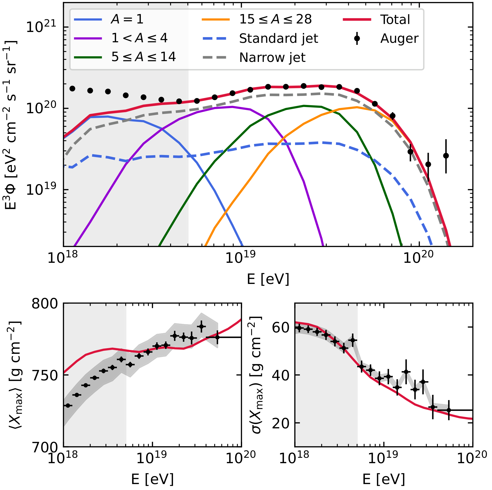
图注：\small{Combined fit to UHECR spectrum and composition data from Auger \citep{PierreAuger:2018gfc, PierreAuger:2020kuy, PierreAuger:2020qqz} using a standard + narrow jet GRB population model. The energy range excluded from the fit is shown by grey shading. Note that the abundance fraction of Fe is zero at injection.}
对应解读：对应“建议重点查看的图表”第1项UHECR总能谱拟合、第2项源分量贡献以及第3项质量组成图；也对应“关键图表逐图导读”中关于能谱拟合和组成诊断的核心解读。
入选理由：这是全文最核心的拟合图，直接展示标准+窄喷流GRB模型对Auger UHECR能谱和组成数据的联合拟合，并标出未参与拟合的能区。日报重点讨论的最高能端是否由窄喷流补足、模型是否同时满足能谱与组成、以及混合注入中Fe为零等关键信息，都主要依赖这张图判断。
来源与置信度：\(arxiv_source\)；high；\(arxiv_source\) / aa.tex:figure[1]
Fig02
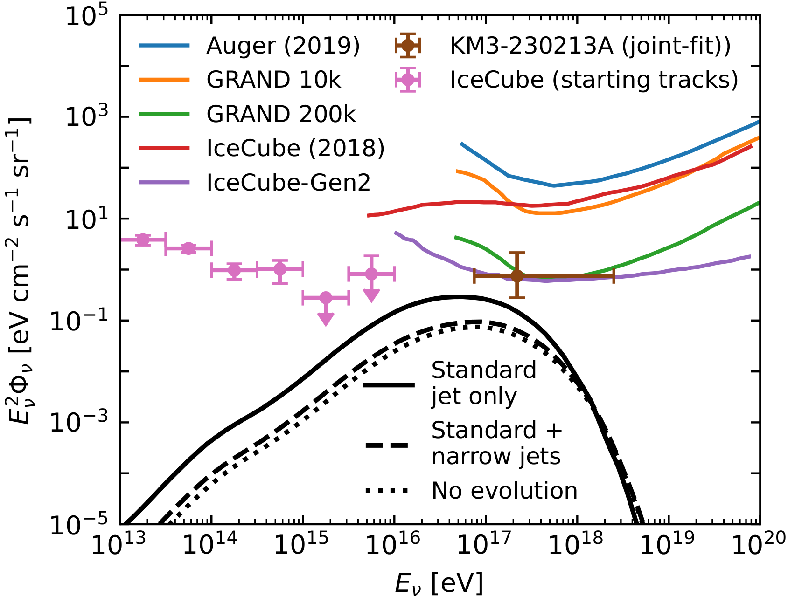
图注：\small{All-flavor cosmogenic $\nu$ fluxes for the models presented in Table~\(\ref{tab:best_fit_param}.\) The flux upper limits from the IceCube \(\citep{IceCube:2018fhm},\) Auger \(\citep{PierreAuger:2019ens},\) and the projected 90\% C.L. sensitivities of the IceCube-Gen2 radio array \(\citep{IceCube:2019pna, IceCube-Gen2:2020qha},\) GRAND-10k, and GRAND200k \(\citep{GRAND:2018iaj}\) are also shown.}
对应解读：对应“建议重点查看的图表”第4项宇宙源中微子通量图，以及“关键图表逐图导读”中关于不同源演化模型的全天区全味中微子通量比较。
入选理由：这张图直接给出各最佳拟合模型的宇宙源中微子通量，并与IceCube、Auger当前上限以及IceCube-Gen2、GRAND等未来灵敏度比较。它支撑日报中“低红移窄喷流主导会降低宇宙源中微子通量、且不违反当前多信使约束”的关键结论。
来源与置信度：\(arxiv_source\)；high；\(arxiv_source\) / aa.tex:figure[2]
Fig03
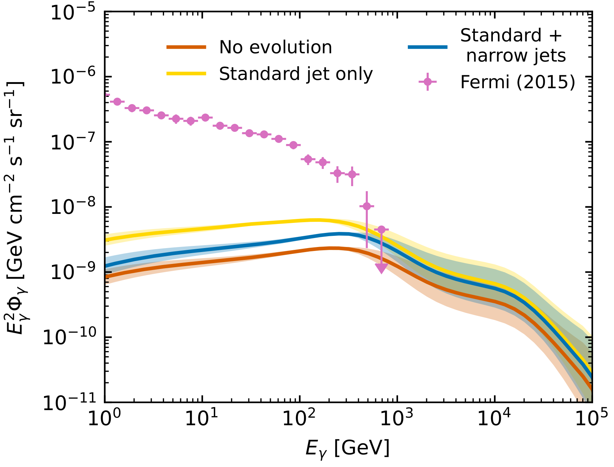
图注：\small{Cosmogenic $\gamma$-ray fluxes for different source redshift evolution models, assuming $z_{\rm max}=2$. Shaded bands indicate the uncertainty from the infrared and radio backgrounds used in the cascade calculation. The Fermi-LAT IGRB flux is shown for Galactic foreground model A \citep{Fermi-LAT:2014ryh}.}
对应解读：对应“建议重点查看的图表”第5项级联伽马射线约束图，以及“关键图表逐图导读”中关于Fermi-LAT弥散伽马背景限制的多信使检验。
入选理由：这张图展示不同源红移演化模型下的宇宙源级联伽马射线通量，并包含红外和射电背景不确定性带以及Fermi-LAT IGRB观测参照。它是判断模型是否会因电磁级联过量而被排除的关键图，补足了能谱、组成和中微子之外的多信使约束。
来源与置信度：\(arxiv_source\)；high；\(arxiv_source\) / aa.tex:figure[3]
强相关工作
这篇工作属于 GRB 作为 UHECR 源的长线讨论，与 Waxman 和 Vietri 在 \(1990\) 年代提出的 GRB-UHECR 能量预算思想有直接历史关系，也与后来的 IceCube GRB 中微子非探测形成张力。早期纯质子、强演化 GRB 模型通常预言较高的 PeV–EeV 中微子通量；IceCube 对 GRB prompt 窗口和堆叠样本的限制削弱了这些模型。本文的不同点是采用混合成分和低红移窄喷流分量，从而降低传播中微子产额。
同类观测背景包括 Auger 和 Telescope Array 的 UHECR 能谱、组成和各向异性结果，以及 GRB 221009A 的 TeV 观测论文。检索时可用关键词 “GRB 221009A TeV photons LHAASO”， “gamma-ray bursts ultrahigh energy cosmic rays baryon loading”， “cosmogenic neutrinos mixed composition UHECR”， “Auger UHECR spectrum composition combined fit”， “narrow jet GRB local population UHECR”。若要寻找相反观点，可检索 “IceCube constraints gamma-ray bursts cosmic rays” 和 “GRBs excluded as dominant sources of UHECRs”，重点看其假设是否为 prompt 中微子、纯质子或标准喷流族群。
同一事件 / 同类源线索：
- https://arxiv.org/abs/2608.27197
- https://arxiv.org/pdf/2608.27197
- https://gcn.gsfc.nasa.gov/other/221009A.gcn3
相似工作：
基础理论 / 方法工作：
- https://arxiv.org/abs/astro-ph/9505082
- https://arxiv.org/abs/astro-ph/9807282
- https://arxiv.org/abs/0803.2309
相反观点 / 张力线索：
2. Anisotropy-driven constraints on the transition from Galactic to extragalactic cosmic-ray sources
- 来源：arXiv / astro-ph.HE
- 链接：https://arxiv.org/abs/2608.26933v1
- 作者：Teresa Bister, Foteini Oikonomou, Damiano F. G. Fiorillo
- 评分：novelty 8/10，importance 8/10，relevance 9/10，final 9.35/10
- 推荐理由：Uses UHECR dipole anisotropy and 3D Galactic magnetic-field propagation to constrain the Galactic-to-extragalactic transition; important and directly relevant to cosmic-ray origin studies.
中文题目：用宇宙线各向异性约束银河系源到河外源的过渡
做了什么：这篇论文用超高能宇宙线偶极各向异性的方向和强度，检验踝区以下中等质量核的来源。作者把宇宙线在三维银河磁场中的传播算进去，比较单个连续源、瞬变源、银河源分布和河外源情景。核心结论是：若把踝区以下的中等质量成分归因于银河系源，预测偶极通常比观测强，和数据相差超过 \(3\sigma\)；若它们主要来自河外源，同时在第二膝附近仍有逐渐消退的重银河成分，则能自然解释偶极方向从近银心方向转向大尺度结构方向。
为什么重要：宇宙线从银河系源过渡到河外源发生在哪个能区，是高能天体物理的老问题。能谱和成分本身有很强模型退化：源谱、最大刚度、传播、相互作用截面和空气簇射模型都能改变解释。本文强调各向异性是一个更硬的约束，因为偶极方向和幅度同时受源空间分布与银河磁场调制控制，不容易被单纯调节能谱参数完全掩盖。
理论 / 观测 / 仪器方法价值：对理论而言，它给出了一个把源成分模型和方向信息一起筛选的判据：不是只问某个模型能否拟合 \(X_{\max}\) 或能谱，而是还要问它是否会产生过大的偶极。对观测而言，它说明踝区以下、尤其 \(\mathrm{EeV}\) 量级的全天天区曝光和成分分辨各向异性测量非常关键。对方法而言，它把三维银河磁场传播模拟和偶极统计量直接连接，用于排除一类看似能谱上可行的银河中等质量核模型。
为什么应该关注：如果你研究宇宙线源、银河磁场、超高能宇宙线组成或大尺度结构相关性，这篇文章值得关注，因为它把“过渡能量在哪里”这个问题从能谱拟合推进到方向诊断。它的结论若成立，意味着踝区以下相当一部分中等质量核可能已经是河外的，而不是银河 \(\mathrm{Peters}\) 循环的简单延伸；这会改变我们对银河加速器最高刚度、河外源低能端注入以及磁场遮蔽效应的理解。
展开详细解读：文章讲解、背景、理论、重点章节、图表与相关工作
文章详细讲解
科学问题：超高能宇宙线能谱在第二膝、踝区以及更高能端呈现结构，同时质量组成从轻到重再到混合变化。传统图像常把较低能的银河宇宙线按 \(\mathrm{Peters}\) 循环理解：不同核种在接近同一最大刚度时依次截止。但踝区以下出现的中等质量核是否仍属于银河源，还是已经来自河外源，并没有由能谱和组成唯一决定。本文抓住一个额外观测事实：\(8\,\mathrm{EeV}\) 以上的宇宙线通量有显著偶极，各向异性方向与河外大尺度结构预期相容；而在踝区附近或以下，偶极方向突然改变，并可与银心方向相容。作者的问题是：这种偶极方向和幅度能否容许踝区以下中等质量核来自银河源？
作者怎么做：论文使用三维银河磁场模型传播宇宙线，计算不同源情景下到达地球的方向分布。被检验的银河情景包括单个连续源、单个瞬变源以及更平滑的银河源分布；源可以产生中等质量核，且传播受到银河磁场规则场和湍动场的偏转、聚焦和扩散影响。作者不只是看方向是否能偏到观测方向，而是同时比较偶极幅度和偶极方向，并把不同能区、不同刚度以及成分假设下的预测与现有测量的置信区域对照。
关键结果：在作者采用的现代银河磁场模型中，若踝区以下中等质量核主要由银河连续源、瞬变源或银河源群提供，预测的偶极幅度普遍过大。直观原因是 \(\mathrm{EeV}\) 量级中等核的刚度已高到不能被银河磁场完全各向同性化；如果源分布仍强烈集中在银河盘或某些局部源，方向梯度会留下明显偶极。论文称这些银河起源模型相对观测被排除到超过 \(3\sigma\) 的水平。相比之下，河外中等质量核进入银河磁场后可以产生较弱、更符合观测的偶极；同时第二膝附近占优的重银河成分逐渐消退，可引导低能侧偶极方向接近银心，随后在更高能区转向河外大尺度结构方向。
局限和下一步：结论依赖银河磁场模型、湍动场实现、源分布假设、组成分解以及各向异性测量的系统误差。\(3\sigma\) 排除并不意味着任何可能的银河模型都绝对不行，特别是人为调节的局部源历史、异常强湍动、特殊源位置或复杂混合组成仍可能需要单独检验。下一步应把能谱、\(X_{\max}\)、核相互作用模型、到达方向多极矩和具体源目录联合拟合；观测上，AugerPrime、TAx4 以及未来全天天区任务若能在 \(1\) 到 \(10\,\mathrm{EeV}\) 同时给出成分选择后的各向异性，将直接检验本文的核心图像。
关键结果是怎么做出来的
本文最重要的证据链不是单一能谱拟合，而是“组成相关源模型 \(\rightarrow\) 银河磁场传播 \(\rightarrow\) 到达方向偶极 \(\rightarrow\) 与观测置信区域比较”。样本方面，论文针对已发表的 \(\mathrm{EeV}\) 到数十 \(\mathrm{EeV}\) 宇宙线大尺度各向异性测量，特别关注 \(8\,\mathrm{EeV}\) 以上显著偶极和踝区附近偶极方向变化。输入物理上，作者把踝区以下不能简单归入低能 \(\mathrm{Peters}\) 循环延伸的中等质量核作为待判别成分，并分别赋予银河源或河外源。
统计比较的核心量是偶极向量，而不是只看标量幅度。一个模型若给出接近观测幅度但方向错误，或者方向接近但幅度太强，都不能通过检验。作者在模拟到达方向图上提取偶极幅度和方向，再与观测给出的误差椭圆、置信区间或等价显著性诊断比较。论文摘要中报告的主要定量结论是：连续银河源、瞬变单源和银河源分布在当前三维银河磁场模型下预测的偶极都超过观测，偏离达到 \(>3\sigma\)。
支撑结论的图表应主要包括几类：不同能量或刚度下的偶极幅度曲线、偶极方向在天球上的轨迹、银河源与河外源情景的置信区域对比，以及对不同银河磁场模型或源参数的稳健性检查。读者应特别看模型点云是否整体落在观测允许区之外，而不是只看是否存在少数调参实现接近数据。若论文给出瞬变源年龄、距离或注入刚度的二维扫描图，关键是看被允许区域是否物理自然，还是只剩非常窄的精细调节区。
系统误差方面，最重要的是银河磁场不确定性、组成分解不确定性和实验曝光系统误差。银河磁场会改变偏转和磁透镜效应，从而影响偶极方向；组成影响刚度 \(R=E/Z\)，进而改变传播各向同性化程度；实验曝光和能标会影响不同能段之间的偶极比较。本文的稳健性论证在于使用较新的三维银河磁场模型并比较多类源情景后，银河中等质量核模型仍普遍给出过大偶极。
河外起源情景的通过并非因为河外源必然完全各向同性，而是因为低能河外成分经过银河磁场调制后可保持较小偶极，同时高能端又能与大尺度结构相关偶极相接。本文提出的物理图像是一个混合过渡：第二膝附近的重银河成分逐渐衰退，低能侧偶极因此可受银心方向牵引；中等质量河外成分接管后，偶极方向随能量改变，最终在 \(8\,\mathrm{EeV}\) 以上与河外大尺度结构一致。
展开背景、理论、公式、模型、章节和图表导读
背景知识
宇宙线起源问题按能量大致分为银河宇宙线和超高能宇宙线两套框架。低于膝区的宇宙线通常与银河超新星遗迹、脉冲星风云、星协或其他银河加速器联系在一起；最高能部分则很难被银河磁场束缚，也很难由常规银河源加速，因此常归因于河外天体，如射电星系、星暴星系、活动星系核或伽马暴遗迹。但中间过渡区并没有清晰边界。
历史上，\(\mathrm{Peters}\) 循环提供了理解能谱结构的简洁图像：如果加速或逃逸由刚度控制，那么质子先在较低能量截止，较重核按电荷数 \(Z\) 在更高总能量截止。因此膝、第二膝等结构可被解释为不同核种依次衰减。问题在于，到 \(\mathrm{EeV}\) 能区后，中等质量核的存在既可解释为银河高刚度加速器的尾部，也可解释为河外源低能端进入银河后的结果。
观测背景近年发生了变化。Pierre Auger Observatory 报告 \(8\,\mathrm{EeV}\) 以上存在显著大尺度偶极，方向不指向银心，而更接近河外物质分布的预期。另一方面，在踝区及以下能量，偶极相位或方向出现变化，低能侧可与银心方向相容。这使得方向信息成为判别过渡模型的关键，因为一个真正银河盘源主导的成分不应只在能谱中留下痕迹，也应在天球上留下可计算的非均匀性。
为什么现在值得重新看？一方面，银河磁场模型已有明显更新，包括规则螺旋场、晕场、X 形场和湍动场的更复杂约束；另一方面，Auger 和 Telescope Array 的曝光积累使大尺度各向异性测量更稳定。再加上质量组成测量提示踝区附近并非单一质子成分，过渡模型必须同时解释能谱、组成和方向，而不是只拟合其中之一。
该领域常见误区之一是把“磁场会偏转宇宙线”误解成“方向信息没用”。事实上，偏转大小取决于刚度 \(R=E/Z\)，在 \(\mathrm{EeV}\) 量级中等核仍可能保留大尺度梯度。另一个误区是认为偶极幅度小就自动支持银河扩散模型；但如果源分布集中在银河盘，扩散逃逸本身会产生与密度梯度相关的偶极，太强的各向异性反而是银河模型的难题。
基础理论 / 方法脉络
基础物理图像是带电粒子在磁场中的洛伦兹运动。宇宙线的偏转主要由刚度 \(R=pc/(Ze)\) 控制，而不是只由总能量 \(E\) 控制。同样能量下，铁核比质子刚度低 \(26\) 倍，更容易被磁场各向同性化；但在 \(\mathrm{EeV}\) 能区，即使中等质量核的拉莫尔半径也可能达到银河尺度的非忽略比例，因此源分布的空间不均匀性会体现在到达方向偶极上。
若宇宙线在银河磁场中接近扩散传播，通量各向异性与粒子密度梯度有关。源集中在银河盘和银心附近时，地球附近密度梯度往往不小；除非扩散非常强、湍动场异常有效，或源分布被特殊调节，预测偶极可能超过观测。这是本文排除银河中等质量核情景的物理根源。
本文涉及的模型假设包括：给定源类型和注入组成，利用三维银河磁场传播粒子，得到地球处的方向分布；再从方向分布提取偶极向量。连续源可代表长期稳定的银河源群或单个持续源，瞬变源代表有限年龄爆发后的传播云团。河外源情景则需考虑进入银河边界前的外部各向异性和经过银河磁场后的调制。
观测方法上，大尺度各向异性通常通过赤经谐波分析、全天天区重建或多极展开来估计。偶极有幅度和方向两个信息；若只在部分天区曝光，方向重建需要处理曝光函数和南北半球互补性。实验能标、曝光不均匀、天气和探测器效率会给偶极幅度带来系统误差，而成分选择的不确定性会通过 \(Z\) 进入刚度估计。
一个关键退化是成分与磁场的退化：较重组成和较强湍动都能降低各向异性，但它们也会改变能谱、\(X_{\max}\) 分布和高能端方向相关性。另一个退化是源距离、年龄与扩散系数的退化，特别是瞬变源；较老或较远的源更平滑，但通量和谱形也会变化。本文的价值就在于把这些退化压缩到一个可观测的偶极向量空间中检验。
公式与推导
第一步从刚度定义开始。对电荷数为 \(Z\)、动量为 \(p\) 的宇宙线粒子，刚度为
其中 \(E\) 是超相对论总能量，\(e\) 是元电荷。这个量决定磁偏转，而不是单独的 \(E\)。因此踝区以下中等质量核是否能被银河磁场抹平，取决于 \(E/Z\)。
第二步看拉莫尔半径。均匀磁场 \(B\) 中粒子的回旋尺度为
若 \(r_{\rm L}\) 与银河盘厚度或源梯度尺度相比不再很小，扩散近似会变差，方向记忆增强；若仍较小，则可用扩散近似估算偶极。
第三步，在近似扩散传播中，粒子数密度 \(n(\mathbf{x},E)\) 的通量满足
其中 \(D(E)\) 是扩散系数。这个式子说明，只要银河源造成 \(\nabla n\neq 0\)，就会有净流，从而有偶极各向异性。
第四步，把扩散流与各向异性幅度联系起来。若近似各向同性背景上的一阶偶极扰动，偶极向量可写为
这里 \(c\) 是光速，\(\boldsymbol{\delta}\) 的模给出偶极幅度，方向给出通量最大方向。银河源模型若有大密度梯度或大 \(D(E)\)，就倾向于产生过大 \(|\boldsymbol{\delta}|\)。
第五步，扩散系数常用刚度标度表示为
其中 \(D_{0}\) 是参考刚度 \(R_{0}\) 处扩散系数，\(\eta\) 反映湍动谱。这个标度意味着能量越高或电荷越低，扩散越快，各向异性通常越强；这正是 \(\mathrm{EeV}\) 银河成分难以隐藏的原因。
第六步，对瞬变点源，扩散方程的格林函数近似为
其中 \(Q(E)\) 是注入谱，\(r\) 是源距，\(t\) 是源年龄。代入偶极公式可得瞬变源的典型幅度
这个近似显示，单个瞬变源的偶极由几何距离和年龄强烈控制，不容易在提供足够通量的同时保持很小各向异性。
第七步，观测到达方向分布可用偶极展开表示为
其中 \(\hat{\mathbf{n}}\) 是天球方向，\(\Phi_{0}\) 是全天总通量。模拟传播的任务就是从源和磁场给出 \(\Phi(\hat{\mathbf{n}},E)\)，再反推出 \(\boldsymbol{\delta}\)。
第八步，实验比较通常可写成偶极向量空间中的卡方或似然诊断：
其中 \(\boldsymbol{\delta}_{\rm obs}\) 是观测偶极，\(\boldsymbol{\delta}_{\rm model}\) 是模型预测，\(\mathbf{C}\) 是包含幅度和方向误差的协方差矩阵。若对应偏离超过 \(3\sigma\)，说明模型在方向数据上难以成立。
第九步，若考虑混合银河和河外成分，总偶极可近似按通量加权：
其中 \(\Phi_{\rm G}\) 与 \(\Phi_{\rm EG}\) 分别是银河和河外通量。这个式子解释了本文的过渡图像：重银河成分在第二膝附近仍可影响方向，但随能量升高衰退后，河外中等质量成分主导，总偶极方向发生转变。
模型拟合 / 应用方法
这类工作的拟合对象至少有三层：能谱和组成给出每个成分的通量权重，传播模型给出每个成分的到达方向分布，最后由方向分布提取偶极与观测比较。本文重点在第三层，即在给定可行成分解释后，用偶极方向和幅度排除或支持源起源。实际拟合量包括 \(|\boldsymbol{\delta}(E)|\)、偶极赤经和赤纬，或等价的三维偶极分量。
似然可以构造成 binned 天图的泊松似然，也可以在偶极向量空间中使用多元高斯近似。前者保留更多天图信息，但需要精确曝光函数；后者更适合直接与已发表偶极测量比较。若模拟给出一组源参数下的 \(\boldsymbol{\delta}_{\rm model}\)，就可用 \(\chi^{2}\)、置信区域覆盖率或 \(p\) 值判断模型是否被排除。
参数退化主要来自 \(Z\)、\(D(R)\)、源空间分布和银河磁场。较高 \(Z\) 降低刚度，通常降低偶极；较小扩散系数也可降低偶极；但这些调节会影响传播时间、谱形以及是否能在 \(\mathrm{EeV}\) 能区提供足够通量。瞬变源还存在 \(r/t\) 退化：根据近似 \(|\boldsymbol{\delta}|\simeq 3r/(2ct)\)，源越老或越近，偶极可能越小，但通量归一化和谱软化也会改变。
残差应从两个角度看。第一是幅度残差：模型是否系统性高于观测偶极上限或置信带。第二是方向残差：模型最大通量方向是否落在观测方向误差范围内。一个银河盘源模型可能给出接近银心的方向，但如果幅度太大仍失败；一个河外模型可能幅度合适，但若不能接上 \(8\,\mathrm{EeV}\) 以上的大尺度结构方向也不完整。
模型可能失败的地方包括：银河磁场模型没有覆盖真实湍动结构，局部泡或局部磁场片层导致偏转不同；组成测量对 hadronic interaction model 敏感；不同实验能标存在偏移；源不是平滑分布也不是单个源，而是少数近邻源的复杂叠加。本文的结论更应理解为：在标准且更新的银河磁场与源设定下，银河中等质量核解释会产生过强偶极，因此需要非常特殊的额外假设才能逃脱。
重点章节 / 结果段落怎么读
数据和观测约束部分应先读。重点找作者如何整理不同能区的偶极测量，特别是 \(8\,\mathrm{EeV}\) 以上显著偶极、踝区附近方向变化，以及低能侧与银心方向相容的证据。读者要注意他们使用的是偶极向量、赤经谐波还是全天天图重建，以及误差如何进入比较。
模型设定部分是全文关键。这里应看作者采用哪些三维银河磁场模型，是否包括规则场、晕场和湍动场；源情景如何分类为连续源、瞬变源、银河源分布和河外源；注入组成如何设置为踝区以下中等质量核或第二膝附近重银河成分。这个部分决定了排除结论的适用范围。
传播模拟和偶极提取部分要重点检查技术细节。读者应看粒子是正向传播还是反向追踪，能量或刚度网格如何选，边界条件是什么，如何从模拟天图计算 \(\boldsymbol{\delta}\)。如果论文比较多个磁场模型或随机湍动实现，应关注模型散布是否足以覆盖观测。
主结果部分应围绕银河源被排除和河外源可行两条线来读。对每类银河情景，检查预测偶极幅度相对观测上限高出多少、方向偏离多少、\(>3\sigma\) 的统计定义是什么。对河外情景，检查是否同时解释了高能偶极与低能方向转变，而不是只在某个单一能段拟合成功。
讨论和稳健性检验部分决定结论强度。应关注作者如何处理成分不确定性、能标偏移、源谱选择、最大刚度、银河磁场模型差异和局部源特殊性。若附录给出参数扫描或替代磁场结果，建议与正文结论对照，判断排除是否依赖少数默认参数。
建议重点查看的图表
-
偶极幅度随能量变化图：看观测点、误差棒和不同模型曲线，关键是银河源模型是否在踝区以下系统性高于数据。
-
偶极方向天球图：看观测方向置信区域、银心方向、河外大尺度结构预期方向和模型预测点云。方向突变是否由模型自然给出，是判断过渡图像的核心。
-
银河连续源或源分布模型的参数扫描图：看源径向分布、盘厚、最大刚度或组成变化是否能把模型拉入允许区。如果只有极端参数可行，应视为精细调节。
-
瞬变单源的距离—年龄图：看哪些 \(r\) 和 \(t\) 区域满足通量、谱形和偶极约束。重点不是某个点能否拟合，而是允许区域是否与已知银河候选源群相容。
-
不同银河磁场模型比较图：看规则场和湍动场变化带来的模型散布。若所有磁场模型都给出过强偶极，结论更稳健；若某一模型例外，应检查其物理合理性。
-
混合银河—河外成分图：看 \(\Phi_{\rm G}/\Phi_{\rm EG}\) 随能量变化如何驱动总偶极方向转变。特别注意第二膝附近重银河成分消退与踝区以下中等质量河外成分接管是否连续。
-
置信度或 \(\chi^{2}\) 诊断表：看 \(>3\sigma\) 排除如何定义，是否考虑试验因子、模型扫描自由度和观测协方差。
关键图表逐图导读
图 1：通常应是观测现象总览。横轴可能是能量，纵轴可能是偶极幅度或相位；数据点代表 Auger 或联合观测的各向异性测量，误差棒给出统计和系统不确定性。读图时要抓住两个事实：\(8\,\mathrm{EeV}\) 以上偶极显著，踝区附近方向或相位发生变化。陷阱是不要把赤经相位变化等同于完整三维方向变化，需看论文是否补充赤纬或全天天区重建。
图 2：可能展示银河磁场传播后的模型天图或偶极方向。坐标轴通常是银河经纬或赤道坐标，标出银心、反银心、观测偶极和模型最大通量方向。读者应看模型点云是否沿银河盘或银心附近聚集，以及是否落入观测置信区域。陷阱是磁场偏转可使源方向和到达方向不同，所以不能用源位置直接判断模型成败。
图 3：应重点检查银河连续源或源分布模型的偶极幅度曲线。横轴为 \(E\) 或 \(R\)，纵轴为 \(|\boldsymbol{\delta}|\)，多条模型线对应不同组成、源分布或磁场模型。若模型线在踝区以下普遍高于观测点或上限，便是本文排除银河起源的主要图形证据。陷阱是只看一条默认曲线，应关注参数变化后的包络是否仍过高。
图 4：若有瞬变源扫描，坐标轴可能是源年龄 \(t\) 与距离 \(r\)，颜色表示偶极幅度、\(\chi^{2}\) 或是否满足观测约束。关键看满足通量和各向异性的区域是否重叠。陷阱是瞬变源可以通过增大年龄降低偶极，但过老源的高能粒子可能已扩散稀释，不能只凭偶极一项判断可行。
图 5：河外起源或混合模型图可能给出总偶极向量随能量的轨迹。坐标可为天球投影或偶极分量空间，模型线从第二膝附近的银河重成分方向逐渐转向高能河外方向。主要结论是方向变化可以由成分权重变化和银河磁场调制共同产生。陷阱是这类图常对组成分解敏感，应同时看对应能谱和质量组成是否合理。
图 6：稳健性或系统误差图可能比较不同银河磁场模型、湍动实现或能标偏移。读者要看结论是否由某个默认磁场驱动，还是在模型族中普遍成立。若置信区间很宽，需要判断宽度来自真实物理不确定性还是模拟统计不足。
论文原图 / 可嵌入图片
Fig04
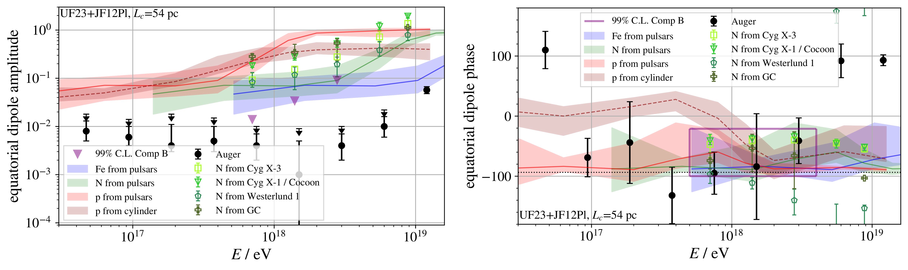
图注：Equatorial dipole amplitude (\textit{top}) and right ascension (\textit{bottom}) as a function of energy for multiple source candidates and mass composition assumptions. The shaded areas / error bars show the median and inner 90\% over the 8 \(\texttt{UF23}\) GMF models and up to 3 random seeds for the random GMF model. Black error bars show the Auger data from~\(\cite{PierreAuger:2024Anisotropy19Y}.\) The purple triangles (\textit{top}) and purple box (\textit{lower}) mark the 99\% C.L. limits on the dipole amplitude and right ascension of Component B (Table~\ref{tab:fit}) in the energy range used for the fit in Sec.~\(\ref{sec:fit}.\)
对应解读：建议重点查看的图表 1、3、5、7；关键图表逐图导读中的图 3；模型拟合段落关于偶极幅度残差和方向残差的检验。
入选理由：这张图直接把多个银河源候选体和不同质量组成假设下的赤道偶极幅度、赤经随能量变化与 Auger 数据对比，并给出 8 个 UF23 银河磁场模型和随机场实现的 90% 散布，是检验“银河中等质量核是否系统性产生过强偶极”的核心证据。紫色 99% C.L. 限制也直接对应日报中要求检查的置信度排除。
来源与置信度：\(arxiv_source\)；high；\(arxiv_source\) / \(template_arxiv.tex\):figure[4]
Fig01
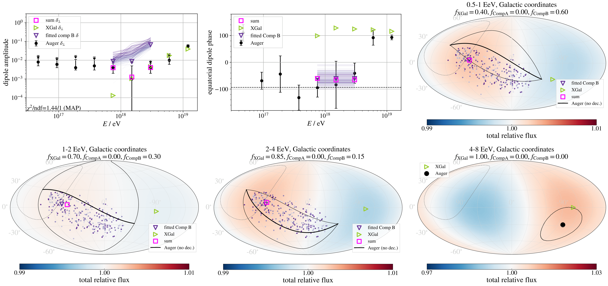
图注：Visualization of the combined model in the \(\textbf{no-iron scenario}\) (no Galactic Component A above $0.5\,$EeV), and Component B is anisotropic. In the upper row, the dipole amplitude and equatorial dipole phase (i.e.~right ascension) are shown, and in the middle and lower rows the resulting flux in Galactic coordinates in four energy bins, smoothed with a $45^\circ$ Gaussian smearing. The green / purple / pink unfilled markers represent the extragalactic component / Component B best-fit / summed dipole direction, taking into account the flux weights $f$ as stated in the skymap titles and Table~\(\ref{tab:fit}.\) The purple dots and lines show draws from an MCMC sampler to visualize the uncertainty on the dipole of Component B. The color visualizes the mean dipole amplitude over the three energy bins (darker purple = larger amplitude). The dashed line in the upper right plot is the right ascension of the Galactic center. The black points in the upper row show the Auger data from~\(\citet{PierreAuger:2024Anisotropy19Y},\) where the error bars represent $1\sigma$ uncertainties. For energy bins where the dipole is not yet established at discovery level, 95\% C.L. upper limits are shown. In the skymap for (4-8)\,EeV, the Auger measurements are shown as a central marker and $1\sigma$ contour. Below 4\,EeV where the declination is not measured, the measured right ascension is represented as a thick line, and thinner lines visualize the uncertainty. The edge of the Auger exposure is shown as a dashed circle.
对应解读：建议重点查看的图表 1、2、6；关键图表逐图导读中的图 1、图 2、图 5；模型拟合段落关于混合成分总偶极向量和观测置信区域比较。
入选理由：该图同时展示无铁尾情景下的偶极幅度、赤经相位、不同能段天图、观测误差棒、95% 上限、4–8 EeV 方向置信轮廓以及 Component B 的 MCMC 不确定性，是理解论文如何把成分权重、银河/河外方向和观测偶极联系起来的总览图。
来源与置信度：\(arxiv_source\)；high；\(arxiv_source\) / \(template_arxiv.tex\):figure[1]
Fig02
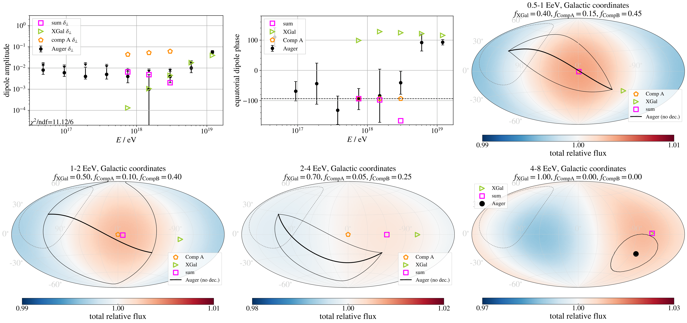
图注：Same as Fig.~\(\ref{fig:fit_sibyll},\) but in the \(\textbf{iron-tail scenario}\) (subdominant Galactic Component A present between 0.5\,EeV and 4\,EeV pointing to the Galactic center), while Component B is isotropic.
对应解读：建议重点查看的图表 2、6；关键图表逐图导读中的图 5；详细解读中关于第二膝附近重银河成分消退并引导偶极方向变化的段落。
入选理由：这张图给出 iron-tail 情景，即 0.5–4 EeV 存在指向银心的亚主导银河铁尾而 Component B 各向同性。它直接支撑日报中“第二膝附近重银河成分消退与踝区以下中等质量成分接管是否连续”的混合图像，是 Fig01 的关键对照。
来源与置信度：\(arxiv_source\)；high；\(arxiv_source\) / \(template_arxiv.tex\):figure[2]
Fig07
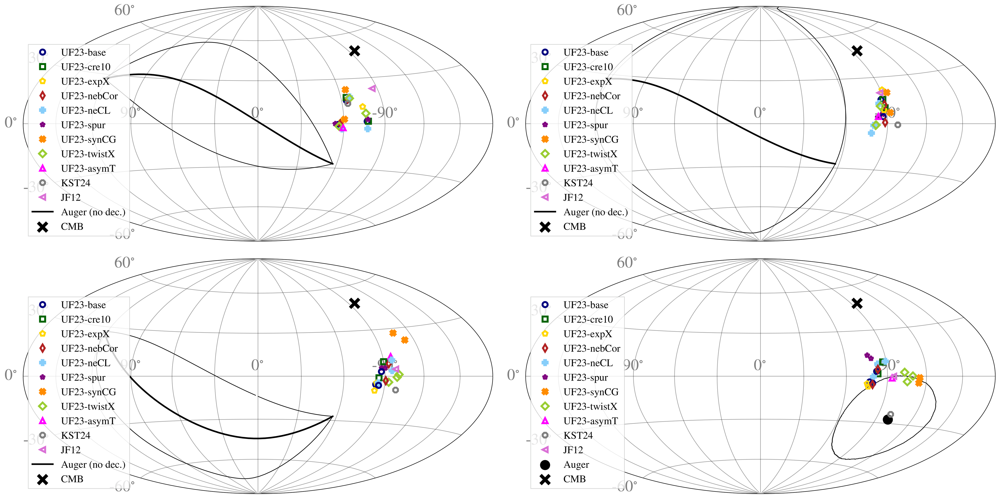
图注：Predicted dipole directions for extragalactic sources following the LSS from CosmicFlows4~\(\citep{Valade:2026_CF4}\) in four energy bins, (0.5-1)\,EeV (\textit{upper left}), (1-2)\,EeV (\textit{upper right}), (2-4)\,EeV (\textit{lower left}), and (4-8)\,EeV (\textit{lower right}). The dipole direction is calculated taking into account the limited exposure of the Pierre Auger Observatory. The dipole expected from the Compton-Getting effect (0.6\% before GMF pointing towards the CMB dipole direction~\citep{Compton_Getting:1935, Kachelriess:2006}) is included in the model and dominates over the LSS dipole below $\simeq1\,$EeV. The markers show different coherent GMF models, combined with up to three different realizations of the random field from \(\texttt{JF12+Planck}\)~\(\citep{Jansson:2012pc, Jansson:2012b_Random, Planck:2016GMF}.\) The measured dipole directions from Auger~\(\citep{PierreAuger:2024Anisotropy19Y}\) are either shown as a central marker and $1\sigma$ contour for (4-8)\,EeV, or as a thick line representing the measured right ascension, and thinner lines visualizing the uncertainty (below 4\,EeV where the declination is not measured).
对应解读：建议重点查看的图表 2、5；关键图表逐图导读中的图 2、图 5；详细解读中关于河外大尺度结构方向与高能偶极相容的段落。
入选理由：该图展示河外源随 CosmicFlows4 大尺度结构分布时，在四个能段的预测偶极方向，并叠加 Auger 方向约束、不同相干银河磁场模型和随机场实现。它是判断河外起源是否能自然接上观测方向、以及磁场模型不确定性是否破坏结论的关键方向图。
来源与置信度：\(arxiv_source\)；high；\(arxiv_source\) / \(template_arxiv.tex\):figure[7]
Fig05
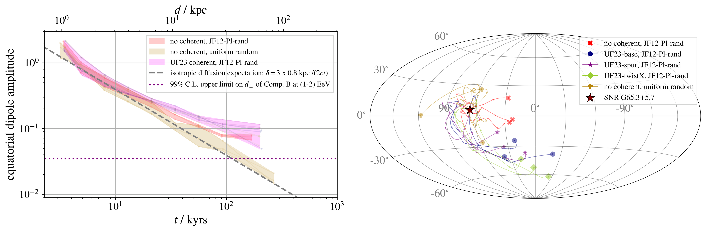
图注：Dipole amplitude and direction as a function of time $t$ since injection from SNR G65.3+5.7 for different GMF models and rigidity $R=10^{17.3}\,$EV. The data are binned into 9 logarithmic bins and one cumulative bin at late times containing $\lesssim10\%$ of all recorded CRs (denoted by a larger marker in the lower figure). The bins are centered on the median time/distance of the respective bin in the upper figure. We always use three random realizations of each random field, and the error bars in the upper figure show the minimum and maximum. For the coherent field, 3 coherent field models (\(\texttt{UF23-base},\) \(\texttt{UF23-spur},\) \texttt{UF23-twistX}) are used, and the error bars in the upper figure again show the minimum and maximum over all combinations with the turbulent field realizations.
对应解读：建议重点查看的图表 4、5；关键图表逐图导读中的图 4；模型拟合段落关于瞬变源 r/t 退化和偶极随时间变化的讨论。
入选理由：这张图针对具体瞬变源 SNR G65.3+5.7 展示注入后不同时间的偶极幅度和方向，并比较不同 GMF 模型与随机场实现。它直接对应日报中要求查看的瞬变源年龄效应和磁场模型散布，可用于判断通过增大年龄降低偶极是否真的可行。
来源与置信度：\(arxiv_source\)；high；\(arxiv_source\) / \(template_arxiv.tex\):figure[5]
Fig06
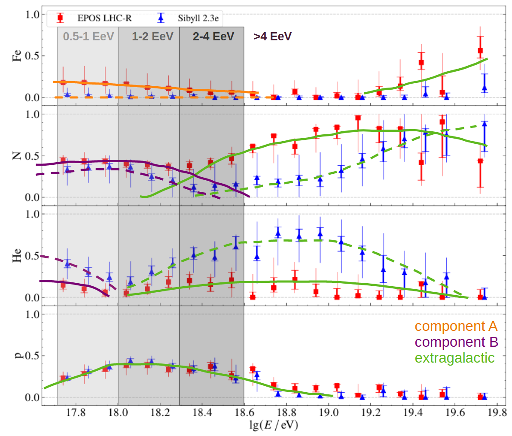
图注：Model for the relative contributions of the three components: a possible tail of Galactic iron (Component A, orange), an intermediate component that could be either Galactic or extragalactic (Component B, purple), and an extragalactic mixed composition following a Peters cycle that dominates above the ankle (extragalactic, green). The dashed (solid) lines are meant to guide the eye and are oriented on the median values for the Sibyll2.3e (EPOS-LHC-R) hadronic interaction model. The mass composition fractions as derived by Auger from~\(\citet{PierreAuger:2026MassComposition}\) for the two hadronic interaction models are shown as markers. The three energy bins used in the above analysis (guided by the binning used for the dipole in~\citet{PierreAuger:2024Anisotropy19Y}) are indicated by the grey boxes.
对应解读：建议重点查看的图表 6；关键图表逐图导读中的图 5；模型拟合段落关于能谱和组成给出各成分通量权重的第一层拟合。
入选理由：该图给出银河铁尾 Component A、中等质量 Component B 和踝区以上河外混合成分的相对贡献，并标出 Auger 组成分数及用于偶极分析的能量箱。它为 Fig01、Fig02 中总偶极由不同成分加权叠加提供必要背景，能帮助读者判断混合银河—河外过渡是否与能谱组成连续相容。
来源与置信度：\(arxiv_source\)；high；\(arxiv_source\) / \(template_arxiv.tex\):figure[6]
强相关工作
这篇工作直接连接到两类文献。第一类是超高能宇宙线大尺度各向异性观测，尤其 Pierre Auger Observatory 对 \(8\,\mathrm{EeV}\) 以上偶极的发现，以及后续关于能量依赖相位和幅度的结果。检索关键词可用“Pierre Auger large-scale anisotropy dipole 8 EeV”、“ultra-high-energy cosmic ray dipole large scale structure”、“Auger ankle anisotropy phase”。
第二类是银河—河外过渡模型和质量组成模型，包括 \(\mathrm{Peters}\) 循环、第二膝、踝区解释、混合组成注入和河外低能截止等。检索关键词可用“Galactic extragalactic transition cosmic rays ankle second knee composition”、“Peters cycle cosmic rays rigidity cutoff”、“UHECR composition ankle transition”。本文与一些仅依赖能谱和 \(X_{\max}\) 拟合的模型形成张力：后者可能允许踝区以下银河中等质量成分，但若没有同时满足偶极约束，就会被本文指出的方向数据排除。
同类方法上，还应查找利用银河磁场反向追踪、磁透镜和多极展开约束源分布的研究。相关关键词包括“Galactic magnetic field UHECR propagation anisotropy”、“Jansson Farrar Galactic magnetic field cosmic rays”、“UHECR dipole composition magnetic deflection”。如果要找相反观点，应检索“Galactic origin EeV cosmic rays anisotropy constraints”与“nearby Galactic source EeV cosmic rays”，重点看它们是否考虑完整三维偶极和当前观测协方差。
同一事件 / 同类源线索：
- https://arxiv.org/abs/2608.26933
- https://arxiv.org/pdf/2608.26933
- https://arxiv.org/abs/1709.07321
- https://www.science.org/doi/10.1126/science.aan4338
相似工作：
基础理论 / 方法工作：
- https://ui.adsabs.harvard.edu/abs/1961NuovoC..22..800P/abstract
- https://arxiv.org/abs/1204.3662
- https://arxiv.org/abs/1210.7820
相反观点 / 张力线索：
3. Getting Warmer: IceCube Nears Freeze Out
- 来源：arXiv / astro-ph.HE
- 链接：https://arxiv.org/abs/2608.26258v1
- 作者：Mainak Mukhopadhyay, Gordan Krnjaic
- 评分：novelty 8/10，importance 8/10，relevance 9/10，final 9.35/10
- 推荐理由：Uses IceCube diffuse Galactic high-energy neutrino emission to constrain dark-matter annihilation to neutrinos and discusses Gen2/KM3NeT prospects; strong relevance to high-energy neutrino astrophysics and multimessenger DM searches.
中文题目：越来越接近“冻出”：用 IceCube 银河系弥散中微子约束暗物质湮灭
做了什么：这篇文章把 IceCube 最近对银河系弥散高能中微子的高显著性探测，转化为对暗物质湮灭到中微子的约束。作者做了两条互补路线：一条只用扣除背景后的银河经度方向淋浴事件分布，不依赖具体银河宇宙线弥散发射模型，因此较保守；另一条用内银河区在不同宇宙线发射模板下推断出的中微子能谱，直接比较可能的暗物质谱贡献。主要结论是：现有银河中微子数据已经能把若干 \(\mathrm{TeV}\) 量级暗物质的 \(\langle\sigma v\rangle\) 约束推进到比旧限制强数倍，且在模板依赖分析中已经接近热遗迹基准截面 \(\langle\sigma v\rangle\simeq 3\times10^{-26}\,\mathrm{cm^3\,s^{-1}}\)。
为什么重要：暗物质湮灭到中微子通常被认为难测，因为中微子有效面积小、角分辨率有限、天体中微子背景复杂。但银河系弥散中微子的首次稳健探测改变了局面：它提供了一个真实存在、来自银河盘和内银河区的高能中微子数据集。若暗物质在银河晕中湮灭并直接或级联地产生中微子，它会叠加在这种弥散信号上。本文的重要性在于，它不是等待一个孤立源或太阳俘获信号，而是把整个银河系当成暗物质中微子探测器。
理论 / 观测 / 仪器方法价值：对理论来说，本文把热冻出暗物质的经典目标 \(\langle\sigma v\rangle\) 与实际中微子天图和能谱联系起来，检验了 \(\mathrm{TeV}\) 量级暗物质到中微子的可见度。对观测来说，它展示了弥散银河中微子信号不只是宇宙线传播问题，也可作为暗物质搜索通道。对方法来说，文章并列给出模板无关和模板依赖两种约束：前者稳健但较弱，后者灵敏但受银河宇宙线模型影响更大，清楚体现了该类分析的系统误差结构。
为什么应该关注：如果你关注 IceCube、KM3NeT、IceCube-Gen2 或银河宇宙线传播，这篇文章值得看，因为它说明未来银河中微子图像的科学产出不止于确认强子相互作用，还会直接触碰热遗迹暗物质参数空间。如果你做暗物质唯象，它也值得看，因为中微子末态常被当成“隐蔽”湮灭通道，而本文显示这个通道在 \(\mathrm{TeV}\) 能区并不总是安全的。
展开详细解读：文章讲解、背景、理论、重点章节、图表与相关工作
文章详细讲解
科学问题：IceCube 已经报告了来自银河系的弥散高能中微子群体，这意味着在大气背景和各向同性河外背景之上，银河盘方向存在可统计分离的中微子过量。标准解释是银河宇宙线质子和原子核与星际气体碰撞产生 \(\pi^\pm\)，随后衰变成中微子。但同一个方向上，银河暗物质晕也应给出随视线积分的湮灭信号。如果暗物质有显著的 \(\chi\chi\to\nu\bar{\nu}\) 或其他产生中微子的通道，那么银河弥散中微子数据应能限制 \(\langle\sigma v\rangle\)。本文的核心问题是：IceCube 已经探测到的银河中微子信号离热冻出暗物质有多近？
作者怎么做：文章采用两种互补策略。第一种是经度分布法，使用 IceCube 淋浴事件在银河经度上的背景扣除后分布，把暗物质湮灭预期的空间形态与观测过量比较。这种做法尽量避免假设具体的银河宇宙线中微子发射模板，因此不需要决定弥散中微子到底来自哪一种宇宙线传播模型。第二种是能谱模板法，使用内银河区在不同银河宇宙线发射模型下推断的中微子强度和能谱，把暗物质对能谱的贡献叠加进去，考察在不同 \(m_\chi\) 下允许的 \(\langle\sigma v\rangle\)。
关键结果：保守的经度分布分析已经把既有的 \(\chi\chi\to\nu\bar{\nu}\) 约束提高了数倍，说明银河弥散中微子信号本身已经对暗物质具有竞争力。更模型依赖的内银河能谱分析显示，对若干 \(\mathrm{TeV}\) 暗物质质量，当前推断的银河中微子强度已经接近或触及热遗迹基准 \(\langle\sigma v\rangle\simeq 3\times10^{-26}\,\mathrm{cm^3\,s^{-1}}\) 附近的贡献。换言之，若暗物质主要湮灭到中微子，现有 IceCube 数据已开始探测“热冻出”水平，而不是只约束远高于标准热截面的极端模型。
局限和下一步：本文最稳健的限制来自空间分布，但它牺牲了谱信息，因此灵敏度有限；最灵敏的限制来自内银河能谱，但依赖银河宇宙线发射模板、背景分离和能量重建。淋浴事件角分辨率较差，暗物质晕信号与银河盘弥散发射在内银河方向也有形态退化。下一步关键在于 IceCube-Gen2 和 KM3NeT 提供更大曝光、更好南天或银河中心可见性、更细能谱和角分辨率，从而把模板误差压到统计误差以下，并区分暗物质晕形态与气体相关宇宙线形态。
关键结果是怎么做出来的
本文最重要的证据链始于 IceCube 对银河弥散高能中微子的高显著性探测。作者没有重新声称发现银河中微子，而是把该探测中已经给出的淋浴事件经度分布和内银河能谱作为输入。淋浴样本的优势是级联事件对所有味道中微子都有较好能量测量，且在 \(\mathrm{TeV}\) 到更高能段统计量相对可用；劣势是角分辨率不如缪子径迹，因此形态分析必须采用较粗的经度或区域分箱。
第一条结果链是模板保守约束。作者使用背景扣除后的银河经度分布，而不是先假定某个宇宙线传播模型给出的 \(\pi^\pm\) 中微子天空图。对每个暗物质质量 \(m_\chi\)，他们计算暗物质湮灭到中微子的经度形态，幅度由 \(\langle\sigma v\rangle\) 控制。然后要求暗物质贡献不要超过观测到的经度过量及其不确定度。因为这种做法不需要解释所有银河中微子，只要求暗物质不能在某些经度箱中制造过多事件，所以它给出的上限较稳健，但通常不是最强。
第二条结果链是内银河能谱约束。内银河方向既是宇宙线相互作用最强的区域，也是暗物质湮灭 \(J\) 因子最高的区域。作者取不同银河宇宙线发射模型下推断出的中微子强度，比较暗物质谱线或连续谱贡献。对于直接 \(\nu\bar{\nu}\) 末态，单色注入在探测器能量分辨率和传播振荡后会表现为一段较硬的谱结构；若考虑更一般的中微子产生通道，则谱形会更宽。文章的结论是，在若干 \(\mathrm{TeV}\) 质量处，允许的暗物质贡献已经接近热遗迹截面。
统计解释上，本文的限制可理解为在每个 \(m_\chi\) 上扫描 \(\langle\sigma v\rangle\)，用空间分箱或能量分箱构造似然、\(\chi^2\) 或等价的上限准则。显著性不是对暗物质的发现显著性，而是银河中微子信号已被高显著性建立后，对额外暗物质分量给出的排除或灵敏度。关键支撑图应包括 \(\langle\sigma v\rangle\) 对 \(m_\chi\) 的上限曲线、不同宇宙线模板下内银河中微子能谱及其暗物质叠加、以及与既有 IceCube/ANTARES/KM3NeT 或 \(\gamma\) 射线间接探测限制的比较。
主要系统误差来自四类：银河宇宙线中微子背景的形态和谱形、暗物质晕密度剖面特别是内银河 \(J\) 因子、IceCube 对淋浴事件的有效面积和能量迁移矩阵、以及大气中微子和大气缪子背景扣除。稳健性检验的重点是：换不同宇宙线模板后结论是否仍接近热截面；改变晕剖面是否只造成因子级变化；去掉内银河最高权重区域后上限是否明显变弱；以及保守经度法与能谱模板法是否在量级上相互一致。
展开背景、理论、公式、模型、章节和图表导读
背景知识
研究对象是银河系高能中微子弥散辐射。高能宇宙线在银河盘中传播时，会与星际气体发生强子碰撞，产生 \(\pi^0\)、\(\pi^\pm\) 和其他介子。\(\pi^0\) 衰变产生 \(\gamma\) 射线，\(\pi^\pm\) 衰变产生 \(\nu_e\)、\(\nu_\mu\) 及其反粒子。因此，银河 \(\gamma\) 射线和银河中微子本应是同一个强子过程的两个窗口，只是中微子没有吸收、也不受磁场偏转。
历史上，银河弥散 \(\gamma\) 射线早已被 \(\mathrm{Fermi}\)-LAT 等仪器精细测量，但银河弥散中微子更难确认。IceCube 首先发现了河外或近似各向同性的天体高能中微子背景，随后才逐步积累出银河盘方向的统计过量。这个过量对宇宙线传播、源分布、气体分布和银河中心高能过程都有约束意义，也自然打开了暗物质间接探测的新通道。
暗物质湮灭中微子信号的历史问题在于：中微子末态非常干净，但探测难；\(\gamma\) 射线末态容易探测，但受天体背景和吸收影响，也常伴随强模型依赖。若暗物质直接湮灭为 \(\nu\bar{\nu}\)，标准模型规范不变性通常要求同时存在带电轻子或电弱辐射修正，但在有效理论或简化模型中，中微子末态仍是有意义的基准。本文把这个基准与 IceCube 的银河中微子实测数据直接连接起来。
为什么现在值得重新看？因为过去的中微子暗物质限制多来自银河中心点源或扩展源搜索、矮星系、太阳俘获暗物质或全天天体中微子样本；它们常受统计量不足或背景建模影响。现在银河弥散中微子本身已有显著检测，意味着背景不再只是“待扣除噪声”，而是可建模、可分解、可用于暗物质约束的数据产品。随着 KM3NeT 对银河中心方向具有更好可见性，南天银河面中微子图像尤其值得期待。
常见误区有三点。第一，不应把银河中微子过量直接等同于暗物质信号；强子宇宙线过程是自然且必要的背景。第二，所谓接近热截面并不等于发现暗物质，而是说明灵敏度已进入有理论动机的参数区。第三，模板依赖约束和模板无关约束不是互相矛盾，而是在稳健性和灵敏度之间取不同折中。
基础理论 / 方法脉络
基础物理图像从两类体辐射开始。银河宇宙线产生的中微子强度大致跟宇宙线密度和气体柱密度相乘有关，因而贴近银河盘、旋臂和气体结构。暗物质湮灭产生的中微子强度则跟暗物质密度平方的视线积分有关，形态更接近球状晕并在银河中心增强。两者在内银河方向都强，但在纬度和经度剖面上并不完全相同。
本文关注的关键量是暗物质质量 \(m_\chi\)、速度平均湮灭截面 \(\langle\sigma v\rangle\)、每次湮灭产生的中微子谱 \(\mathrm{d}N_\nu/\mathrm{d}E_\nu\)，以及天区方向的 \(J\) 因子。若末态为 \(\nu\bar{\nu}\)，源处谱可近似为单色线 \(E_\nu\simeq m_\chi\)，但经过味道振荡、探测器能量分辨率和分箱后，观测谱会被展宽。若考虑电弱辐射或次级衰变，中微子谱会更连续。
观测方法上，IceCube 对级联事件测量的是重建方向和重建能量，而不是精确的入射中微子真实量。理论通量要经过有效面积、曝光时间、能量迁移矩阵和角响应卷积，才能变成每个经度箱或能量箱的预期事件数。背景包括大气中微子、大气缪子误识别、各向同性天体中微子，以及银河宇宙线弥散中微子本身。
本文两种方法对应不同退化结构。经度分布法主要利用暗物质晕形态与银河盘发射形态的差异，但受角分辨率和 \(J\) 因子剖面影响。内银河能谱法主要利用暗物质谱形较硬或有截止的特征，但受宇宙线谱、气体模板、有效面积能标和能量迁移影响。若宇宙线模板本身允许较硬的内银河谱，那么暗物质贡献会更难分离；若模板低估内银河高能尾部，则暗物质上限可能被人为收紧。
一个重要系统误差是暗物质密度剖面。采用 Navarro-Frenk-White 型尖峰剖面、Einasto 剖面或带核剖面，会改变内银河 \(J\) 因子，进而近似按反比改变 \(\langle\sigma v\rangle\) 上限。另一个系统误差是中微子味道组成。源处纯 \(\nu_\mu\)、纯 \(\nu_e\) 或纯 \(\nu_\tau\) 经长基线振荡后到地球近似混合，但探测器对不同味道的有效面积和事件拓扑不同，因此味道假设会影响最终事件数。
公式与推导
第一步是写出暗物质湮灭中微子源项。若暗物质粒子为自共轭粒子，单位体积单位时间单位能量的中微子产生率可写为
这里 \(\rho_\chi(r)\) 是银河半径 \(r\) 处的暗物质质量密度，\(m_\chi\) 是暗物质质量，\(\langle\sigma v\rangle\) 是速度平均湮灭截面，\(\mathrm{d}N_\nu/\mathrm{d}E_\nu\) 是每次湮灭的中微子产额。因子 \(1/2\) 适用于自共轭暗物质；若暗物质与反暗物质不同，归一化会改变。
第二步，把源项沿视线积分成到达地球的微分通量：
方向角 \(\psi\) 表示相对银河中心的夹角，\(J(\psi)\) 是湮灭 \(J\) 因子。这个式子说明，在给定谱形和晕剖面后，观测强度与 \(\langle\sigma v\rangle/m_\chi^2\) 成正比。
第三步，定义天区平均的 \(J\) 因子：
这里 \(s\) 是视线距离，\(\Delta\Omega\) 是经度箱、内银河区或其他分析天区。内银河区的 \(J(\Delta\Omega)\) 最大，因此最有暗物质灵敏度，但也最容易与银河宇宙线发射混淆。
第四步，给出直接中微子末态的理想谱。对两体湮灭 \(\chi\chi\to\nu\bar{\nu}\)，忽略末态质量时源处单味谱可近似为
系数 \(2\) 表示每次湮灭产生两个中微子或反中微子。实际分析中，能量分辨率、电弱辐射和分箱会把 \(\delta\) 函数展宽，因此观测上不是无限窄谱线。
第五步，长基线味道振荡把源处味道组成映射到地球：
\(\Phi_\alpha^0\) 是源处味道 \(\alpha\) 的通量，\(\Phi_\beta^\oplus\) 是地球处味道 \(\beta\) 的通量，\(U_{\alpha i}\) 是中微子混合矩阵。银河尺度远大于振荡长度，所以相位平均概率 \(P_{\alpha\beta}\) 适用。
第六步，把真实通量变成探测器事件数。对能量箱 \(i\) 和方向箱 \(j\)，预期事件数为
\(T\) 是曝光时间，\(A_{\rm eff}^{\beta}\) 是味道相关有效面积，\(R_{ij}\) 是能量和方向响应或迁移概率，\(b_{ij}\) 是非暗物质背景。本文的经度分布和能谱比较本质上都在检验 \(\mu_{ij}\) 是否超过数据允许范围。
第七步，模板分析通常可写成多分量模型：
\(G_{ij}\) 是银河宇宙线中微子模板，\(I_{ij}\) 是各向同性天体模板，\(B_{ij}\) 是大气背景模板，\(S_{ij}\) 是单位暗物质截面对应的信号模板。\(a_\chi\) 与 \(\langle\sigma v\rangle\) 成正比；若不采用 \(G_{ij}\)，就得到更保守的形态上限思路。
第八步，分箱泊松似然可写为
\(n_{ij}\) 是观测事件数，\(\theta_k\) 是系统误差 nuisance 参数，例如有效面积、能标或背景归一化。后面的高斯惩罚项表达外部校准约束。上限可由固定 \(m_\chi\) 后扫描 \(\langle\sigma v\rangle\) 得到。
第九步，常用的单参数上限诊断是似然比统计量：
帽号表示全局最佳拟合，双帽号表示在固定 \(\langle\sigma v\rangle\) 下对 nuisance 参数再优化。对一维单边上限，近似可用 \(\Delta\mathrm{TS}=2.71\) 对应 \(95\\%\) 置信上限，但小样本或边界条件下需要蒙特卡罗校准。
第十步，从量级上理解灵敏度，若背景主导且暗物质信号事件数 \(S_\chi\) 小于背景涨落，则
\(B\) 是背景事件数，\(N_\nu\) 是有效能区内每次湮灭的可探测中微子数。这个比例式解释了为什么更大曝光、更好有效面积、更高 \(J\) 因子区域和更低背景都能把限制推向热冻出基准。
模型拟合 / 应用方法
本文的拟合问题可以抽象为在空间和能量分箱中加入一个暗物质模板。拟合量至少包括暗物质质量 \(m_\chi\) 和归一化 \(\langle\sigma v\rangle\)，实际分析中还会有银河中微子背景归一化、各向同性天体背景、大气背景、有效面积和能标等 nuisance 参数。对每个固定 \(m_\chi\)，暗物质谱形和空间模板基本确定，因此上限主要来自归一化扫描。
保守经度分布法的拟合逻辑更像超额检验：对每个经度箱，暗物质预测不能超过背景扣除后银河过量所允许的范围。这里不需要把观测信号分解成“宇宙线部分”和“暗物质部分”的最佳拟合组合，因而避免了宇宙线传播模板的强先验。读残差时应看哪些经度箱驱动限制：如果限制几乎完全来自靠近银河中心的一两个箱，那么晕剖面和角响应系统误差会特别重要；如果多个经度箱共同约束，则结果更稳健。
内银河能谱法则更接近标准模板似然。银河宇宙线模型给出一个能谱背景，暗物质给出随 \(m_\chi\) 变化的硬谱或截止谱结构。拟合时需要比较观测推断强度与模型总强度的残差。如果某个 \(m_\chi\) 对应的暗物质谱峰落在误差较小、背景较低的能区，上限会显著变强；若落在大气背景或银河模板不确定性大的能区，上限会变弱。
主要退化包括：\(\langle\sigma v\rangle\) 与 \(J\) 因子归一化退化，暗物质硬谱与宇宙线硬化退化，暗物质内银河增强与银河源分布集中度退化，以及能量尺度偏差与谱峰位置退化。若采用不同暗物质剖面，\(\langle\sigma v\rangle\) 上限通常近似按 \(J^{-1}\) 缩放；若采用更硬的银河宇宙线模板，暗物质可容纳空间会减小或增大，取决于该模板是否已填满高能数据。
模型可能失败的地方也很明确。若 IceCube 银河中微子信号中存在未建模的局部源群、PeVatron 候选源或气体模板误差，那么把它们归入弥散背景或暗物质模板都会偏置结果。若暗物质末态不是直接中微子，而是通过长寿命中介子衰变，空间形态和能谱都会变化，本文的直接映射不再适用。实际应用时，应把本文限制看作对“中微子丰富湮灭通道”的基准约束，而不是所有暗物质模型的通用排除。
重点章节 / 结果段落怎么读
数据和输入结果部分应先读。重点看作者具体采用 IceCube 银河弥散中微子探测中的哪些数据产品：是经度分布、内银河能谱、还是模板拟合后的强度点。读者要确认这些点是否已经扣除大气背景和各向同性背景，以及误差条是否包含系统误差。
暗物质信号建模部分是第二个重点。这里应检查作者采用的暗物质晕剖面、局域密度、太阳到银河中心距离、湮灭末态和味道处理。特别要看 \(\chi\chi\to\nu\bar{\nu}\) 是按单味还是全味处理，以及振荡后如何映射到 IceCube 可见事件。
经度分布约束部分是最稳健结果所在。读者应看作者如何从背景扣除后的淋浴事件经度分布构造上限，是否逐箱要求不过量，还是做了整体似然拟合。这里的关键是它如何避免银河宇宙线发射模型假设，以及这种保守性牺牲了多少灵敏度。
内银河能谱分析部分给出最接近热截面的结论。读者应比较不同银河宇宙线模板下的限制曲线，看模板选择导致的带宽是否大于统计误差。若某些模板下热截面被触及，而另一些模板没有触及，那么结论应表述为“已具备灵敏度”而不是“稳健排除”。
讨论和未来展望部分应关注 IceCube-Gen2 与 KM3NeT 的缩放预期。这里不只是简单增大有效面积，还涉及南北半球对银河中心的可见性、角分辨率、能量分辨率和系统误差控制。读者要看作者是否把未来灵敏度按统计量简单缩放，还是纳入了背景建模改善。
建议重点查看的图表
-
暗物质 \(\langle\sigma v\rangle\) 上限随 \(m_\chi\) 变化的主图：看保守经度法、模板能谱法、既有限制和热遗迹基准线的相对位置。
-
背景扣除后的银河经度分布图：看过量是否集中在内银河，暗物质模板是否比银河盘模板更宽或更尖，以及哪些经度箱决定上限。
-
内银河中微子能谱图：看 IceCube 推断强度点、不同银河宇宙线模型曲线、暗物质贡献曲线以及误差条大小。
-
不同银河宇宙线发射模板下的限制带：看模板系统误差是否造成因子级变化，是否改变“接近热截面”的质量范围。
-
暗物质晕剖面或 \(J\) 因子假设表：看采用 Navarro-Frenk-White、Einasto 或其他剖面对内银河归一化的影响。
-
未来实验灵敏度预测图：看 IceCube-Gen2 和 KM3NeT 是如何改善限制的，改善来自曝光、角分辨率还是银河中心可见性。
-
与其他间接探测通道比较的图或表：看本文限制相对 \(\gamma\) 射线、太阳中微子、银河中心中微子搜索的优势质量区间。
-
稳健性或附录诊断：看改变能量范围、经度范围、背景归一化或系统误差后，主结论是否仍保持在同一量级。
关键图表逐图导读
图 1：通常应是 IceCube 银河中微子输入数据或经度分布。横轴可能为银河经度 \(l\)，纵轴为背景扣除后的事件数、通量强度或显著性。数据点代表 IceCube 淋浴样本的过量，模型线可能包括银河宇宙线模板和暗物质湮灭模板。读图时不要把每个经度箱的正涨落都当作真实结构，重点看整体是否在内银河增强，以及暗物质形态是否会在某些箱中过量。
图 2：可能是内银河能谱。横轴为中微子能量 \(E_\nu\)，纵轴为 \(E_\nu^2\Phi_\nu\) 或类似能量加权强度。数据点是 IceCube 在内银河区推断的弥散中微子强度，曲线是不同银河宇宙线发射模型，加上若干 \(m_\chi\) 和 \(\langle\sigma v\rangle\) 的暗物质谱。读图陷阱是能量点之间通常有迁移和相关误差，不能把某一个点的偏高直接解释为谱线。
图 3：主限制图应以横轴 \(m_\chi\)、纵轴 \(\langle\sigma v\rangle\) 表示。实线或粗线代表本文保守经度法上限，色带或虚线代表模板依赖能谱法上限，水平参考线是热遗迹基准 \(\langle\sigma v\rangle\simeq 3\times10^{-26}\,\mathrm{cm^3\,s^{-1}}\)。读者应关注曲线最低点在哪个质量范围、与既有限制相比改善多少、以及模板带宽是否跨过热截面。
图 4：如果文章给出不同暗物质剖面或宇宙线模板比较，该图的关键是系统误差。横轴仍可能为 \(m_\chi\)，纵轴为上限，多个颜色对应不同模板。若各曲线只相差因子几，说明结论比较稳健；若在某些质量处相差一个数量级，则应谨慎引用“接近热冻出”的说法。
图 5：未来灵敏度图应比较当前 IceCube、IceCube-Gen2 和 KM3NeT。读者要看预测是单纯按曝光时间 \(T\) 的 \(\sqrt{T}\) 缩放，还是包含更优角分辨率和银河中心覆盖。若未来曲线明显低于热截面，说明银河中微子暗物质搜索可能成为热冻出机制的关键检验；但若系统误差地板未画出，则乐观程度需要打折。
论文原图 / 可嵌入图片
Fig01
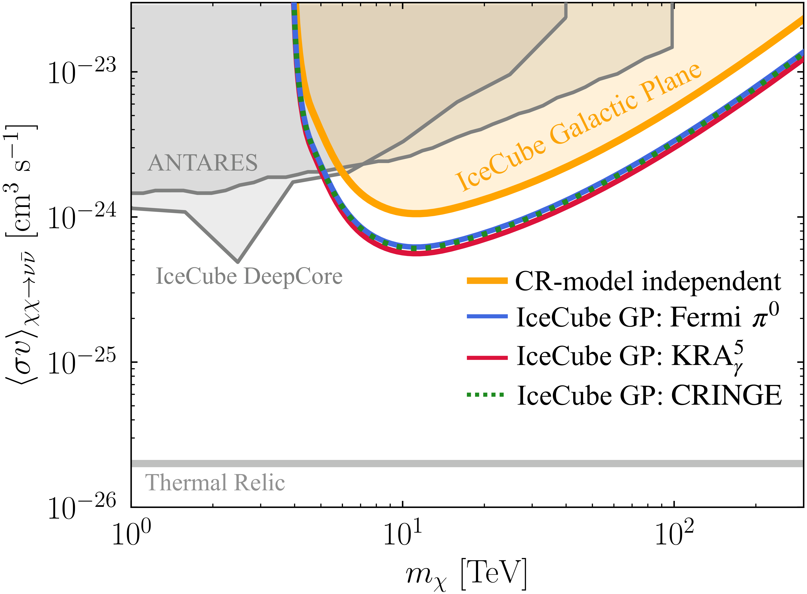
图注：Constraints on the $\chi \chi \rightarrow \nu \bar{\nu}$ annihilation cross section as a function of DM mass $m_\chi$, derived from the IceCube Galactic Plane (GP) observations and assuming a NFW Galactic DM density profile. The model-independent $90\%$ CL limit labeled IceCube GP is derived from the reconstructed Galactic longitude distribution of the background-subtracted shower events using Eqs.~\(\eqref{eq:N_i}\) - \(\eqref{eq:chi2-criterion}.\) The colored curves show the corresponding model-dependent limits after subtracting the different Galactic CR templates; note that the limits from subtracting the Fermi $\pi^0$ (blue) and CRINGE (green) templates are nearly indistinguishable on this plot. Existing $90\%$ CL limits from IceCube (DeepCore)~\(\cite{IceCube:2023ies},\) ANTARES~\(\cite{ANTARES:2015vis,Albert:2016emp},\) and the benchmark thermal relic annihilation cross section are also shown.
对应解读：对应“建议重点查看的图表”第1项和“关键图表逐图导读”图3：暗物质湮灭截面上限随质量变化的主限制图。
入选理由：这是全文核心结果图，直接给出\(m_\chi\)–\(\(\langle\sigma\) v\
angle)平面上的IceCube银河面限制、不同银河宇宙线模板扣除后的模型依赖限制、既有IceCube/ANTARES限制以及热遗迹基准线，最能支撑日报关于“接近热冻出截面”和“相对既有限制改善数倍”的解读。
来源与置信度：\(arxiv_source\)；high；\(arxiv_source\) / main.tex:figure[1]
Fig07
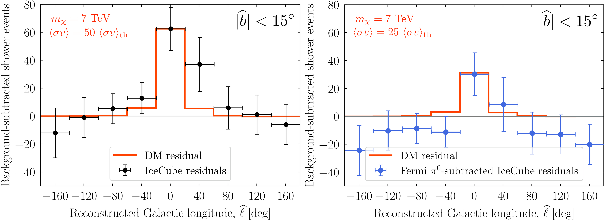
图注：Illustration of the spatial analyses used to derive the limits in Fig.~\(\ref{fig:ann_lim_chisq}.\) \(\emph{Left: }Model-independent\) analysis using the background-subtracted IceCube shower event residual. \(\emph{Right: }Corresponding\) analysis after subtraction of the IceCube best-fit Fermi $\pi^0$ Galactic CR template. In both panels, the orange histogram shows the predicted DM residuals after angular reconstruction and data-driven background subtraction (Eq.~\ref{eq:nchi_res}) for $m_\chi = 7\ \rm{TeV}$. The characteristic velocity-averaged annihilation cross section is given by $\langle \sigma v \rangle_{\rm th} \approx 2 \times 10^{-26}\ {\rm cm^3 s^{-1}}$.
对应解读：对应“建议重点查看的图表”第2项和模型拟合段落中的保守经度分布法、背景扣除残差、暗物质空间模板比较。
入选理由：该图展示用于推出Fig01空间限制的实际经度残差分析，包含背景扣除后的IceCube shower事件残差、扣除Fermi \(\pi^0\)银河宇宙线模板后的残差，以及\(m_\chi=7\\,\mathrm{TeV}\)暗物质预测残差，能直观看出哪些经度箱驱动上限。
来源与置信度：\(arxiv_source\)；high；\(arxiv_source\) / main.tex:figure[7]
Fig08
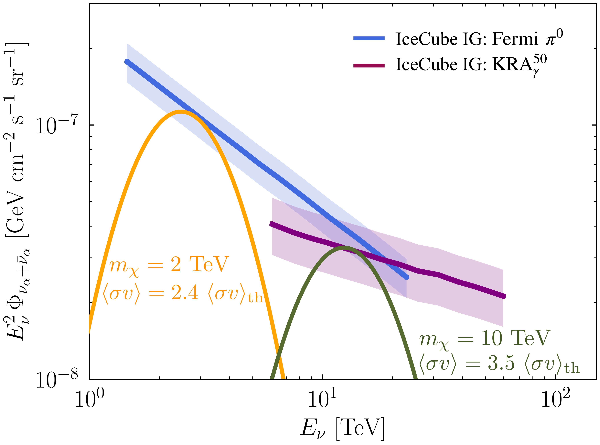
图注：Illustration of the spectral-envelope method used for the comparison shown in Fig.~\(\ref{fig:ann_lim_envelope}.\) We show a conservative prescription, where the predicted DM spectrum is compared directly with the IceCube best-fit Inner Galaxy neutrino intensity. The neutrino spectra are shown for representative DM masses and $\langle \sigma v \rangle$. The characteristic velocity-averaged annihilation cross section is given by $\langle \sigma v \rangle_{\rm th} \approx 2 \times 10^{-26}\ {\rm cm^3 s^{-1}}$.
对应解读：对应“建议重点查看的图表”第3项和模型拟合段落中的内银河能谱模板法、暗物质谱形与IceCube最佳拟合强度比较。
入选理由：该图直接说明谱包络方法如何把代表性暗物质质量和\(\(\langle\sigma\) v\
angle)对应的中微子谱与IceCube内银河最佳拟合中微子强度比较，是理解能谱法为何能接近热截面的关键诊断图。
来源与置信度：\(arxiv_source\)；high；\(arxiv_source\) / main.tex:figure[8]
Fig02
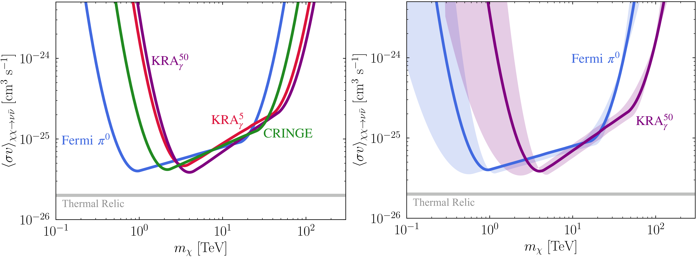
图注：Spectral-envelope comparison of the neutrino intensity from $\chi\chi\to\bar\nu\nu$ annihilation with the IceCube best-fit Inner Galaxy (IG) neutrino intensity using Eq.~\(\eqref{eq:flux-comparison}\) with the neutrino line-smearing prescription from Eq.~\(\eqref{eq:dNdE_log}.\) \(\emph{Left:}\) Curves for the four Galactic CR templates considered by IceCube. For each DM mass, the cross section is chosen such that the DM-induced intensity reaches the corresponding best-fit template intensity, $\Phi_\nu^\chi=\Phi_{\nu}^{T}$, at one energy within the support of the template. All curves shown here adopt the fiducial value $\sigma_{\log_{10} E} = 0.20$ for the energy spectrum in Eq.~\(\eqref{eq:dNdE_log}.\) \(\emph{Right:}\) Dependence of the comparison on the width $\sigma_{\log_{10}\!E}$ of the log-normal DM neutrino spectrum, shown for the Fermi $\pi^0$ and KRA$_\gamma^{50}$ templates. Solid curves denote the fiducial choice $\sigma_{\log_{10}\! E}=0.20$, while the shaded bands span $\sigma_{\log_{10}\!E}=0.15$ - $0.30$. The modest variation illustrates that the spectral-envelope comparison is only weakly dependent on the assumed line width. Note that these curves are not statistical limits, but illustrate the level of DM annihilation intensity that is comparable to the Galactic neutrino emission measured by IceCube.
对应解读：对应“建议重点查看的图表”第4项和“关键图表逐图导读”图4：不同银河宇宙线模板、能量线宽假设下的模型依赖比较。
入选理由：该图展示四种IceCube银河宇宙线模板下暗物质强度达到内银河中微子强度所需的截面，并给出\(\sigma_{\log_{10}E}\)变化形成的带宽；虽然不是统计上限，但最能体现模板系统误差和线宽假设对“接近热截面”判断的影响。
来源与置信度：\(arxiv_source\)；high；\(arxiv_source\) / main.tex:figure[2]
Fig06
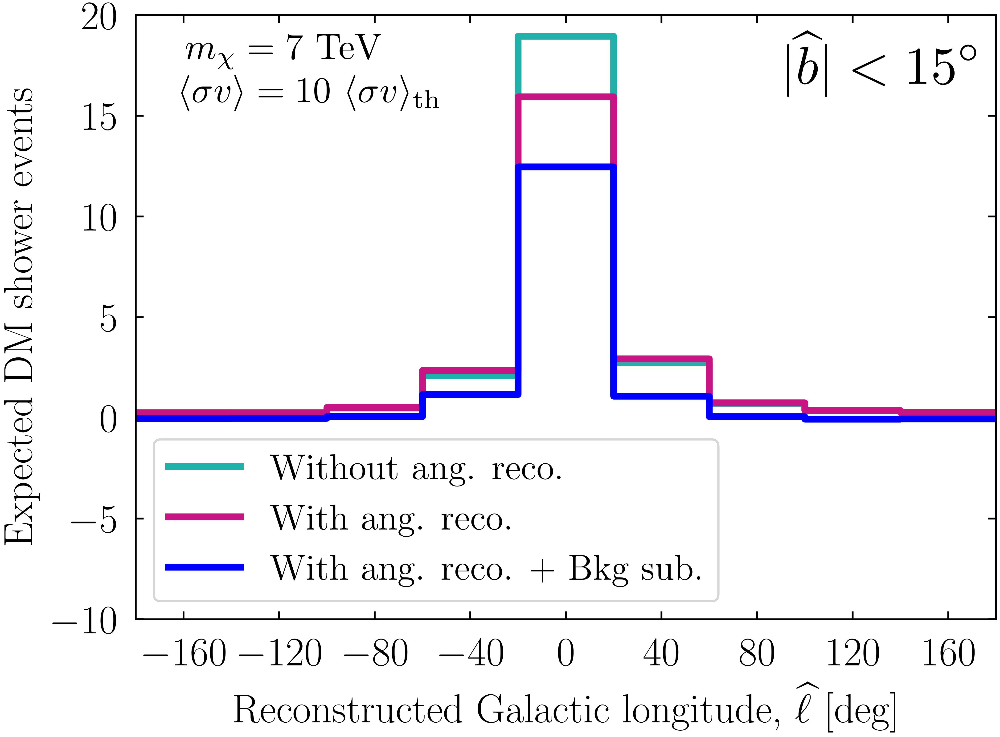
图注：Effect of angular reconstruction and data-driven background subtraction on the predicted DM shower-event distribution in reconstructed Galactic longitude. Angular reconstruction smooths the centrally peaked DM distribution, while the IceCube on–off subtraction further reduces the signal by subtracting the DM contribution present in the off-plane control region.
对应解读：对应“建议重点查看的图表”第8项和模型拟合段落中的稳健性诊断：角重建和on–off背景扣除如何改变暗物质经度分布。
入选理由：该图解释了暗物质空间模板在真实IceCube shower角分辨率和数据驱动背景扣除后如何被平滑和削弱，是理解Fig07残差模板以及Fig01保守经度限制系统效应的重要辅助图。
来源与置信度：\(arxiv_source\)；high；\(arxiv_source\) / main.tex:figure[6]
Fig03
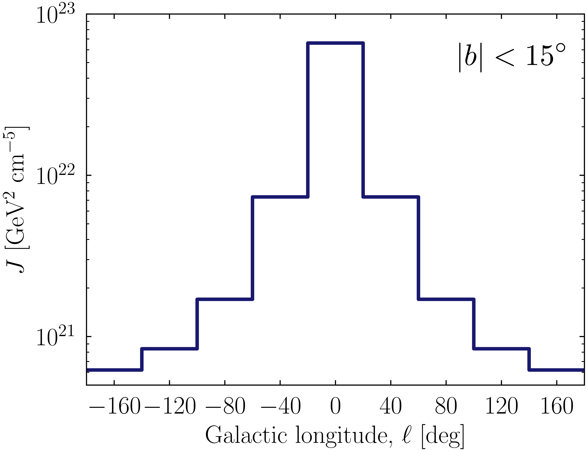
图注：Galactic longitude dependence of the annihilation $J$-factor defined in Eq.~\(\eqref{eq:j_int_roi}\) for the NFW halo profile. The integration is performed over $40^\circ$ longitude bins with $|b| < 15^\circ$, illustrating the intrinsic Galactic-longitude dependence of the DM annihilation signal.
对应解读：对应“建议重点查看的图表”第5项：暗物质晕剖面或\(J\)因子假设。
入选理由：该图给出NFW晕剖面下按\(40^\circ\)经度箱、\(|b|<15^\circ\)积分的湮灭\(J\)因子经度依赖，说明暗物质信号为何在内银河方向增强，并为日报中\(\(\langle\sigma\) v\
angle)与\(J\)因子归一化退化的讨论提供依据。
来源与置信度：\(arxiv_source\)；high；\(arxiv_source\) / main.tex:figure[3]
强相关工作
同一类观测背景首先是 IceCube 对银河弥散中微子的探测论文，以及 IceCube 对天体中微子弥散背景的系列结果。应检索关键词包括 “IceCube diffuse Galactic neutrino emission”、 “Milky Way neutrino emission IceCube”、 “Galactic plane neutrinos IceCube Science 2023”。这些工作提供了本文使用的经度分布、模板拟合和内银河强度的观测基础。
相似暗物质工作包括 IceCube、ANTARES 和 KM3NeT 对银河中心暗物质湮灭中微子的搜索，以及用矮星系、银河晕或太阳俘获暗物质做的中微子限制。应检索关键词包括 “dark matter annihilation neutrinos Galactic center IceCube”、 “ANTARES dark matter Galactic Centre neutrinos”、 “KM3NeT dark matter neutrino Galactic Centre”。本文的区别在于它利用已经显著探测到的银河弥散中微子，而不是只在无信号样本中寻找额外源。
基础理论关系包括热遗迹冻出截面、间接探测通量公式和暗物质晕 \(J\) 因子。也有潜在张力：若 \(\gamma\) 射线观测已经强烈限制某些带电或强子伴随末态，那么纯中微子解释需要模型保证可见电磁副产物足够小；另一方面，若电弱辐射不可忽略，高能中微子末态也会伴随 \(\gamma\) 射线和带电粒子约束。检索关键词可用 “neutrino portal dark matter indirect detection”、 “electroweak corrections dark matter annihilation neutrinos”、 “thermal relic cross section indirect detection”。
同一事件 / 同类源线索：
- https://arxiv.org/abs/2608.26258
- https://arxiv.org/pdf/2608.26258
- https://icecube.wisc.edu/
- https://www.km3net.org/
相似工作：
基础理论 / 方法工作：
相反观点 / 张力线索：
4. Synchrotron self-Compton Reverse Shock in Energy-Injection and Radiative Scenarios
- 来源：arXiv / astro-ph.HE
- 链接：https://arxiv.org/abs/2608.26290v1
- 作者：Fraija Nissim, Betancourt-Kamenetskaia Boris, Galván Antonio, Dainotti Maria Giovanna
- 评分：novelty 7/10，importance 7/10，relevance 10/10，final 9.05/10
- 推荐理由：Develops SSC reverse-shock closure relations for GRB afterglows and compares to Fermi-LAT GRB catalog behavior; directly relevant to high-energy gamma-ray transient interpretation.
中文题目：能量注入与辐射情形下反向激波的同步自康普顿辐射
做了什么：这篇论文系统推导了伽马暴余辉中反向激波区域的同步自康普顿辐射闭合关系，覆盖厚壳和薄壳、均匀星际介质和恒星风介质、绝热和辐射动力学，以及有无中心引擎能量注入等多种情形。作者把这些理论预言的时间衰减指数和谱指数同第二版 Fermi-LAT 伽马暴目录中幂律与断裂幂律光变拟合结果比较，发现反向激波的 SSC 分量可以解释部分 LAT 高能余辉中的早期陡衰减和平台段；幂律光变更偏向有能量注入的情形，断裂幂律光变更偏向无能量注入，而有能量注入时数据更支持均匀介质而非风介质。
为什么重要：GRB 高能余辉的早期陡衰减、平台和 GeV 延迟发射长期存在多种解释：外激波正向激波、反向激波、中心引擎持续活动、磁化喷流或辐射冷却都可能参与。本文重要之处在于它不是只拟合单个暴，而是把反向激波 SSC 的可检验闭合关系列成一套可与 LAT 目录批量比较的诊断工具，使高能光变形态与喷流动力学、外部介质和能量注入之间有了更明确的判据。
理论 / 观测 / 仪器方法价值：对理论而言，本文扩展了反向激波 SSC 闭合关系库，把厚壳/薄壳、均匀/风介质、绝热/辐射、有无能量注入放入同一框架。对观测而言，它给 LAT 目录中高能光变的幂律或断裂幂律指数提供物理解释路径，而不只是经验分类。对方法而言，它强调用时间指数 \(\alpha\) 与谱指数 \(\beta\) 的联合约束，而不是仅凭光变形状判断能量注入或介质类型。
为什么应该关注：如果你关心 GRB 高能辐射到底来自正向激波、反向激波还是中心引擎残余活动，这篇文章值得看，因为它直接告诉你哪些 \((\alpha,\beta)\) 组合可由反向激波 SSC 自洽产生。它也提醒读者：LAT 高能余辉中的平台不一定等同于 X 射线平台的同一机制，断裂光变也不必然意味着喷流 break；这些形态可能是反向激波动力学、冷却和能量注入共同作用的结果。
展开详细解读：文章讲解、背景、理论、重点章节、图表与相关工作
文章详细讲解
科学问题：GRB 余辉的标准外激波图像中，正向激波扫过外部介质并产生长时标余辉，反向激波则向喷流抛射物内部传播，通常负责早期光学闪光或早期高能分量。Fermi-LAT 发现许多 GRB 在 \(\gtrsim 100\,\mathrm{MeV}\) 仍有持续发射，光变可表现为早期陡衰减、单幂律衰减、断裂幂律或平台。核心问题是：这些高能形态中有多少可以由反向激波的同步自康普顿，即 SSC，解释？如果可以，时间衰减指数 \(\alpha\) 和谱指数 \(\beta\) 应该满足什么闭合关系？这些关系又如何依赖外部介质、壳层厚薄、能量注入和辐射效率？
作者怎么做：论文从反向激波动力学出发，分别处理厚壳和薄壳两类壳层穿越情形，并考虑外部密度 \(n(r)\propto r^{-k}\) 的两种常用极限：\(k=0\) 的均匀介质和 \(k=2\) 的恒星风介质。电子能谱采用幂律分布，并区分快冷却、慢冷却以及不同 SSC 频段相对于 \(\nu_m^{\rm IC}\) 和 \(\nu_c^{\rm IC}\) 的位置。能量注入通过中心引擎或抛射物能量随时间增加的参数化进入动力学标度；辐射情形则允许爆轰波能量不再近似守恒。作者推导每一类情况下 SSC 通量 \(F_\nu^{\rm IC}\) 的时间标度和频谱标度，从而得到闭合关系 \(\alpha(\beta)\)。
关键结果：理论部分显示，反向激波 SSC 在合理参数范围内可以产生 LAT 高能余辉常见的两个形态：初始陡衰减和平台。陡衰减一般与壳层穿越后反向激波电子冷却、可见发射面积和特征频率快速演化有关；平台则可由能量注入减缓 blast wave 衰减、提高电子和磁场能量密度，或改变 SSC 峰频穿越观测频段的时序而产生。与 2FLGC 的经验拟合结果比较后，作者发现单幂律光变更常落在有能量注入模型允许区域内，而断裂幂律光变更常与无能量注入的反向激波 SSC 闭合关系相符。在有能量注入模型中，均匀介质的闭合关系对 LAT 数据的覆盖优于风介质。
局限和下一步：这项工作主要是闭合关系层面的判别，而不是对每个 GRB 进行完整多波段、时变光谱和响应矩阵层面的前向拟合。闭合关系的强项是透明、可批量使用，但代价是会压缩许多源内差异，例如红移、喷流开角、磁化程度、微物理参数演化、Klein-Nishina 抑制、\(\gamma\gamma\) 吸收以及正向激波/反向激波混合。下一步自然是对代表性 LAT GRB 做联合光学、X 射线、MeV 和 GeV 的贝叶斯拟合，比较正向激波 SSC、反向激波 SSC 和中心引擎模型的证据，并把微物理参数演化和仪器选择效应显式纳入。
关键结果是怎么做出来的
本文的证据链从理论闭合关系开始，而不是从单个事件拟合开始。作者先把反向激波 SSC 的观测量写成 \(F_\nu^{\rm IC}\propto t^{-\alpha}\nu^{-\beta}\)，然后在不同动力学分支中推导 \(\alpha\) 与电子谱指数 \(p\)、介质指数 \(k\)、能量注入参数和冷却状态的关系。这样做的优势是可以直接同目录论文给出的光变时间指数和谱指数比较，而不必为每个暴重新拟合完整物理模型。
样本层面，比较对象来自第二版 Fermi-LAT 伽马暴目录，即 2FLGC 中已报告的高能光变幂律和断裂幂律拟合结果。该目录是 LAT GRB 研究中常用的统计样本，给出了 \(>100\,\mathrm{MeV}\) 能段的光变、谱指数和经验模型参数。本文关注的是那些能够用单幂律或断裂幂律描述的 LAT 光变形态，并把它们映射到理论 \((\alpha,\beta)\) 平面。需要注意，这不是逐光子重新似然分析，而是使用目录拟合量作为观测输入。
显著性与置信度的核心不是发现新源的 \(\mathrm{TS}\) 检验，而是模型区域与观测置信区间的相容性判断。读者应关注作者如何处理观测的 \(\alpha\) 和 \(\beta\) 误差、断裂前后时间指数、以及不同电子谱指数分布。若图中给出理论线或带状区域，真正有判别力的是数据点误差椭圆是否同时落在某一动力学分支的允许范围内，而不是单独看 \(\alpha\) 是否接近某个典型值。
最重要的比较结果是：单幂律拟合的 LAT 光变倾向于有能量注入的反向激波 SSC 模型；断裂幂律拟合的 LAT 光变则更偏向无能量注入模型。这个结论依赖于不同模型在 \((\alpha,\beta)\) 平面上的分布差异：能量注入会使时间衰减变浅，因而更容易覆盖平台或缓衰减单幂律；无能量注入在壳层穿越或冷却频率通过观测频段后更容易给出断裂形态。
系统误差方面，最大的不确定性来自目录级光变拟合的经验性、样本选择和多成分混合。LAT 高能发射可能包含 prompt 尾部、正向激波同步辐射、正向激波 SSC、反向激波 SSC，甚至内部耗散成分。若观测频段处于 Klein-Nishina 区域，简单 Thomson SSC 标度会失效；若微物理参数 \(\epsilon_e\)、\(\epsilon_B\) 或电子谱指数 \(p\) 随时间演化，闭合关系也会被系统性偏移。本文的稳健性主要来自多种壳层、介质和能量注入分支的横向比较，而不是对单一模型进行过度拟合。
展开背景、理论、公式、模型、章节和图表导读
背景知识
研究对象是 GRB 余辉的高能辐射。GRB prompt 阶段之后，喷流与周围介质相互作用产生外激波。向外传播的是正向激波，向内穿过喷流壳层的是反向激波。正向激波通常解释从 X 射线到射电的长时标余辉；反向激波则在早期更突出，经典例子是光学闪光，但在足够高的电子洛伦兹因子和合适的磁场条件下，反向激波同步光子可被同一电子群逆康普顿散射到 GeV 能段。
历史上，反向激波模型最常用于解释早期光学峰和射电余辉，而 Fermi-LAT 之后，高能余辉的持续时间、谱形和时间衰减对模型提出了新要求。LAT 看到的 \(\gtrsim 100\,\mathrm{MeV}\) 发射常比 MeV prompt 晚出现、持续更久，并常呈现近似幂律衰减。这一事实支持外激波解释，但究竟是正向激波同步、正向激波 SSC 还是反向激波 SSC，并不总是容易区分。
现在值得重新看这个问题，是因为 LAT 目录已经积累了足够多的 GRB，使得比较不必停留在少数名暴的个案拟合。2FLGC 给出统一分析下的光变和光谱经验参数，为闭合关系检验提供了样本基础。同时，Swift 时代以来 X 射线平台和陡衰减的物理解释仍有争议，高能平台是否对应同一种能量注入过程，是一个可以用 GeV 数据额外约束的问题。
该领域常见误区之一是把所有 LAT 长时标高能发射都默认归为正向激波同步辐射。实际上，若最高光子能量、谱指数和时间衰减要求的最大同步光子能量过高，SSC 成分可能更自然。另一个误区是看到平台就直接归因于中心引擎持续注入；平台也可能来自特征频率穿越、反向激波区域的几何和冷却效应，或者多个辐射成分叠加。第三个误区是只用时间指数判别模型；高能谱指数 \(\beta\) 与时间指数 \(\alpha\) 的联合闭合关系才是更有物理约束力的诊断。
基础理论 / 方法脉络
基本物理图像是：相对论喷流携带能量 \(E\) 和初始洛伦兹因子 \(\Gamma_0\)，撞入外部介质后形成双激波结构。正向激波压缩外部介质，反向激波穿过喷流壳层。激波把一部分内能分配给电子和磁场，通常用 \(\epsilon_e\) 和 \(\epsilon_B\) 表示；电子被加速成 \(N(\gamma_e)\propto \gamma_e^{-p}\) 的非热分布，并产生同步辐射。
SSC 的关键是同一批电子不仅发射同步光子，还会把这些低能光子通过逆康普顿散射提升到高能。若散射发生在 Thomson 区域，典型频率近似满足 \(\nu^{\rm IC}\sim 2\gamma_e^2\nu^{\rm syn}\)。因此，反向激波的低能同步峰可以被推到 LAT 能段。不过当 \(4\gamma_e h\nu^{\rm syn}\gtrsim m_ec^2\) 时，Klein-Nishina 效应会降低散射截面并改变谱形，这是任何 SSC 闭合关系应用时都必须检查的条件。
本文所用闭合关系依赖若干动力学假设。厚壳和薄壳的区别在于反向激波穿越时间 \(t_\times\) 与减速时间 \(t_{\rm dec}\) 以及 prompt 持续时间的相对大小。厚壳常对应反向激波在相对论状态下穿越，薄壳则常对应牛顿型或弱相对论反向激波。外部介质用 \(n(r)\propto r^{-k}\) 概括，其中 \(k=0\) 代表均匀 ISM，\(k=2\) 代表大质量恒星风环境。
能量注入会改变 blast wave 的时间演化。若中心引擎或慢壳持续补充能量，使有效能量 \(E(t)\) 随时间增加，那么 \(\Gamma(t)\)、磁场 \(B'(t)\)、电子最小洛伦兹因子 \(\gamma_m(t)\)、冷却洛伦兹因子 \(\gamma_c(t)\) 和 SSC 特征频率都会获得不同的时间标度。观测上，这会把原本较陡的衰减拉平，形成平台或较浅的单幂律衰减。
主要退化关系来自 \(p\)、\(k\)、能量注入强度、辐射效率和微物理参数演化。不同组合可给出相近的 \(\alpha\)，所以仅靠光变斜率不够。谱指数 \(\beta\) 可约束电子谱指数和冷却段位置，但若观测能段跨越谱 break 或有多成分叠加，\(\beta\) 也会偏离简单闭合关系。因此，本文强调用目录中的时间和谱拟合结果在 \((\alpha,\beta)\) 平面中做联合判断。
公式与推导
第一步是外部介质和扫掠质量。把周围介质写成幂律密度：
其中 \(A\) 是密度归一化，\(k=0\) 对应均匀介质，\(k=2\) 对应恒星风介质。半径 \(r\) 内扫过的质量满足
这里 \(m_p\) 是质子质量。这个式子说明介质剖面直接决定减速半径和激波能量转换速率。
第二步是相对论能量标度。在绝热近似下，爆轰波能量可写成
其中 \(\Gamma\) 是 bulk 洛伦兹因子。观测时间与半径近似满足
其中 \(z\) 是红移。联立可得在无能量注入时的基本标度
这就是所有闭合关系的动力学骨架；若 \(k=0\)，有 \(\Gamma\propto t^{-3/8}\)，若 \(k=2\)，有 \(\Gamma\propto t^{-1/4}\)。
第三步加入能量注入。若有效能量随观测时间增长为
其中 \(q\) 描述注入强度，则动力学标度变为
当 \(q>0\) 时，\(\Gamma\) 衰减变慢，磁场和电子能量演化也随之变慢，因此光变可从陡衰减变为浅衰减或平台。
第四步是微物理量。激波后共动磁场近似为
最小电子洛伦兹因子可写成
其中 \(m_e\) 是电子质量，\(p>2\) 时 \(g(p)\) 适用。冷却洛伦兹因子在含 IC 冷却时为
其中 \(\sigma_T\) 是 Thomson 截面，\(Y\) 是 Compton 参数。
第五步从同步频率到 SSC 频率。同步特征频率为
其中 \(q_e\) 是电子电荷。Thomson 区域的 SSC break 频率近似满足
这些量随时间的幂律指数决定 LAT 能段处在 SSC 谱的哪一段。
第六步是闭合关系本身。若某一频段可写成
则电子谱给出典型谱指数，例如慢冷却高频段常有
而中间频段常有 \(\beta=(p-1)/2\)。时间指数 \(\alpha\) 由 \(F_{\nu,\max}^{\rm IC}\)、\(\nu_m^{\rm IC}\) 和 \(\nu_c^{\rm IC}\) 的时间标度组合得到。例如若
则
本文的大量结果本质上就是在不同 \(k\)、\(q\)、厚壳/薄壳和辐射条件下计算这些导数，并把 \(p\) 消去为 \(\beta\)。
第七步是与目录数据比较的统计诊断。若目录给出 \(\alpha_i\)、\(\beta_i\) 及协方差矩阵 \(C_i\)，可用距离量
或等价地计算点到理论带的误差归一化距离。若只把 \(\beta_i\) 作为横坐标，则关键检验是 \(\alpha_i\) 是否与 \(\alpha_{\rm model}(\beta_i)\) 在误差内相容。这个统计框架解释了为什么同一光变斜率在不同谱指数下可能支持不同动力学分支。
模型拟合 / 应用方法
本文本身更接近解析闭合关系与目录参数比较，而不是对每个 GRB 做全数据前向拟合。拟合量主要来自 2FLGC：高能光变的幂律或断裂幂律时间指数、谱指数以及相应误差。理论模型给出不同分支的 \(\alpha(\beta)\) 或允许区域，比较时看观测点是否落在这些区域内，或哪类模型覆盖更多观测结果。
若把这类工作扩展成严格模型拟合，似然可以建立在 LAT 光子事件上，包括源模型、背景模型、曝光、点扩散函数和能量响应；也可以在目录级参数空间中，用 \((\alpha,\beta)\) 的高斯近似似然。前者信息更完整，可处理低计数泊松统计和时间依赖响应；后者更透明，适合快速检验闭合关系，但会继承目录经验拟合的系统误差。
关键退化包括 \(p\) 与冷却段位置的退化、外部介质 \(k\) 与能量注入 \(q\) 的退化、以及微物理参数 \(\epsilon_e\)、\(\epsilon_B\) 与 Compton 参数 \(Y\) 的退化。例如浅衰减既可能来自较强能量注入，也可能来自观测频段处在某个缓慢演化的 SSC 谱段；较硬谱既可能意味着较小 \(p\)，也可能反映 prompt 尾部或正向激波同步成分污染。
残差诊断应重点看断裂时间附近和最高能光子到达时间。若模型要求单一反向激波 SSC 成分，光变残差不应在断裂前后显示系统性弯曲；谱指数也不应随时间出现与模型不符的强演化。若观测到明显的多峰结构、快速变率或与外激波时间尺度不相容的短时标波动，反向激波 SSC 的单区近似就可能失败。
系统误差还包括 LAT 阈值选择、红移未知、能量带不同、背景建模和样本截断。亮暴更容易进入目录并获得可靠断裂幂律拟合，弱暴则可能只被单幂律近似描述。把单幂律样本解释为能量注入偏好时，需要警惕这种观测选择效应：有些断裂可能只是因信噪比不足而未被识别。
实际应用上，这套闭合关系可作为 GRB 个案建模前的筛选器。若某个 LAT 暴的 \((\alpha,\beta)\) 明显落在反向激波 SSC 加能量注入的区域，就值得进一步做多波段联合拟合；若明显偏离所有反向激波分支，则应优先考虑正向激波同步、内部耗散或多成分叠加。
重点章节 / 结果段落怎么读
-
引言和物理动机：应重点看作者如何界定 LAT 高能余辉中的陡衰减、平台和断裂光变问题，以及为什么反向激波 SSC 是一个需要系统检验的候选机制。这里也会交代与正向激波模型和能量注入解释的关系。
-
动力学设定：这一部分通常包含厚壳/薄壳、均匀介质/风介质、绝热/辐射、有无能量注入的分类。读者应把每个分支对应的假设列成表，尤其注意 \(t_\times\)、\(t_{\rm dec}\)、\(k\) 和能量注入参数的定义。
-
SSC 闭合关系推导：这是论文核心。建议逐行检查 \(\nu_m^{\rm IC}\)、\(\nu_c^{\rm IC}\)、\(F_{\nu,\max}^{\rm IC}\) 的时间标度如何组合成 \(\alpha(\beta)\)。不要只看最终表格，要确认每个谱段对应的冷却条件和频率排序。
-
与 2FLGC 的比较：这是观测解释的关键部分。应看作者如何使用目录中的幂律和断裂幂律拟合参数，数据点在 \((\alpha,\beta)\) 平面如何分布，以及哪些模型分支覆盖最多数据。特别关注单幂律与断裂幂律样本为何给出不同偏好。
-
讨论和局限：这一部分应寻找作者对 Klein-Nishina 效应、多成分混合、微物理参数演化、外部介质不确定性和样本选择的说明。若论文附录列出完整闭合关系表，附录实际上是最有长期使用价值的部分。
建议重点查看的图表
-
反向激波 SSC 闭合关系表或图：检查不同模型分支在 \((\alpha,\beta)\) 平面的位置，尤其有无能量注入、\(k=0\) 与 \(k=2\) 的分离程度。
-
厚壳与薄壳比较图：看同一谱段下壳层厚薄是否显著改变时间指数；若差异小，则观测上难以用 LAT 光变单独区分。
-
PL 样本与理论线比较图：重点看单幂律光变点是否集中落在能量注入模型区域，误差条是否足够小到支持这种偏好。
-
BPL 样本与理论线比较图：分别看断裂前后斜率是否对应同一物理分支，还是只是在某一段与模型相容。
-
均匀介质与风介质对比诊断：看 \(k=0\) 和 \(k=2\) 模型线在观测点附近是否真正可分；若两者重叠，所谓介质偏好就较弱。
-
电子谱指数 \(p\) 的分布或取值假设：检查作者采用的两类幂律分布如何影响理论区域宽度，避免把 \(p\) 的先验选择误读为数据偏好。
-
残差或相容性统计表：若有模型计数、成功匹配比例或 \(\chi^2\)-like 量，应看是否对误差、断裂分类和异常点做了稳健性检验。
关键图表逐图导读
图 1：若论文给出模型示意或参数空间总览，横轴通常可理解为谱指数 \(\beta\) 或电子谱指数 \(p\)，纵轴为时间衰减指数 \(\alpha\)。不同颜色或线型代表厚壳/薄壳、有无能量注入、均匀介质/风介质。读图时要注意 \(\alpha\) 的符号约定：有些文献写 \(F_\nu\propto t^{-\alpha}\)，有些直接画负斜率。不要把符号差异误认为物理差异。
图 2：如果展示厚壳与薄壳的 SSC 闭合关系，应看两类壳层在观测 \(\beta\) 范围内的 \(\alpha\) 差距。若线族几乎平行，说明仅凭 LAT 时间谱指数很难判别反向激波穿越状态；若某些谱段出现明显分叉，则这些谱段是未来个案拟合最有价值的目标。
图 3：PL 光变样本比较图应把 2FLGC 单幂律拟合得到的数据点叠加在理论线或带上。横轴看 \(β\)，纵轴看 \(\alpha\)，误差条代表目录拟合不确定性。主要结论是 PL 样本更容易被有能量注入模型覆盖。读图陷阱是：覆盖更多点不等于唯一解释，因为正向激波或 prompt 尾部也可能给出类似 \((\alpha,\beta)\)。
图 4：BPL 光变样本比较图应区分断裂前和断裂后的时间指数，可能用不同符号表示。关键是看断裂前后是否分别落在不同反向激波演化阶段，或是否整体更接近无能量注入分支。读者应检查断裂时间的不确定性是否传播到 \(\alpha\)，否则 BPL 偏好可能被低估或高估。
图 5：均匀介质与风介质对照图若存在，应重点看有能量注入情形下 \(k=0\) 模型为何优于 \(k=2\)。如果风介质线系统性给出过陡或过浅的 \(\alpha\)，说明 LAT 数据对外部密度剖面有诊断力；如果只是少数离群点驱动结论，则需要谨慎。
图 6：若有表格列出各模型分支的闭合关系，建议把它当作工具表阅读。列通常包括冷却状态、频率排序、介质类型、壳层类型、能量注入与否以及 \(\alpha(\beta)\)。读者应检查每行的适用条件，而不是把所有关系混用；尤其要确认观测 LAT 能段是否真的位于该行假设的 SSC 频段。
论文原图 / 可嵌入图片
Fig05
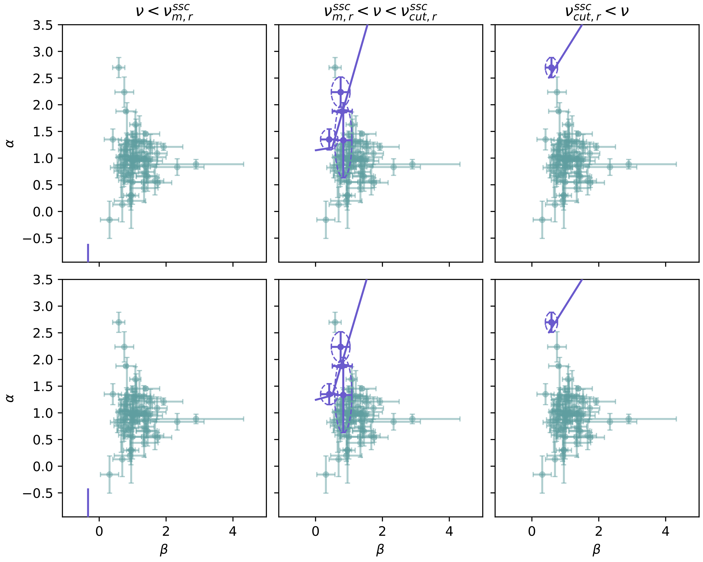
图注：The same as Figure \(\ref{fig1:CRs_eps_k0_PL},\) but the reverse shock lies in the adiabatic regime ($\epsilon=0$) with energy injection ($q=0.5$).
对应解读：“PL 样本与理论线比较图”以及“图 3：PL 光变样本比较图”；对应有能量注入、均匀介质、厚壳/薄壳的反向激波 SSC 闭合关系。
入选理由：这是最直接支撑论文核心结论的图：2FLGC 单幂律 PL 的观测点与有能量注入 q=0.5、k=0 情形下的 SSC 闭合关系同图比较，并包含 alpha-beta 误差条和联合置信椭圆，可检验 PL 样本是否集中落在能量注入模型允许区域内。
来源与置信度：\(arxiv_source\)；high；\(arxiv_source\) / sample701.tex:figure[5]
Fig02
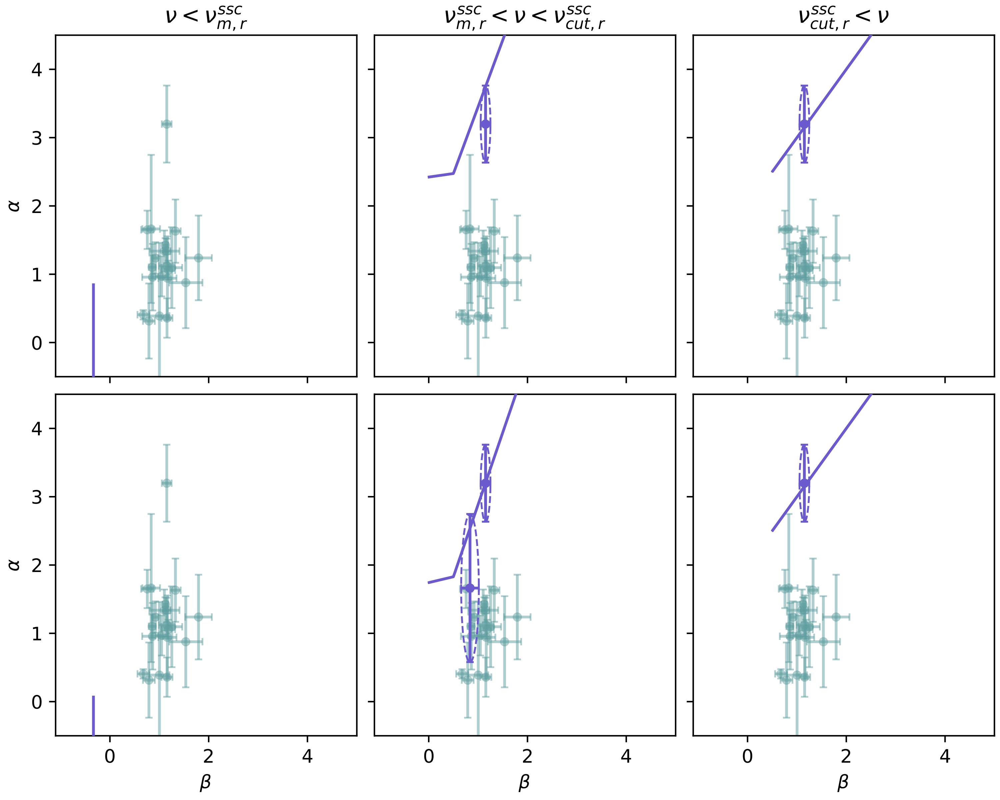
图注：The same as Figure \(\ref{fig1:CRs_eps_k0_PL},\) but considering the spectral and temporal indexes modeled with a BPL function from 2FLGC.
对应解读：“BPL 样本与理论线比较图”以及“图 4：BPL 光变样本比较图”；对应无能量注入、均匀介质、辐射情形下的 BPL 目录参数比较。
入选理由：日报强调 BPL 光变是否更接近无能量注入分支，此图正是 BPL 样本与反向激波 SSC 闭合关系的 alpha-beta 平面比较，并展示厚壳和薄壳两行、不同冷却条件列，是检验断裂幂律样本物理归属的关键图。
来源与置信度：\(arxiv_source\)；high；\(arxiv_source\) / sample701.tex:figure[2]
Fig07
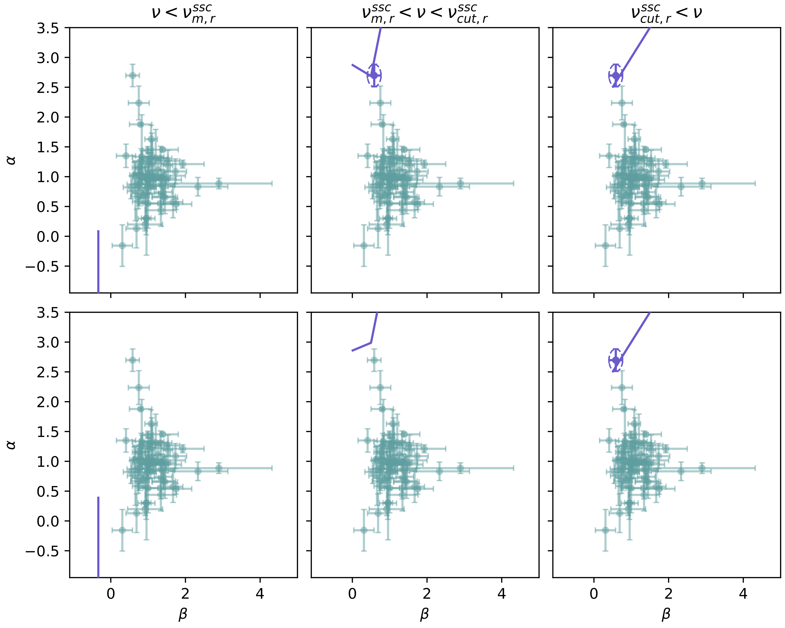
图注：The same as Figure \(\ref{fig3:CRs_eps_k2_PL},\) but the reverse shock lies in the adiabatic regime ($\epsilon=0$) with energy injection ($q=0.5$).
对应解读：“均匀介质与风介质对比诊断”以及“图 5：均匀介质与风介质对照图”；对应 PL、有能量注入、风介质 k=2。
入选理由：与 Fig05 构成最重要的 k=0 与 k=2 对照，可直接检查论文声称的“有能量注入情形下均匀介质优于风介质”是否来自理论线在观测点附近的真实分离，而不是视觉或样本选择效应。
来源与置信度：\(arxiv_source\)；high；\(arxiv_source\) / sample701.tex:figure[7]
Fig04
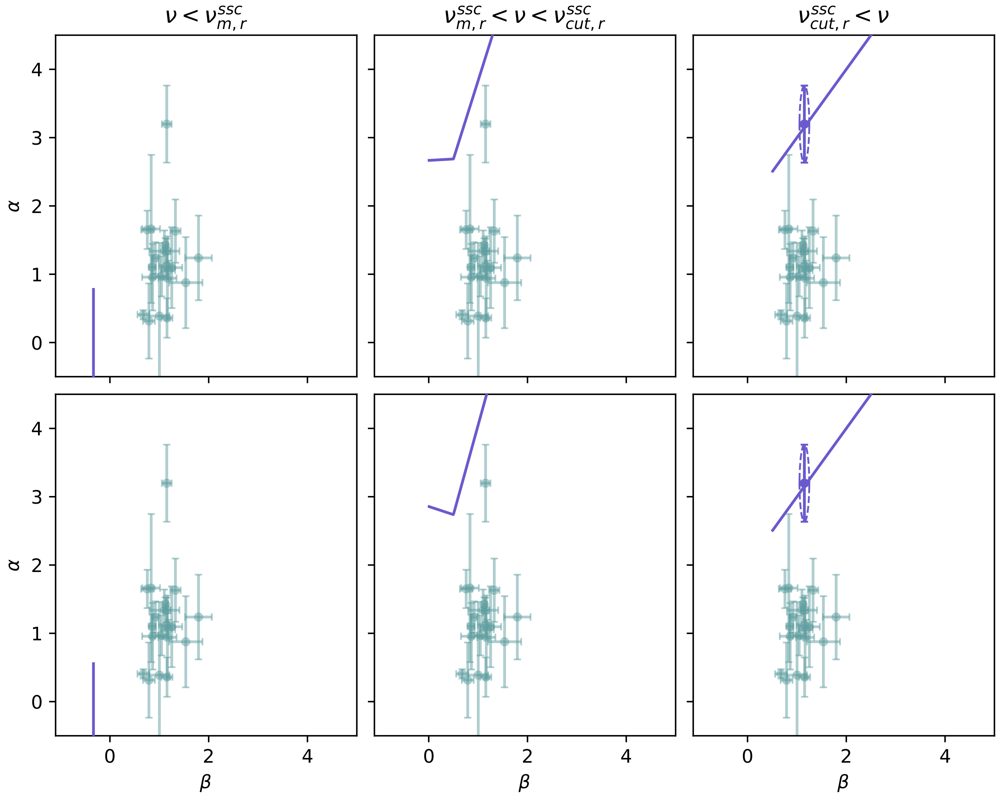
图注：The same as Figure \(\ref{fig2:CRs_eps_k_0_BPL},\) but considering a stellar-wind environment ($k=2$).
对应解读：“BPL 样本与理论线比较图”和“均匀介质与风介质对比诊断”；对应 BPL、无能量注入、风介质 k=2。
入选理由：它是 Fig02 的风介质版本，可用于判断 BPL 样本在无能量注入情形下是否同样区分 k=0 和 k=2。对于日报中关于断裂前后斜率和介质偏好的讨论，这张图提供必要的对照。
来源与置信度：\(arxiv_source\)；high；\(arxiv_source\) / sample701.tex:figure[4]
Fig09
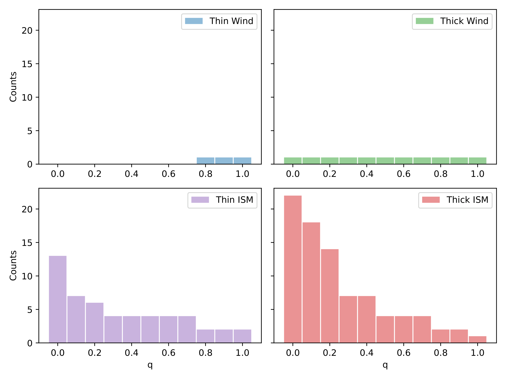
图注：Histogram of events as a function of energy injection parameter ($q$). We consider the spectral and temporal indexes modeled with a PL function from 2FLGC, the SSC CRs from the reverse shock evolving in the thick- and thin-shell case during the adiabatic scenario ($\epsilon=0$) and the deceleration of the outflow in a stellar wind and constant density medium.
对应解读：“电子谱指数/能量注入参数取值假设”和“残差或相容性统计表”；对应 PL 样本的能量注入参数 q 事件数直方图。
入选理由：日报特别要求关注模型计数、成功匹配比例或统计相容性。此图不是单个 alpha-beta 闭合关系图，而是把 PL 样本按能量注入参数 q 的相容事件数汇总，能更直接支撑“PL 样本偏好能量注入”的统计层面判断。
来源与置信度：\(arxiv_source\)；high；\(arxiv_source\) / sample701.tex:figure[9]
Fig10
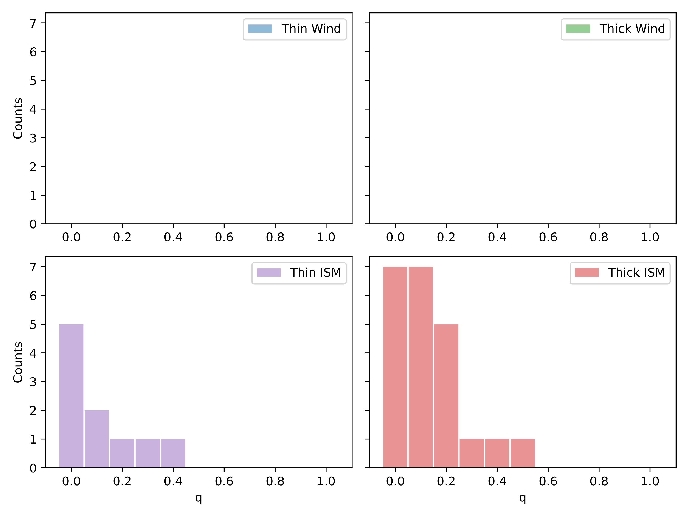
图注：The same as Figure \(\ref{fig9:Counts_PL},\) but considering the spectral and temporal indexes modeled with a BPL function from 2FLGC.
对应解读：“残差或相容性统计表”以及 BPL 样本模型偏好讨论；对应 BPL 样本的 q 分布统计。
入选理由：与 Fig09 配套，用 BPL 样本检验能量注入参数 q 的事件数分布。它有助于判断 BPL 与 PL 样本在能量注入偏好上的差异是否系统存在，而不仅是某几张 alpha-beta 散点图中的局部覆盖效果。
来源与置信度：\(arxiv_source\)；high；\(arxiv_source\) / sample701.tex:figure[10]
强相关工作
这篇论文属于 GRB 外激波和高能余辉闭合关系研究的延伸。相近工作包括 Fermi-LAT GRB 目录论文、LAT 高能余辉统计、GRB 090510、GRB 080916C、GRB 090902B、GRB 130427A 等 LAT 亮暴个案建模，以及反向激波解释早期光学闪光和高能 SSC 的理论论文。检索关键词可用“Fermi LAT second GRB catalog high-energy afterglow”、“reverse shock SSC gamma-ray bursts”、“GRB closure relations energy injection”、“radiative blast wave reverse shock”。
基础理论应追溯到 Blandford-McKee 相对论自相似解、Sari-Piran-Narayan 余辉同步谱、Sari-Piran 反向激波光学闪光、Kobayashi 反向激波模型，以及 Zhang、Mészáros 等关于能量注入和余辉平台的工作。与本文可能存在张力的方向包括：LAT GeV 发射由正向激波同步辐射主导的解释、最高能光子对最大同步能量的挑战、Klein-Nishina 抑制导致 SSC 不足的观点、以及 X 射线平台来自磁星中心引擎而非外激波能量注入的模型。若要系统比较，可检索“maximum synchrotron photon energy GRB LAT”、“Klein Nishina SSC GRB afterglow”、“magnetar plateau GRB afterglow”、“forward shock synchrotron Fermi LAT GRBs”。
同一事件 / 同类源线索：
相似工作：
基础理论 / 方法工作：
- https://arxiv.org/abs/astro-ph/9712005
- https://arxiv.org/abs/astro-ph/9901338
- https://arxiv.org/abs/astro-ph/9901236
- https://arxiv.org/abs/astro-ph/0104343
相反观点 / 张力线索：
5. ANRe-M1: a GPU-accelerated numerical relativity code with multi-energy M1 neutrino transport
- 来源：arXiv / astro-ph.HE
- 链接：https://arxiv.org/abs/2608.26681v1
- 作者：Takami Kuroda, Masaru Shibata
- 评分：novelty 8/10，importance 8/10，relevance 7/10，final 8.65/10
- 推荐理由：GPU-accelerated full-GR core-collapse supernova code with multi-energy M1 neutrino transport and substantial performance gains; reusable computational-method advance for HE transient simulations.
中文题目：ANRe-M1：带多能群 M1 中微子输运的 GPU 加速数值相对论代码
做了什么：这篇论文发布并验证了 “ANRe-M1”，一个用于三维核心坍缩超新星模拟的全广义相对论、中微子辐射流体力学代码。它把作者原有的 CPU/Fortran 框架重写为基于 C++ 和 Kokkos 的性能可移植实现，核心物理仍包括 \(BSSN\)--\(Z4c\) 动态时空、相对论流体力学，以及多能群 \(M1\) 中微子输运。作者用流体、辐射输运、动态时空测试和既有代码比较结果验证正确性，并展示了一个带多能群中微子输运的三维恒星坍缩计算。性能上，在文中基准系统上，AMD \(MI300A\) APU 集群相对旧 Fortran/CPU 版本约快一个数量级；从 \(2\) 个扩展到 \(128\) 个 \(MI300A\) APU 时，总吞吐量增加 \(39.7\) 倍，相对 \(2\) APU 基准的弱扩展效率为 \(62\\% \)。
为什么重要：核心坍缩超新星和双中子星并合后的中微子辐射流体问题已经越来越受计算资源限制，而不是单纯受方程组认识限制。真正可信的三维长期演化需要同时处理强引力、湍流、多能群中微子输运和核物质状态方程，这对传统 CPU 代码非常昂贵。ANRe-M1 的重要性在于：它不是只做一个简化 GPU kernel，而是把可用于生产级天体物理问题的全相对论多物理代码迁移到加速器架构，并给出物理验证和扩展性数据。
理论 / 观测 / 仪器方法价值：对理论和数值方法的价值在于，它提供了一个面向未来异构超算的核心坍缩超新星模拟框架，可用于更系统地扫描前身星、核物质状态方程、旋转、磁场和中微子物理参数。对观测解释的价值在于，更长时间、更高分辨率的三维模拟会直接影响中微子光变曲线、引力波波形、爆炸能量、残余致密星性质和核合成预言。对仪器/计算方法的价值在于，论文展示了如何在保持原有广义相对论辐射流体算法的同时重构数据布局、并行分解和内存访问，使代码适配 GPU/APU 常驻执行。
为什么应该关注：如果你关心超新星爆炸机制、中微子信号、引力波前景，或多信使观测如何反推致密物质物理，这篇文章值得关注，因为它降低了三维全物理模拟的实际计算门槛。它也提醒读者：未来几年该领域的进展不只来自新方程或新微物理，还来自代码能否在加速器超算上稳定、高效、可重复地运行。
展开详细解读：文章讲解、背景、理论、重点章节、图表与相关工作
文章详细讲解
科学问题：核心坍缩超新星模拟的难点不是单一物理过程，而是强引力、激波、湍流、核物质状态方程和中微子输运的耦合。中微子既带走能量又沉积能量，决定激波是否能复活；三维非径向不稳定性又决定加热区的停留时间和湍流压力。若还要求全广义相对论，时空演化和流体演化必须自洽耦合。传统 CPU 代码可以做这些事情，但在三维、多能群、长期演化和参数扫描上成本很高，限制了理论预言的统计覆盖。
作者怎么做：ANRe-M1 保留原有广义相对论中微子辐射流体算法，但把实现从 CPU/Fortran 框架迁移到 C++/Kokkos。Kokkos 的作用是把循环并行、数据视图和内存空间抽象出来，使同一套源代码能在不同后端上运行。论文特别强调了数据布局、并行区域、网格分解和内存访问模式的重构，因为在 GPU/APU 上，算法瓶颈往往不是浮点次数本身，而是内存带宽、线程占用率、主机与设备之间的数据迁移，以及多能群输运中大量局部张量运算的并行粒度。
关键结果：物理验证包括流体测试、辐射输运测试、动态时空测试，以及与早先代码比较工作的结果对照。时空部分采用 \(BSSN\)--\(Z4c\) 形式，流体部分为相对论守恒格式，中微子部分为能量依赖的 \(M1\) 两矩输运。论文还展示了一个代表性的三维恒星坍缩计算，说明该实现不只是孤立 benchmark，而能跑包含多能群中微子输运的实际天体物理场景。性能方面，在作者测试的硬件上，\(MI300A\) APU 集群相对旧 CPU/Fortran 版本约快一个数量级；从 \(2\) 到 \(128\) 个 APU 的弱扩展中，总吞吐量提高 \(39.7\) 倍，对应 \(62\\% \) 弱扩展效率。
局限和下一步：这类代码论文的核心局限在于，性能结论强依赖具体硬件、编译器、后端、网格尺寸和物理开关；一个数量级加速并不自动意味着所有科学问题都能以相同比例受益。另一个局限是 \(M1\) 输运本身是两矩闭合近似，在多束交叉、阴影区和高度非各向同性辐射场中会出现已知误差。下一步值得关注的是：更长时间三维爆炸计算、与 Boltzmann 输运或更高矩方法的交叉验证、磁流体和快速中微子 flavor 转换的耦合，以及在不同 GPU 架构上的性能可移植性。
关键结果是怎么做出来的
本文最重要的证据链有两条：一条是数值物理正确性，另一条是加速器上的性能与扩展性。样本不是天文源目录，而是一组标准化测试问题和一个代表性三维坍缩算例。读者应把这些测试理解为代码可信度的分层验证：先看流体波、激波和守恒量，再看辐射输运极限，再看动态时空演化，最后看完整多物理耦合的恒星坍缩是否给出与既有框架相容的行为。
物理验证中，事件数或样本量对应的是测试套件数量、网格设置、能群数、空间维数和演化时间，而不是观测光子数。论文摘要说明包括 hydrodynamic、radiation-transport、dynamical-spacetime tests，以及与早先 code-comparison study 的比较。关键是每个测试应有清楚的参考解或基准：流体测试通常有解析或高精度一维参考解；辐射输运测试应覆盖自由流和扩散极限；时空测试应检查约束违反、规范条件和波形/质量守恒等指标；三维坍缩算例则主要检查物理量演化是否合理和是否稳定运行。
显著性不是天文观测意义上的 \(p\)-value，而是工程和数值意义上的误差、收敛和性能指标。性能部分的核心数字是：在基准系统上，ANRe-M1 在 AMD \(MI300A\) APU 集群上相对旧 Fortran CPU 版本约快一个数量级；弱扩展从 \(2\) 到 \(128\) 个 APU 时，总吞吐量增为 \(39.7\) 倍，对 \(2\) APU 基准的效率为 \(62\\% \)。读者应检查论文中性能图是否给出 wall-clock time、zone-cycles per second、每步耗时分解，还是只给总吞吐量；这些指标对判断瓶颈不同。
模型比较不是贝叶斯模型选择，而是代码版本、硬件平台和并行规模之间的对比。最需要注意的是比较是否公平：CPU 版本是否采用同等物理开关、同等分辨率、同等能群数和相近 I/O 策略；GPU 版本是否把数据常驻设备，是否避免频繁 host-device 拷贝；弱扩展时每个 APU 的局部问题规模是否固定。若论文给出不同 kernel 的计时分解，读者应看中微子输运、流体重构、几何量更新、源项求解和 MPI halo exchange 哪些部分主导耗时。
支撑结论的图表通常应包括：标准测试的剖面图和误差范数、时空约束违反随时间曲线、三维坍缩的中心密度/激波半径/中微子光度随时间曲线、以及强/弱扩展性能图。系统误差和稳健性主要来自闭合关系、能群离散、网格分辨率、重构/黎曼求解器选择、时间步长、边界条件和硬件相关的浮点舍入差异。代码论文最有说服力的稳健性检验，是同一物理测试在 CPU 旧代码、GPU 新代码和外部参考结果之间都达到可接受一致性，而不是只展示一个漂亮的三维渲染图。
展开背景、理论、公式、模型、章节和图表导读
背景知识
研究对象是核心坍缩超新星：大质量恒星铁核失稳坍缩，核密度附近反弹形成激波，激波先因光致裂解和中微子冷却而停滞，随后可能由中微子加热、湍流、对流、\(SASI\) 等过程重新复活。这个问题长期困难，是因为爆炸条件对细节高度敏感：前身星结构、核物质状态方程、中微子反应率、旋转、磁场和三维湍流都能改变结论。
历史上，一维球对称模型除少数低质量前身星外很难爆炸；二维模型因为轴对称湍流级联和几何限制，可能夸大某些非径向效应；三维模型更真实但计算成本巨大。与此同时，广义相对论会影响核心压缩程度、中微子平均能量和原中子星紧致度。因此，真正可比对观测的三维模型越来越需要全相对论辐射流体力学，而不是牛顿引力或有效势的近似。
中微子输运是该领域的主要计算负担之一。严格 Boltzmann 输运需要求解相空间分布函数，维数高、代价大；泄漏方案便宜但过于粗糙；多矩方法尤其 \(M1\) 在成本和物理性之间折中，因此被许多三维模拟采用。能量依赖也很重要，因为中微子吸收截面强烈依赖能量，平均能量的误差会直接影响加热率和可观测中微子谱。
为什么现在值得重新看：加速器超算正在成为主流，CPU-only 代码的可扩展性和单位能耗已难支撑下一代三维长期模拟。AMD \(MI300A\)、NVIDIA GPU 和其他异构节点改变了最优代码结构，旧 Fortran/MPI/OpenMP 风格往往不能直接获得性能。ANRe-M1 这类工作说明，天体物理数值模拟的瓶颈正在从“有没有方程”转向“能不能把复杂方程组有效映射到新硬件”。
常见误区有三点。第一，把 GPU 加速等同于简单把循环搬到设备上；实际上，数据布局和内存访问通常比单个 kernel 的算术优化更关键。第二，把 \(M1\) 当成完整中微子输运；它是闭合近似，适合许多场景但不是 Boltzmann 解。第三，把一个代表性三维算例理解为爆炸机制结论；代码论文展示的是能力和验证，不应过度解读为某类前身星一定爆炸或不爆炸。
基础理论 / 方法脉络
基本物理图像是守恒律加源项。核心坍缩中，物质流体在强引力时空中运动，重子数、能量动量和中微子辐射矩共同演化。广义相对论使守恒律写成协变形式，几何量通过爱因斯坦方程反馈到流体和辐射。数值上通常把方程改写成适合有限体积方法的守恒变量形式，以便在激波和接触间断处仍保持稳定。
时空演化采用 \(BSSN\)--\(Z4c\) 类型形式。其核心思想是把三维空间度规、外曲率和约束阻尼变量重写为数值更稳定的变量，使哈密顿约束和动量约束的误差不至于在长期演化中失控。\(Z4c\) 的约束阻尼对动态时空测试尤其重要，因为核心反弹和原中子星振荡会产生强时变引力场。
中微子输运采用多能群 \(M1\) 两矩方法。严格来说，中微子由分布函数 \(f(t,x^i,p_j)\) 描述；\(M1\) 方法不直接演化完整角分布，而是演化每个能群的辐射能量密度和通量，再用闭合关系估计辐射压张量。这样可以在扩散极限和自由流极限之间平滑过渡，但当两个相反方向的辐射束交叉时，单一通量方向的近似会失败。
代码实现层面，本文的关键假设是物理算法基本继承原有框架，主要创新是并行和数据结构重构。多能群中微子输运包含许多局部源项、能群循环和方向张量操作，非常适合在加速器上并行，但如果内存布局不连续、分支过多或频繁与 CPU 交换数据，性能会急剧下降。Kokkos 提供抽象层，但性能可移植并不自动发生，仍需把数组维度顺序、线程层级和 halo 通信配合好。
常见退化和系统误差包括：分辨率不足会改变湍流级联和激波平均半径；中微子反应率和状态方程的差异可能伪装成数值方法差异；\(M1\) 闭合误差可能影响半透明区角分布；不同硬件上的浮点舍入和并行归约顺序会造成 bitwise 不同但物理可接受的差异。因此，验证应看误差范数、守恒量和统计稳定性，而不是要求 GPU 与 CPU 每个网格点逐位相同。
公式与推导
第一步从协变守恒出发。重子数守恒写为
其中 (\
ho) 是静质量密度，\(u^\mu\) 是流体四速度，(\
\(abla_\mu\)) 是与时空度规相容的协变导数。这个式子说明，在没有核反应改变重子数的近似下，重子流四矢量的散度为零，是相对论流体有限体积格式的基础。
第二步写能量动量守恒，并把中微子与物质相互作用作为源项：
这里 \(T^{\mu\nu}_{\rm fluid}\) 是物质能动张量，\(T^{\mu\nu}_{\nu}\) 是中微子辐射能动张量，\(G^\nu\) 表示中微子对物质的四力密度。两个方程相加后总能量动量守恒，适用于中微子反应被表示为局域发射、吸收和散射源项的情形。
第三步把时空做 \(3+1\) 分解。线元可写为
其中 \(\alpha\) 是 lapse，\(\beta^i\) 是 shift，\(\gamma_{ij}\) 是三维空间度规。数值相对论代码用这些变量把爱因斯坦方程改写成初值演化问题，并在每个时间步更新几何、流体和辐射变量。
第四步给出守恒型有限体积结构。许多相对论流体和辐射方程可抽象成
其中 \(\mathbf{U}\) 是守恒变量向量，\(\mathbf{F}^i\) 是数值通量，\(\mathbf{S}\) 是几何和微物理源项。这个形式解释了为什么 GPU 化时数据布局重要：每个网格单元都要反复访问 \(\mathbf{U}\)、\(\mathbf{F}^i\)、\(\mathbf{S}\) 和几何量。
第五步从中微子分布函数到矩。对某个中微子能量群，辐射能量密度和通量可形式化写成
其中 \(I_\nu\) 是沿方向 \(\mathbf{n}\) 的比强度，\(d\Omega\) 是立体角元，\(E_\nu\) 和 \(F^i_\nu\) 分别是一阶两个矩。多能群方法对不同能量区间重复这些方程，因此计算量近似随能群数线性增加。
第六步是 \(M1\) 闭合。辐射压张量用能量密度和通量近似为
其中 \(D^{ij}\) 是闭合张量，通常由约化通量 \(f=|F_\\)
u|/\(E_\nu\)) 决定。扩散极限 \(f\to 0\) 时 \(P^{ij}_\nu\) 近似各向同性；自由流极限 \(f\to 1\) 时 \(P^{ij}_\nu\) 沿通量方向集中。这一步把不可闭合的矩层级截断成可计算方程组。
第七步连接到中微子加热。带电流反应的局域加热率常按能量矩近似具有类似标度
其中 \(L_\nu\) 是中微子光度，\(\langle \epsilon_\\)
u^2\
angle) 是中微子能量平方平均，\(r\) 是半径，\(\kappa_{\rm abs}\) 是吸收不透明度。这个式子说明为什么多能群输运重要：只算灰体平均会掩盖能谱对加热率的强影响。
第八步给出弱扩展效率的诊断。若从 \(N_0\) 个加速器扩展到 \(N\) 个加速器，总吞吐量分别为 \(P_0\) 和 \(P_N\)，弱扩展效率可写为
本文给出的数值相当于 \(N_0=2\)、\(N=128\)、\(P_N/P_0=39.7\)，因此 \(\eta_{\rm weak}\approx 39.7/64\simeq 0.62\)。这不是物理方程，而是判断代码在大规模加速器上是否适合生产运行的核心量。
模型拟合 / 应用方法
这篇论文本身不是对观测数据做参数拟合，而是代码方法和验证论文；但其中仍有一套“拟合/比较”逻辑。对于标准测试，待比较量通常是密度、速度、压力、辐射能量密度、通量、约束违反或中心密度随时间曲线。参考对象可以是解析解、高分辨率一维解、旧代码结果或社区代码比较结果。这里的“参数估计”更多表现为误差范数、收敛阶和残差诊断。
若把验证看成统计问题，常见诊断包括 \(L_1\)、\(L_2\)、\(L_\infty\) 误差范数，以及守恒量漂移。一个合理的代码验证应展示随着网格加密误差下降，且下降速率接近数值格式预期；对含激波问题，收敛阶会降低，因此不能简单用光滑问题的二阶或三阶收敛要求来否定结果。动态时空测试还应检查哈密顿约束和动量约束是否被控制在可接受水平。
三维坍缩算例中，更像“拟合量”的是时间序列和空间剖面：中心密度、反弹时间、激波半径、原中子星半径、中微子光度和平均能量。残差要看新旧代码之间的差异是否小于由分辨率、并行舍入、微物理表插值和随机湍流相位导致的自然散布。三维湍流系统对微小扰动敏感，所以逐点差异没有太大意义；更应比较角平均量、积分量和统计时间平均。
性能拟合则涉及强扩展和弱扩展模型。实际 wall-clock time 可分解为计算、通信、同步、I/O 和数据迁移。随着加速器数增加，局部计算规模若固定，理想弱扩展应保持每步时间不变；效率下降通常来自 halo exchange、全局归约、负载不均衡和内存带宽瓶颈。本文的 \(62\\%\) 弱扩展效率说明在 \(128\) 个 \(MI300A\) APU 上仍有可用扩展性，但也表明通信或同步开销已经不可忽略。
模型可能失败的地方包括：\(M1\) 闭合在强多束场中给出错误角分布；核物质状态方程和中微子反应率表插值在极端区域产生不连续；GPU kernel 的并行归约改变舍入误差积累；设备内存限制迫使能群数或分辨率下降；I/O 成为长期三维模拟的实际瓶颈。实际应用时，读者应要求看到同一科学结论在不同分辨率、不同能群设置和不同硬件规模上是否稳定。
重点章节 / 结果段落怎么读
数据/测试套件部分应首先阅读。这里决定了代码验证是否覆盖了真正困难的物理极限：光滑相对论流体、激波、扩散辐射、自由流辐射、动态时空以及完整核心坍缩。如果测试只覆盖简单平直时空或灰输运，就不足以支持“生产级全相对论多能群”主张；摘要显示本文覆盖面较广，读者应核对各测试的初始条件和参考解。
方法部分要重点看 \(BSSN\)--\(Z4c\)、相对论流体和多能群 \(M1\) 的耦合方式。读者应注意时间积分是显式、隐式还是 IMEX，源项特别是中微子物质相互作用如何处理，几何源项和辐射源项是否会破坏守恒。若论文有算法流程图或伪代码，应看每步中哪些数据留在加速器内存。
实现部分是本文区别于普通超新星模拟论文的核心。应仔细读 C++/Kokkos 数据结构、并行分解、内存布局、kernel 合并或拆分、MPI 通信和设备常驻策略。尤其要看多能群维度、空间维度和物理变量维度的数组顺序，因为这直接决定内存 coalescing 和 cache/带宽效率。
结果部分应分两类读：物理正确性图和性能图。物理图看误差、剖面、约束、光度和坍缩轨迹是否与参考一致；性能图看每节点吞吐、强/弱扩展效率和不同物理模块的耗时占比。不要只看总加速比，因为旧 CPU 基准、编译选项和节点配置会显著影响“快一个数量级”的解释。
讨论和附录/稳健性检验部分应寻找限制条件：哪些物理还未加入，哪些测试未覆盖，哪些硬件后端已验证，哪些部分仍是瓶颈。若论文提供与早先代码比较研究的对应表，读者可把它作为判断新实现是否保持物理连续性的关键材料。
建议重点查看的图表
-
流体标准测试剖面和误差范数：看密度、压力、速度在激波和接触间断附近的形状，误差是否随分辨率下降，是否存在非物理振荡。
-
辐射输运测试图：看扩散极限和自由流极限是否都被捕捉，辐射能量密度和通量是否与解析或基准解一致，半透明区残差是否异常。
-
动态时空测试和约束违反曲线：看哈密顿约束、动量约束或 \(Z4c\) 阻尼相关量是否长期稳定，是否随分辨率改善。
-
与旧代码或代码比较研究的对照图：看同一初始条件下中心密度、激波半径、中微子光度、平均能量等曲线是否在预期误差内重合。
-
三维坍缩代表算例图：看反弹时间、激波停滞/扩展、原中子星形成和中微子信号是否物理合理；不要把单一算例当成爆炸机制统计结论。
-
性能分解图：看中微子输运、流体、时空、源项、通信和 I/O 各占多少时间，判断未来优化应集中在哪里。
-
弱扩展图：看从 \(2\) 到 \(128\) 个 APU 的吞吐量是否接近线性，效率下降是否平滑，是否有某个规模后通信开销突然上升。
关键图表逐图导读
图 1：若论文开头给出代码结构或数据流示意，横向通常是物理模块，纵向可能是时间步流程或内存空间。读图时要确认 \(BSSN\)--\(Z4c\)、流体和多能群 \(M1\) 是如何交换源项的，以及哪些数组常驻加速器。陷阱是把流程图理解为性能证据；它只能说明设计，不能替代计时分解。
图 2：流体测试图通常以空间坐标为横轴，以密度、速度、压力或内能为纵轴，数据点为 ANRe-M1 数值解，实线为解析或高分辨率参考解。应重点看激波位置、接触间断宽度和间断附近振荡。陷阱是只看视觉重合，不看误差范数和分辨率序列。
图 3：辐射输运测试图通常显示辐射能量密度、通量因子或辐射压闭合量随位置/时间变化。模型线若覆盖扩散和自由流两个极限，说明 \(M1\) 实现基本正确。读图陷阱是忽略半透明区：很多输运近似在两个极限都表现好，但在中间区域误差影响最大。
图 4：动态时空测试图应关注约束违反随时间的演化，横轴为时间，纵轴为某种范数或最大值。若不同分辨率曲线随加密下降，说明演化方程和边界处理较稳定。陷阱是约束量可能用对数坐标显示，看似差异小但实际有数量级变化。
图 5：三维坍缩算例的时间序列图可能包括中心密度、激波半径、中微子光度和平均能量。应看反弹时刻是否清楚、反弹后曲线是否平滑且与既有结果相容。陷阱是三维湍流会引入相位差，不能要求新旧代码逐点完全一致。
图 6：性能和扩展性图通常以加速器数为横轴，以吞吐量、每步耗时或效率为纵轴。理想弱扩展为水平耗时或线性吞吐；本文摘要给出总吞吐增加 \(39.7\) 倍、效率 \(62\\% \)。读图时应确认基准是 \(2\) APU 而不是单 APU，并检查误差条或重复运行波动是否给出。
论文原图 / 可嵌入图片
Fig10
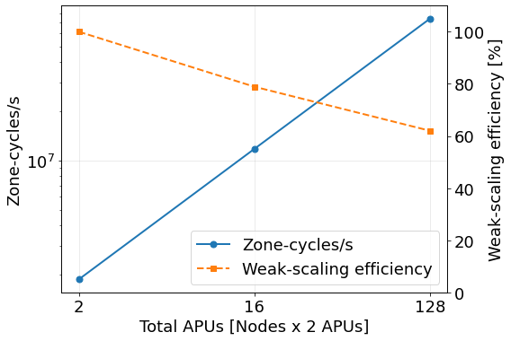
图注：Weak-scaling performance of \codeName\ on Viper-GPU. The blue curve shows the aggregate throughput in zone-cycles per second, while the orange curve shows the weak-scaling efficiency normalized to the two-APU result. The workload per APU is held fixed as the allocation increases from 2 to 128 APUs.
对应解读：“建议重点查看的图表”第7项弱扩展图，以及“关键图表逐图导读”图6性能和扩展性图。
入选理由：这张图直接对应摘要中最核心的性能结论：从2到128个MI300A APU、吞吐量提高39.7倍、弱扩展效率约62%。它同时给出吞吐量和归一化效率，是判断加速版代码实际可扩展性的首选图。
来源与置信度：\(arxiv_source\)；high；\(arxiv_source\) / main.tex:figure[10]
Fig05
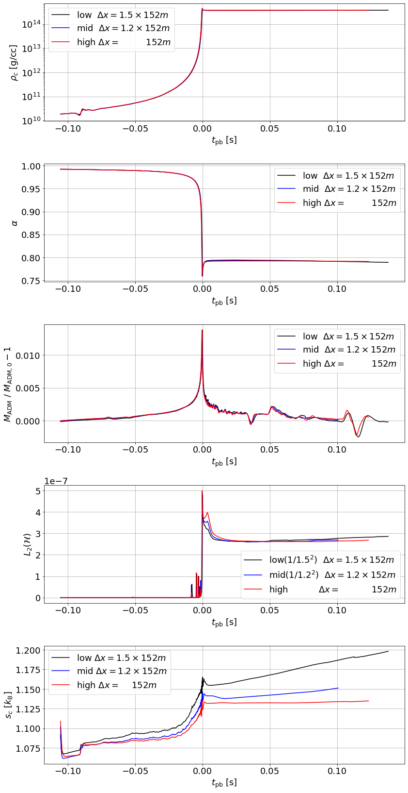
图注：Adiabatic collapse and core bounce of the $50\,M_\odot$ progenitor at three spatial resolutions. From top to bottom, the panels show the central rest-mass density $\rho_c$, central lapse $\alpha_c$, fractional deviation of the ADM mass from its initial value $M_{\rm ADM}/M_{\rm ADM,0}-1$, $L_2$ norm of the Hamiltonian-constraint violation, and central entropy per baryon. Time is measured relative to core bounce, $t_{\rm pb}=0$. The close agreement of the three resolutions in the collapse and bounce dynamics, together with the controlled ADM-mass error and Hamiltonian-constraint violation, verifies the coupled GR-hydrodynamics evolution. Because the collapse is adiabatic, the resolution dependence of the central entropy provides a sensitive measure of numerical entropy production during bounce.
对应解读：“建议重点查看的图表”第3项动态时空测试和约束违反曲线，以及模型比较段落中关于哈密顿约束、ADM质量漂移和分辨率收敛的讨论。
入选理由：该图同时展示中心密度、中心lapse、ADM质量误差、哈密顿约束违反和中心熵，并含三种分辨率，是验证GR-流体耦合、反弹动力学、守恒误差和约束控制的最完整候选图。
来源与置信度：\(arxiv_source\)；high；\(arxiv_source\) / main.tex:figure[5]
Fig04
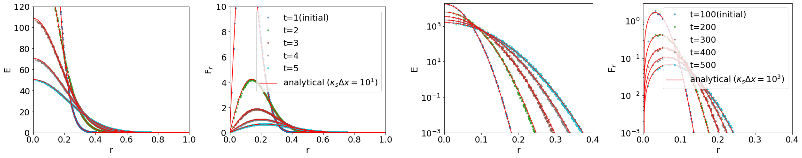
图注：Diffusion of a spherical radiation pulse in a static, purely scattering medium. The left and right columns show the radiation energy density $E$ and radial radiation flux $F^r$, respectively. The upper row uses $\kappa_s\Delta x=10$, whereas the lower row uses $\kappa_s \Delta x=10^3$ and is shown with logarithmic ordinates to expose the pulse tails. Numerical profiles at the times indicated in the legends are compared with the analytic diffusion solution. Their agreement demonstrates that both radiation moments evolve correctly in the optically thick limit, including the high-opacity case.
对应解读：“建议重点查看的图表”第2项辐射输运测试图，以及“关键图表逐图导读”图3关于扩散极限、辐射能量密度和通量的说明。
入选理由：这张图用解析扩散解检验辐射能量密度E和径向通量F^r，并覆盖高不透明度情形，直接支撑多能群M1输运在光学厚极限下的正确性验证。
来源与置信度：\(arxiv_source\)；high；\(arxiv_source\) / main.tex:figure[4]
Fig07
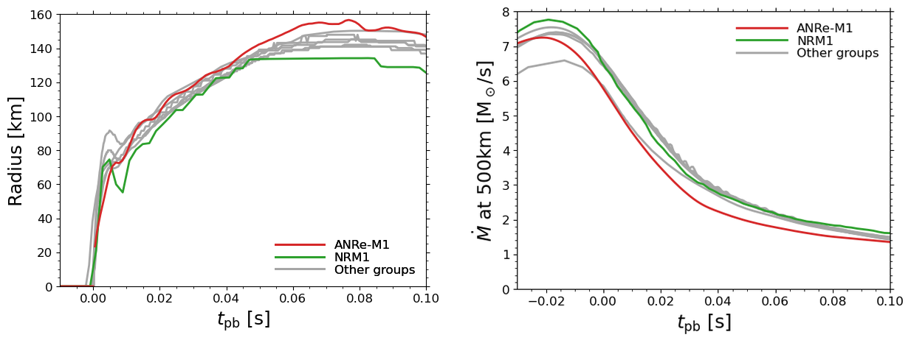
图注：Hydrodynamic comparison for \(\codeName\) (red), the CPU-based NRM1 code (green), and the six other code groups participating in the comparison of \(\citet{OConnor2018}.\) Left: shock radius. Right: mass-accretion rate measured at a radius of $500$~km. All simulations use the common progenitor, SFHo equation of state, and prescribed neutrino-interaction set.
对应解读：“建议重点查看的图表”第4项与旧代码或代码比较研究的对照图，以及三维/核心坍缩算例中关于激波半径和质量吸积率的诊断。
入选理由：该图把ANRe-M1、旧CPU版NRM1和O’Connor等代码比较中的多个团队结果放在同一初始条件下比较，包含激波半径和500 km处质量吸积率，是判断新代码物理结果是否落在社区基准散布内的关键图。
来源与置信度：\(arxiv_source\)；high；\(arxiv_source\) / main.tex:figure[7]
Fig08
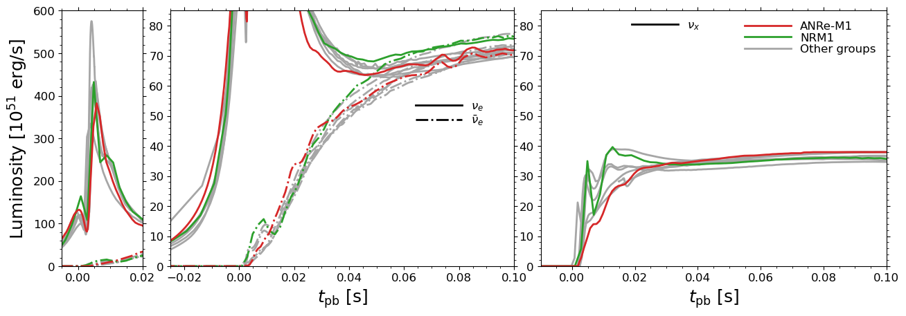
图注：Neutrino luminosities as functions of post-bounce time for \(\codeName\) (red), the CPU-based NRM1 code (green), and the six other groups participating in the comparison of \(\citet{OConnor2018}.\) The left panel enlarges the prompt electron-neutrino burst, the middle panel shows the electron-neutrino (solid) and electron-antineutrino (dash-dotted) luminosities, and the right panel shows the luminosity of one representative heavy-lepton species.
对应解读：“建议重点查看的图表”第4项旧代码/社区比较，以及第5项代表性坍缩算例中的中微子信号诊断。
入选理由：中微子光度是核心坍缩超新星M1输运代码最重要的输出之一。该图比较电子中微子爆发、电子反中微子和重味中微子光度，能直接检验输运模块与旧代码及社区基准的一致性。
来源与置信度：\(arxiv_source\)；high；\(arxiv_source\) / main.tex:figure[8]
Fig02
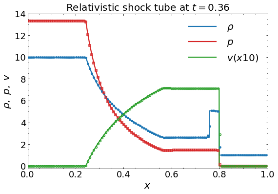
图注：Relativistic shock-tube solution at $t=0.36$. The rest-mass density $\rho$, pressure $p$, and ten times the normal three-velocity $v_x$ are shown. Continuous curves give the exact special-relativistic Riemann solution and symbols show the numerical result. The numerical profiles reproduce the smooth rarefaction and the positions and intermediate states of the contact discontinuity and leading shock.
对应解读：“建议重点查看的图表”第1项流体标准测试剖面，以及“关键图表逐图导读”图2关于激波管密度、压力、速度剖面的说明。
入选理由：该图给出相对论激波管中密度、压力和速度的数值解与精确Riemann解对照，可检查稀疏波、接触间断和激波位置，是验证相对论流体求解器处理间断问题能力的直观证据。
来源与置信度：\(arxiv_source\)；high；\(arxiv_source\) / main.tex:figure[2]
强相关工作
这篇工作属于同类源/同类问题文献中的“数值相对论辐射流体代码与核心坍缩超新星模拟”方向，而不是某个命名天体事件的观测论文。因此没有同一事件或同一源论文；应把它放在 \(M1\) 中微子输运、全广义相对论核心坍缩、GPU/Kokkos 天体物理代码、以及社区代码比较研究的脉络中读。检索关键词可用：“core-collapse supernova general relativistic neutrino radiation hydrodynamics M1”、“BSSN Z4c core collapse supernova”、“Kokkos GPU numerical relativity”、“multi-energy M1 neutrino transport supernova code comparison”。
相近工作包括基于不同数值框架的三维超新星代码，例如 \(FLASH\)、\(Fornax\)、\(CoCoNuT\)、\(AGILE\)-\(BOLTZTRAN\)、\(CHIMERA\)、\(VERTEX\) 相关系列，以及数值相对论并合模拟中的 \(M1\) 中微子输运代码。相反或张力观点主要来自两方面：一是 Boltzmann 输运或蒙特卡洛输运指出 \(M1\) 闭合在角分布上可能有系统偏差；二是不同维度、分辨率和微物理选择会改变爆炸结论，使代码间比较必须非常谨慎。
同一事件 / 同类源线索：
相似工作：
（未提供）
基础理论 / 方法工作：
（未提供）
相反观点 / 张力线索：
（未提供）
6. FRB 121102: No supernova-like ejecta or magnetar power, hinting at a binary WD merger
- 来源：arXiv / astro-ph.HE
- 链接：https://arxiv.org/abs/2608.26567v1
- 作者：Eli Waxman, Eran O. Ofek, Doron Kushnir
- 评分：novelty 8/10，importance 7/10，relevance 8/10，final 8.65/10
- 推荐理由：Uses FRB 121102 dispersion-measure evolution and persistent-radio-source energetics to place strong constraints on progenitor models, arguing against ordinary SN ejecta/magnetar power and for a WD-merger channel; notable for a key repeating FRB.
中文题目：FRB 121102：没有类超新星抛射物，也不像磁星磁能供能；更像白矮星并合后的延迟形成中子星
做了什么：这篇文章把重复快速射电暴 FRB 121102 的时变色散量与其持续射电源的早期观测放在一起，重新约束中心引擎、持续射电源等离子体能量和外层冷等离子体。作者认为，持续射电源中相对论等离子体的能量至少为 \(10^{49.5}\,\mathrm{erg}\)，年龄约为 \(60\,\mathrm{yr}\)，因而平均供能功率超过 \(10^{40}\,\mathrm{erg\,s^{-1}}\)。如果中心源是中子星，能量更可能来自旋转能而非磁场能，对应大致 \(10\,\mathrm{ms}\)、\(10^{12.5}\,\mathrm{G}\) 的新生中子星；吸积也不能排除。更关键的是，约束持续射电源的冷等离子体膨胀速度只有几百 \(\mathrm{km\,s^{-1}}\)，动能和速度都不像普通超新星抛射物。作者提出一个更自然的情景：双白矮星并合先抛出低速、较大质量物质，经过约 \(10^3\,\mathrm{yr}\) 的热演化后形成快速自转中子星，再点亮持续射电源和 FRB 活动。
为什么重要：FRB 121102 是第一个被精确定位的重复 FRB，也是“FRB 加持续射电源”范式的原型。很多模型默认它是年轻磁星嵌在超新星遗迹中；这篇文章直接用可观测的 \(\mathrm{DM}\) 演化和持续射电源能量预算检验这个图像，结论是普通超新星壳层和单纯磁星磁能供能都很难同时满足约束。若成立，它会把 FRB 121102 从“年轻磁星在超新星壳中”推向“并合后延迟坍缩形成中子星”的通道。
理论 / 观测 / 仪器方法价值：理论价值在于把持续射电源的最小能量、年龄、压力约束、冷等离子体色散量和膨胀动力学连成一套闭合的能量—质量—速度诊断，而不是只拟合 FRB 爆发本身。观测价值在于指出长期 \(\mathrm{DM}\) 监测和持续射电源的射电光谱、角尺寸、通量演化可以强力区分超新星、磁星风星云、吸积和白矮星并合方案。方法价值在于示范了怎样用看似缓慢变化的传播效应反推源区百年到千年尺度的动力学历史。
为什么应该关注：如果你研究 FRB 起源，这篇文章挑战了最常用的 FRB 121102 年轻磁星解释；如果你做射电观测，它告诉你 \(\mathrm{DM}\) 随时间的斜率、持续源的尺寸和频谱比单次爆发能量更能约束环境；如果你做致密星演化，它把双白矮星并合、延迟坍缩、中子星形成和 FRB 活动放进了同一条可检验的时间线。即使你不同意作者的白矮星并合解释，这篇文也提供了一组必须被任何 FRB 121102 模型同时通过的硬约束。
展开详细解读：文章讲解、背景、理论、重点章节、图表与相关工作
文章详细讲解
科学问题：FRB 121102 具有重复爆发、矮星系宿主、高法拉第旋转量和一个紧凑持续射电源，这些特征长期被解释为“年轻中子星或磁星嵌在超新星遗迹或磁星风星云中”。但这个解释必须同时满足三类约束：持续射电源需要很大的相对论等离子体能量；周围冷等离子体必须贡献并演化出观测到的 \(\mathrm{DM}\)；外层物质的速度、质量和年龄不能与持续源的大小和亮度冲突。本文的核心问题就是：这些约束是否真的允许普通超新星抛射物和磁星磁能供能？
作者怎么做：作者使用 FRB 121102 多年 \(\mathrm{DM}\) 测量的时间变化，并结合持续射电源的早期射电观测，估算相对论等离子体的最小能量、源年龄和平均供能率。他们进一步把持续射电源看作被冷等离子体外壳限制的相对论气泡，用压力平衡、自由膨胀或缓慢膨胀、色散量贡献和时间导数建立约束。这样，\(\mathrm{DM}\) 不只是传播修正量，而成为测量外层电子柱密度、膨胀速度和历史抛射时间的动力学探针。
关键结果：作者得到持续射电源相对论等离子体能量 \(E_{\rm rel}>10^{49.5}\,\mathrm{erg}\)，特征年龄约 \(t_{\rm PRS}\approx60\,\mathrm{yr}\)，对应平均功率 \(L\gtrsim10^{40}\,\mathrm{erg\,s^{-1}}\)。若中心源是中子星，磁能库很难自然提供如此持久而大的功率，旋转能更合适，参数接近初始周期 \(P\sim10\,\mathrm{ms}\)、偶极磁场 \(B\sim10^{12.5}\,\mathrm{G}\) 的普通强磁场快速中子星，而不是极端磁星。外层冷等离子体的膨胀速度被限制在几百 \(\mathrm{km\,s^{-1}}\)，这比普通超新星抛射物的 \(10^3\) 到 \(10^4\,\mathrm{km\,s^{-1}}\) 低得多；除非超新星抛射物高度团块化，且相当一部分质量集中在尺度分数约 \(10^{-2.5}\) 的高密度团块中，否则普通超新星壳层不合适。
局限和下一步：本文的强结论依赖于把 \(\mathrm{DM}\) 演化归因于源近旁冷等离子体，并依赖持续射电源的能量、几何、填充因子、电子能谱和压力平衡估计。若持续射电源有复杂多区结构，或 \(\mathrm{DM}\) 变化中有宿主星际介质、局部电离前沿、等离子体透镜等贡献，推断会改变。下一步最关键的是继续测量 \(\mathrm{DM}(t)\)、旋转量 \(\mathrm{RM}(t)\)、持续源通量和谱形是否按同一动力学模型演化，并通过甚长基线干涉测量持续源尺寸或膨胀上限。对白矮星并合方案来说，还需要更详细地计算并合残骸热演化、延迟坍缩时间分布、低速抛射物电离状态，以及形成的中子星能否在正确时间释放足够旋转能。
关键结果是怎么做出来的
本文的证据链从样本选择开始就很集中：对象不是一个 FRB 族群，而是单个原型源 FRB 121102。作者选用的是该源多年重复爆发给出的 \(\mathrm{DM}\) 时间序列，以及与它空间重合的紧凑持续射电源射电观测。单源研究的优点是多类观测量可以互相约束；弱点是统计意义不来自源数目，而来自同一源上多种物理量之间的闭合性。
第一步是持续射电源能量预算。根据持续源的射电光度、谱形和紧凑尺寸，可用同步辐射最小能量或近似均分条件估计相对论电子和磁场总能量。作者给出的下限为 \(E_{\rm rel}>10^{49.5}\,\mathrm{erg}\)，并结合源年龄 \(t_{\rm PRS}\approx60\,\mathrm{yr}\) 得到平均供能 \(L\gtrsim E_{\rm rel}/t_{\rm PRS}\)，约大于 \(10^{40}\,\mathrm{erg\,s^{-1}}\)。支撑这一点的图表通常应包括持续源能量—半径或能量—年龄允许区、射电谱拟合以及亮度温度或自吸收约束。
第二步是 \(\mathrm{DM}\) 演化。若局部冷等离子体以半径 \(R\) 膨胀，电子柱密度近似随 \(R^{-2}\) 下降，因而 \(\mathrm{DM}\) 的时间导数可转化为膨胀速度与年龄约束。作者把实测 \(\mathrm{DM}(t)\) 的变化幅度和变化率同持续源外壳模型相连，发现若外层是普通超新星速度的抛射物，\(\mathrm{DM}\) 应该下降得太快或对应半径、质量、压力不合适。由此得到冷等离子体速度只有几百 \(\mathrm{km\,s^{-1}}\) 的结论。
第三步是模型比较。年轻磁星加超新星遗迹模型可以解释高能量和年轻环境的一部分，但在本文的参数组合下，普通超新星壳层速度过高，磁星磁能供能功率和总能量也显得紧张。旋转供能中子星可以给出足够能量，但外层介质更像低速、高质量、较老的并合抛射物。作者因此提出双白矮星并合：并合阶段先抛出低速物质，残骸经过约 \(10^3\,\mathrm{yr}\) 热演化后形成中子星，中子星再在约 \(60\,\mathrm{yr}\) 前开始注入相对论等离子体。
显著性和置信度在这类工作中不是简单的 \(5\sigma\) 事件发现，而是参数空间排除：在给定几何、填充因子、电离分数和能量估计的条件下，普通超新星速度、能量与观测 \(\mathrm{DM}\) 斜率和持续源能量不能同时满足。读者应重点看作者如何画出允许区和排除区，尤其是速度、年龄、质量、团块化尺度和能量之间是否存在隐含先验。稳健性检验的关键是：改变电离分数、壳层厚度、团块填充因子、持续源半径和非均分程度后，低速外壳和高功率引擎结论是否仍保留。
展开背景、理论、公式、模型、章节和图表导读
背景知识
FRB 121102 是 FRB 研究史上的关键对象：它首先证明至少一部分 FRB 可以重复爆发，随后被定位到一个低金属丰度矮星系，并发现有一个紧凑、非热的持续射电源与 FRB 位置重合。这使它不像一次性灾变事件，而更像一个长期活动的致密天体系统。它的高 \(\mathrm{RM}\) 和复杂爆发现象也提示源周围可能有强磁化、致密的等离子体环境。
历史上，FRB 121102 常被拿来类比年轻蟹状星云系统或年轻磁星风星云：新生中子星在超新星抛射物内部注入相对论粒子和磁场，形成紧凑射电星云；FRB 脉冲穿过周围等离子体，留下大的 \(\mathrm{DM}\) 和 \(\mathrm{RM}\)。这种图像直观而有吸引力，因为它同时解释了重复性、强磁环境和持续射电源。然而，直观并不等于动力学自洽：超新星抛射物的速度、密度下降、自由—自由吸收和星云能量都必须与实测量一致。
为什么现在值得重新看？因为 FRB 121102 已经积累了足够长时间基线的 \(\mathrm{DM}\) 和 \(\mathrm{RM}\) 数据，持续射电源也有多频和高角分辨率观测。早期模型可以只用“年轻、致密、磁化”来解释现象；现在则必须解释这些量如何随时间演化。时间导数往往比绝对值更难伪装，因为它直接反映源区尺度、速度和密度变化。
该领域一个常见误区是把“有持续射电源”直接等同于“年轻磁星风星云”，或把“大 \(\mathrm{DM}\)”直接等同于“超新星遗迹”。实际上，\(\mathrm{DM}\) 只测电子柱密度，不直接告诉我们物质是超新星、恒星风、并合抛射物还是宿主星际介质；持续射电源也只说明有非热粒子和磁场，不唯一指定能量来源。另一个误区是只比较总能量而忽略供能时间：同样的 \(10^{49}\) 到 \(10^{50}\,\mathrm{erg}\)，若要求在几十年内稳定注入，物理含义就完全不同。
基础理论 / 方法脉络
基础物理图像可以从两种等离子体分开看：一种是产生持续射电源的相对论电子和磁场，它们通过同步辐射发光；另一种是包围或混合在外部的较冷电子，它们主要不发强同步辐射，却会给 FRB 脉冲贡献 \(\mathrm{DM}\)、吸收和散射。本文的关键是把这两部分通过压力和几何联系起来：相对论气泡需要被外部物质限制，外部物质同时又会在传播中留下可测印记。
\(\mathrm{DM}\) 的物理意义是视线方向自由电子数密度积分。若局部壳层在膨胀，壳层质量大致守恒而半径增大，电子柱密度通常下降，因此 \(\mathrm{DM}\) 会随时间降低。下降快慢取决于膨胀速度、半径、壳层厚度、电离分数和几何。本文正是利用 \(\mathrm{DM}(t)\) 的缓慢变化来限制外层冷物质不可能以典型超新星速度快速远离。
持续射电源的能量估计来自同步辐射理论。给定射电通量、距离、谱形和源尺寸，可以在电子能量和磁场能量之间寻找最小总能量，也就是常说的均分或最小能量估计。若源太小，要产生观测亮度需要较强磁场和较高粒子能量；若源太大，能量密度下降但总体积增加，也会增加总能量。因此持续源尺寸上限或自吸收约束会直接影响 \(E_{\rm rel}\)。
中子星供能有两类常见能量库：旋转能和磁能。旋转能由转动惯量和角速度决定，对毫秒到十毫秒中子星可以很大；磁能取决于内部磁场强度和体积，只有非常强的磁星内部场才能达到很高总能量。本文认为，如果需要几十年尺度上超过 \(10^{40}\,\mathrm{erg\,s^{-1}}\) 的平均功率，旋转能比磁能更自然，且对应的偶极磁场不需要达到极端磁星水平。
主要退化关系包括：持续源能量与源半径、磁场均分因子和低能电子截断退化；\(\mathrm{DM}\) 推断的质量与电离分数、几何覆盖因子和团块化退化；速度与年龄通过半径相互退化；本地 \(\mathrm{DM}\) 与宿主星系或星际介质 \(\mathrm{DM}\) 也有分量分解问题。本文的结论之所以有力度，是因为这些退化虽然能移动数值，却很难让普通高速超新星抛射物同时满足低 \(\mathrm{DM}\) 演化率、高压力限制和持续源能量预算。
公式与推导
第一步，从色散量定义开始。FRB 脉冲的传播延迟由自由电子柱密度给出：
其中 \(n_e\) 是自由电子数密度，\(l\) 是视线方向距离。若把近源冷等离子体近似为质量 \(M\)、电离分数 \(x_e\)、半径 \(R\) 的壳层，则量级上有
其中 \(\mu_e m_p\) 是每个自由电子对应的质量，\(m_p\) 为质子质量。这个式子说明，在质量守恒且电离分数不剧烈变化时，电子柱密度主要随 \(R^{-2}\) 下降。
第二步，把 \(\mathrm{DM}\) 时间导数转化为动力学约束。若壳层以速度 \(v=dR/dt\) 膨胀，且 \(M\) 与 \(x_e\) 近似不变，则
因此观测到的缓慢 \(\mathrm{DM}\) 变化给出
这一步是本文排除高速普通超新星壳层的核心逻辑之一：若 \(v\) 太大，在几十到几百年尺度内 \(\mathrm{DM}\) 应出现更快衰减，除非几何或电离状态被特殊调节。
第三步，用持续射电源年龄和半径联系速度。若相对论等离子体气泡年龄为 \(t_{\rm PRS}\)，半径为 \(R_{\rm PRS}\)，平均扩张速度为
那么观测上对 \(R_{\rm PRS}\) 的上限和对 \(t_{\rm PRS}\) 的估计会限制气泡是否能在普通超新星抛射物中形成。本文给出的 \(t_{\rm PRS}\approx60\,\mathrm{yr}\) 与外部冷物质更老、速度更慢的约束结合，暗示外层物质并非与持续源同时由普通超新星抛出。
第四步，持续源的同步辐射最小能量可用量级关系表示为
其中 \(L_{\rm syn}\) 是同步辐射光度，\(V\) 是发射体积，\(k\) 表示非辐射粒子能量相对电子能量的比例，\(C\) 含有谱指数和频率积分范围。本文使用这类能量预算得到 \(E_{\rm rel}>10^{49.5}\,\mathrm{erg}\)。这个下限不是简单的通量换算，而是结合了非热辐射和源尺寸后的能量约束。
第五步，平均供能率由能量除以活动年龄给出：
代入 \(E_{\rm rel}>10^{49.5}\,\mathrm{erg}\) 和 \(t_{\rm PRS}\approx60\,\mathrm{yr}\)，得到 \(L_{\rm eng}\gtrsim10^{40}\,\mathrm{erg\,s^{-1}}\) 的量级。这个功率是判断磁能、旋转能或吸积能是否可行的关键。
第六步，若引擎是旋转中子星，其可用旋转能为
其中 \(I\) 是转动惯量，\(\Omega=2\pi/P\) 是角速度，\(P\) 是自转周期。对 \(P\sim10\,\mathrm{ms}\) 的中子星，\(E_{\rm rot}\) 可达到 \(10^{50}\,\mathrm{erg}\) 量级，足以支持本文要求的相对论等离子体能量。
第七步，偶极自转变慢功率可写为
其中 \(B_d\) 是表面偶极磁场，\(R_{\rm NS}\) 是中子星半径，\(c\) 是光速。这个式子连接了本文提到的 \(P\sim10\,\mathrm{ms}\)、\(B_d\sim10^{12.5}\,\mathrm{G}\) 与所需长期功率。相比极强磁星场，较普通的偶极场可以让能量释放时间尺度更长。
第八步，冷抛射物动能为
若 \(v\) 只有几百 \(\mathrm{km\,s^{-1}}\)，则同样质量下 \(E_k\) 远低于普通超新星的 \(10^{51}\,\mathrm{erg}\) 量级，也更接近白矮星并合或并合后风抛射物的动力学尺度。这个公式是本文从“速度不对”进一步走向“能量来源和抛射机制不对”的桥梁。
第九步，若用参数拟合来表达观测约束，可以把 \(\mathrm{DM}\) 时间序列写成高斯似然：
这里 \(\mathrm{DM}_i\) 和 \(\sigma_i\) 是第 \(i\) 次观测的色散量及误差，\(\mathrm{DM}_{\rm model}\) 是壳层模型。即使本文重点是物理约束而非盲目统计拟合，这个似然形式也说明读者应如何检查不同环境模型是否真正被数据支持。
模型拟合 / 应用方法
这类工作的拟合量主要不是 FRB 单个脉冲轮廓，而是长期传播和持续源参数：\(\mathrm{DM}(t)\)、可能的 \(\mathrm{RM}(t)\)、持续源通量密度 \(F_\nu\)、谱指数、源尺寸上限、亮度温度和通量演化。模型参数包括冷壳层质量 \(M\)、速度 \(v\)、半径 \(R\)、电离分数 \(x_e\)、覆盖因子、团块填充因子，以及相对论气泡能量 \(E_{\rm rel}\)、磁场 \(B\)、电子谱参数和年龄 \(t_{\rm PRS}\)。
似然或统计比较可以分成两块。第一块是 \(\mathrm{DM}\) 时间序列拟合：给定壳层膨胀模型，计算每个观测时刻的 \(\mathrm{DM}_{\rm model}\)，再与数据比较。第二块是同步辐射持续源拟合：给定电子能谱、磁场和体积，拟合 \(F_\nu\) 及其随频率和时间的变化。严格做法应把两块联合起来，因为同一个半径和压力同时影响 \(\mathrm{DM}\) 和持续源。
最重要的退化关系是几何和微物理退化。\(M\) 与 \(x_e\) 几乎总是以 \(x_eM\) 的组合进入 \(\mathrm{DM}\)；壳层厚度和团块化会改变局部密度，从而影响自由—自由吸收和压力，但对总柱密度的影响不完全相同；同步辐射能量估计依赖低能电子截断、质子能量占比和磁场均分程度。作者特别指出，普通超新星模型只有在大量质量集中于很小尺度分数约 \(10^{-2.5}\) 的高密度团块中时才可能逃过部分约束，这正是几何退化的极端形式。
残差应该这样看：若 \(\mathrm{DM}(t)\) 模型系统性给出过快下降，说明速度或电离演化假设不对；若持续源谱拟合需要极端偏离均分或过高能量，说明供能模型有问题；若自由—自由吸收预测会遮蔽 GHz FRB，但实际上 FRB 可见，则冷等离子体密度和温度组合被排除。一个好模型必须同时让 \(\mathrm{DM}\) 变化、射电透明度、持续源能量和源年龄都合理。
模型可能失败的地方也很清楚。若观测 \(\mathrm{DM}\) 变化主要来自宿主星系内其他电离结构，而不是近源壳层，则本文对冷抛射物速度的约束会变弱。若持续源不是单个气泡，而是吸积流喷流、外激波热点或多区混合源，最小能量和年龄解释也会改变。若未来 VLBI 测到持续源明显扩张，或 \(\mathrm{RM}\) 与 \(\mathrm{DM}\) 演化不符合低速老壳层图像，白矮星并合方案需要修正。
重点章节 / 结果段落怎么读
数据和观测约束部分应优先读。重点看作者采用哪些 FRB 121102 的 \(\mathrm{DM}\) 测量、时间基线多长、是否剔除了不同望远镜或不同爆发子结构导致的系统偏差，以及持续射电源的通量、谱形和尺寸约束来自哪些观测。这里决定了后面所有动力学推断的输入是否稳健。
持续射电源能量预算部分是第二个重点。读者应检查作者如何从射电观测得到 \(E_{\rm rel}>10^{49.5}\,\mathrm{erg}\) 和 \(t_{\rm PRS}\approx60\,\mathrm{yr}\)：是否采用均分假设，是否使用自吸收或尺寸上限，电子谱积分范围如何选，非辐射粒子能量是否包含。这个部分直接决定中心引擎功率下限。
\(\mathrm{DM}\) 演化和冷等离子体动力学部分是论文的判别核心。读者应跟踪 \(\mathrm{DM}\)、半径、速度、质量和电离分数之间的关系，看作者如何得出膨胀速度只有几百 \(\mathrm{km\,s^{-1}}\)。尤其要注意他们如何处理本地 \(\mathrm{DM}\) 与宿主星系背景 \(\mathrm{DM}\) 的分解。
超新星抛射物排除和团块化讨论部分要细读。作者并非说任何爆炸都不可能，而是说典型超新星速度和动能不匹配，除非引入很强的高密度团块化。这里应看团块尺度分数约 \(10^{-2.5}\) 的要求从哪里来，是否物理自然，以及是否会引入过强吸收或散射。
白矮星并合解释部分应作为一个可检验场景来读，而不是当作已经证明的起源。关键是双白矮星并合能否抛出低速、较大质量物质，残骸能否在约 \(10^3\,\mathrm{yr}\) 后形成中子星，以及新生中子星能否在约 \(60\,\mathrm{yr}\) 内给持续射电源供能。读者应留意作者提出了哪些未来观测判据。
建议重点查看的图表
-
\(\mathrm{DM}\) 随时间变化图：看数据点是否显示单调趋势，误差条是否小于年际变化，不同观测设备之间是否有系统偏移。
-
持续射电源光谱或通量演化图：看 \(F_\nu\) 的谱指数、是否有自吸收转折、通量是否稳定或随时间衰减，这决定最小能量和年龄估计。
-
持续源能量—半径或能量—年龄允许区图：看 \(E_{\rm rel}>10^{49.5}\,\mathrm{erg}\) 的下限是否对源尺寸和均分假设敏感。
-
冷壳层质量—速度或 \(\mathrm{DM}\)—速度约束图：看普通超新星速度区域是否被排除，以及低速几百 \(\mathrm{km\,s^{-1}}\) 区域是否自然落入允许区。
-
中心引擎参数图：若有 \(P\)—\(B\) 平面，应看所需供能区域是否对应 \(P\sim10\,\mathrm{ms}\)、\(B\sim10^{12.5}\,\mathrm{G}\)，以及磁星磁能方案为何紧张。
-
团块化或填充因子约束图：看需要多小的团块尺度和多大的质量分数才能挽救超新星解释，判断这是否只是数学可行而非物理自然。
-
方案时间线示意图：看外层低速物质抛出、约 \(10^3\,\mathrm{yr}\) 延迟演化、新中子星形成、约 \(60\,\mathrm{yr}\) 持续源活动这几个时间尺度是否彼此一致。
关键图表逐图导读
图 1：建议首先读 \(\mathrm{DM}\) 对观测时间的图。横轴应是年份或相对时间，纵轴是 \(\mathrm{DM}\)。数据点代表不同爆发或不同观测批次，模型线代表近源壳层膨胀导致的 \(\mathrm{DM}\) 演化。主要结论是 \(\mathrm{DM}\) 变化足够慢，从而限制壳层速度不能接近普通超新星抛射物速度。读图陷阱是不同爆发的频率结构、仪器频带和去色散方法可能带来小的系统偏差，不能只看肉眼斜率。
图 2：持续射电源光谱图通常横轴为频率 \(\nu\)，纵轴为通量密度 \(F_\nu\)。数据点是多频射电测量，模型线是同步辐射谱，可能包含自吸收或谱断。要看谱形是否支持紧凑非热源，以及低频端是否有吸收限制。读图陷阱是非同时观测会把源内禀变化误认为谱弯曲，进而影响能量估计。
图 3：能量—尺寸或能量—年龄图通常横轴为源半径 \(R\) 或年龄 \(t\)，纵轴为相对论等离子体能量 \(E_{\rm rel}\) 或所需功率 \(L_{\rm eng}\)。模型曲线可能对应不同磁场均分因子、电子谱或填充因子。关键是确认 \(E_{\rm rel}>10^{49.5}\,\mathrm{erg}\) 是否是宽参数范围内的下限，而不是某个单一假设点。读图陷阱是对数坐标会弱化能量差异，\(0.5\) dex 已经是很大的物理差别。
图 4：冷抛射物约束图可能横轴为速度 \(v\)，纵轴为质量 \(M\)、动能 \(E_k\) 或 \(\mathrm{DM}\) 贡献。普通超新星区域应位于高速度、高动能一侧，白矮星并合抛射物位于低速度区域。主要结论是观测允许区偏向几百 \(\mathrm{km\,s^{-1}}\)，不支持典型超新星。读图陷阱是电离分数 \(x_e\) 和覆盖因子会平移允许区，必须看作者给出的多条系统误差曲线。
图 5：若论文给出中子星 \(P\)—\(B\) 参数空间，横轴可能是初始周期 \(P\)，纵轴是偶极磁场 \(B\)。等值线表示旋转能、spin-down 功率或 spin-down 时间。读者应看满足持续源功率和年龄的区域是否落在 \(P\sim10\,\mathrm{ms}\)、\(B\sim10^{12.5}\,\mathrm{G}\) 附近。读图陷阱是内部磁场和外部偶极场不是同一个量，不能把偶极 \(B\) 直接等同于磁能库。
图 6：如果有白矮星并合情景示意或时间线图，应把它当作模型结构图而非证据图。横轴通常是时间，从并合、低速抛射、热演化、坍缩成中子星到 FRB 和持续源阶段。关键是看约 \(10^3\,\mathrm{yr}\) 的延迟和约 \(60\,\mathrm{yr}\) 的持续源年龄如何被不同观测量分别支持。读图陷阱是时间线示意容易显得自然，但真正判据仍是速度、质量、能量和 \(\mathrm{DM}\) 斜率。
论文原图 / 可嵌入图片
（未提供 verified figure；为避免编造图片链接，本节只在能确认官方图片 URL 或成功提取论文原图时嵌入图片。）
强相关工作
同一源 FRB 121102 的相关工作非常多，至少包括发现其重复性、精确定位、宿主星系识别、持续射电源发现、高 \(\mathrm{RM}\) 测量和长期 \(\mathrm{DM}\) 监测。本文与这些工作不是竞争关系，而是把它们的观测量重新组合成动力学约束。建议检索关键词包括“FRB 121102 persistent radio source”，“FRB 121102 dispersion measure evolution”，“FRB 121102 rotation measure”，“FRB 121102 VLBI persistent source”。
同类理论背景包括年轻磁星风星云模型、超亮超新星或长伽马暴后磁星模型、FRB 与超新星遗迹传播效应模型，以及白矮星并合后延迟坍缩形成中子星的通道。本文的相反或张力观点主要是：FRB 121102 是否仍可由年轻磁星加普通超新星遗迹解释，是否需要特殊团块化；持续射电源是否一定是磁星风星云，还是可能来自低光度活动星系核、吸积流或外激波。建议检索关键词包括“magnetar wind nebula FRB persistent radio source”，“young magnetar FRB supernova ejecta DM evolution”，“white dwarf merger neutron star FRB”。
同一事件 / 同类源线索：
- https://arxiv.org/abs/2608.26567
- https://arxiv.org/abs/1701.01098
- https://arxiv.org/abs/1701.01100
- https://arxiv.org/abs/1701.01099
- https://arxiv.org/abs/1801.03965
相似工作：
基础理论 / 方法工作：
相反观点 / 张力线索：
说明
评分由 LLM 给出初评，再由本地阈值策略过滤；IACT、TeV 伽马射线和高能中微子天文学按重点方向处理。